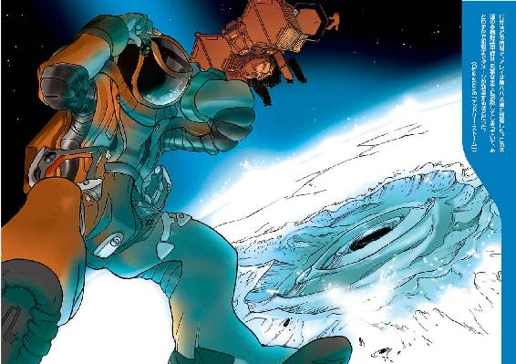
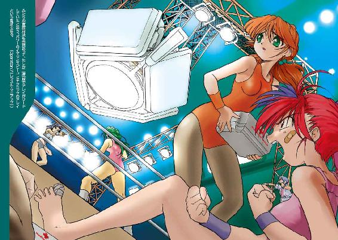
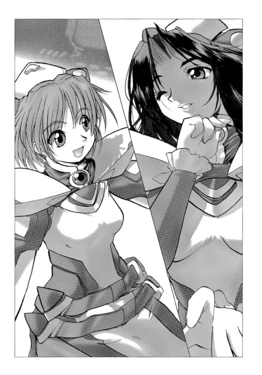

| スターシップ・オペレーターズ(2) (電撃文庫) | |
| 水野 良 & 山根 公利 | |
| (2013) | |


本書（電子版）に掲載されているコンテンツ（ソフトウェア／プログラム／データ／情報を含む）の著作権およびその他の権利は、すべて株式会社ＫＡＤＯＫＡＷＡおよび正当な権利を有する第三者に帰属しています。
法律の定めがある場合または権利者の明示的な承諾がある場合を除き、これらのコンテンツを複製・転載、改変・編集、翻案・翻訳、放送・出版、公衆送信（送信可能化を含む）・再配信、販売・頒布、貸与等に使用することはできません。
初出 電撃アニメーションマガジン ２００１年１，２，４，５月号（オペレーション６，７）
スターシップ・オペレーターズオフィシャルサイト（オペレーション８～）
カバーデザイン◎荻窪裕司
編集◎フィールドワイ
キャラクターＣＧ◎内藤隆
オペレーション６ デッドリー・ストーム
１
二三〇〇年四月一日 ヘンリエッタ星域スパルタ星系──
人類が到達したもっとも遠い領域である散開星団ヘンリエッタ──
二〇〇〇あまりの恒星からなるこの星団の地球方向の外縁部に、惑星国家スパルタは存在している。
二つの惑星に五〇あまりのドーム都市を擁し、総人口はおよそ一億人。
入植を進めた母体となった国はなく、国連移民局の呼びかけに応じて集まった有志の開拓団によって地球化が進められている植民惑星である。
だが、宇宙開拓の熱気も冷めつつあった当時、その呼びかけに応じる者は少なく、国連職員や国連軍への参加経験を持つ軍人の家族が、数多く入植に参加したことが当時、話題となった。
そして現在、このスパルタの惑星国家政府が中心となって〝ヘンリエッタ星域惑星国家同盟〟が結成され、ヘンリエッタ星域の他の惑星国家と戦争状態にある。
地球圏からの独立を企てるヘンリエッタ星域の惑星国家群の独裁者を排除するというのが戦争の理由だ。
しかし同盟に敵対する国々は、領土拡大を目的とした侵略戦争に過ぎないと非難し、〝王国〟という名称で同盟を呼ぶようになっていた。
「またひとり、減ったか......」
ヘンリエッタ星域惑星国家同盟宇宙軍に所属する重装巡航艦コンキスタドールの艦長であるデュール・エルロイはひとりごとをつぶやきながら、円形に配置されたテーブルの所定の席に着いた。
ヘンリエッタ星域惑星国家同盟宇宙軍、最高会議の議場である。
参加資格を有するのは、同盟宇宙軍に所属する宇宙戦闘艦の艦長のみ。
この二カ月のあいだに、三隻の戦闘艦が失われ、それぞれ艦長が艦と運命を共にしている。
そしてキビ星系での戦闘で大破し、解体処分が決まった掃宙艦サラミスの艦長も、最高会議のメンバーから先日、解任された。
「王国始まって以来の出来事だな」
「エルロイ艦長、口を慎みたまえ」
右隣の席にいる偵察艦レパントの艦長ティエト・ランガーが小声で忠告してくる。
〝王国〟というのは、同盟に敵対する勢力が名付けた蔑称であって、公式の場で口にすべき言葉ではない。
「これは失礼した......」
帽子をとって、わざとらしい敬礼をランガーに返してから、エルロイは〝円卓〟を囲む艦長たちのなかから、ひとりの人物に注目する。
ヘンリエッタ星域惑星国家同盟最高会議議長であり、同盟宇宙軍司令長官であり、旗艦ソロモンの艦長でもあるオーギュスト・ペリエその人に......
（さて、国王陛下のご機嫌はいかがかな？）
今日の会議の主題は、当然〝自由護衛艦〟なる敵艦への対応策になるはずだった。工廠艦プレペザ、突撃駆逐艦トラファルガーの二艦が、この最新鋭の敵戦闘艦との交戦で撃沈されている。
「同盟宇宙軍の威信にかけて、あの戦闘艦は沈めなければならない！」
この会議のメンバーのなかで最年長の艦長であるリカルド・ファレスが、荒々しく席を立って話をはじめた。
彼が指揮しているのは、潜航艦アブキール。最先端のステルス性能を備えた〝見えざる〟戦闘艦である。
「同盟に参加している惑星政府のいくつかで、同盟からの脱退を求める市民のデモが起こりはじめている。すべては、あの不愉快きわまる戦闘艦とＴＶ番組のせいだ」
「お言葉ではありますが、現状、敵艦の撃破は困難ではないでしょうか？ 複数の戦闘艦を差し向ければ、敵は平気で逃亡してしまいます。守るべき国民がいないのですから。そうかと言って、最新鋭の敵艦に、一対一の戦いを挑むのは無謀というものです」
同盟宇宙軍における最年少の艦長であるりー・ユン・スクが、年長のファレスに遠慮しながらも、反対意見を述べた。
「ならば、どうせよと言うのだ？」
はるかに年下の艦長に反論され、ファレスは表情を険しくする。
「複数の戦闘艦で戦える状況に相手を追いこむか、敵艦の性能を分析したうえで優位に立てる戦闘艦を派遣するか、そのいずれかではないか、と......」
「それでは、あまりに消極的すぎる。貴君には軍人としての誇りがあるのか？」
エルロイの左隣の席にいた高速攻撃艦マリアナの艦長ルイス・ベルモントが激昂したように言う。
「誇りで戦いに勝てるなら、わたしももっと誇り高い人間になりますがね。なんなら、誇り高き貴艦が戦闘を挑んでみてはどうですかな。貴艦も同盟宇宙軍のなかでは新鋭艦でしょう」
エルロイはベルモントにだけ聞こえるぐらいの声で、皮肉を言った。
「命令があれば、喜んで戦う！」
「はたして勝てますかな？」
「戦ってみなければ、分からんだろう」
エルロイを睨みつけながら、ベルモントは唾を飛ばさんばかりの勢いで言った。
「それが問題だというのです。勝てるかどうかも分からない戦いをあえて挑む必要がどうしてあります？ わたしはリー艦長の意見に全面的に賛成しますな。ギャンブルのチップにするには、宇宙戦闘艦一隻は高価すぎるとは思いませんか？」
「私語は、慎みたまえ」
右隣のランガーが焦ったような様子で、声をかけてくる。
口論のあいだに声が大きくなり、マイクを通さなくても、会議室全体にふたりの声が響いていたのだ。
「これはふたたび失礼した。しかし、今の発言はわたしの公式の意見と思っていただいてけっこうです」
悪びれた様子もなく、エルロイは言って、ふたたび〝国王〟ペリエに視線を向ける。
同盟最高会議議長は、いつにもまして無表情な印象を受けた。
この初老の軍人が一〇年前に起こしたクーデターから、王国の歴史は始まったのである。
彼が示したことは単純ではあったが、大きな衝撃を全世界にもたらした。
すなわち、一隻の宇宙戦闘艦によって防衛されている国家においては、たったひとりの軍人によって、国家は征服されうるという事実だ。
そして彼は莫大な国債を発行して得た資金で、二隻の戦闘艦を建造し、ヘンリエッタ星域惑星国家同盟宇宙軍を結成した。そして近隣の惑星国家に侵攻し、それらの国々を同盟に加入させていったのである。
同盟に加入した惑星国家に課せられる義務は、軍事力の放棄と軍事費の供出。そして国防は、同盟に移管されるのだ。
一〇年という期間を経て、同盟に参加している惑星国家は、先日、条約に調印した惑星国家キビを含めて、今や一四を数えるまでになった。
地球の国連宇宙軍を除いては、最大の軍事力を擁する宇宙軍である。それが、たった一隻の宇宙戦闘艦によって翻弄されているわけだ。
（最新鋭艦が惑星防衛の任務から解放されたというだけで、我が王国軍の戦略が根底から覆されるとはな）
エルロイは我知らず、苦笑を洩らしていた。
宇宙戦闘艦にとって至上の任務は、母国のある惑星の防衛である。その任務を放棄することのできない敵艦を、複数の戦闘艦によって撃破するというのが、王国のこれまでの戦術であった。
その戦術は、単純ではあったが極めて有効で、王国建国以来、二〇余隻の戦闘艦が沈められている。
（あのとき、オレにもヤツらと同じことができていたらな......）
エルロイはしかし、その考えをすぐに捨て去った。
（まともな軍人に、母国を捨てるなどという発想ができるはずがない。たとえ、母国を裏切るという発想ができたとしても、な......）
彼らの行動は、士官学校の練習生だったからこそなのだ。若さはときに利益よりも理念を優先させた行動に走らせるものだからだ。
ヘンリエッタ星域惑星同盟軍会議はまだ続いており、白熱した議論が戦わされている。
しかし、エルロイはもはやその議論に加わるつもりはなかった。
すでに正しい答えは出ている。装甲艦レイテを指揮する若いリー艦長は、答えを出す順番を間違えたのだ。
最初に正論を出してしまっては、それに思いいたらなかった人間の反発を招くだけなのである。
（おかげで、会議の時間が延びてしまったぜ......）
エルロイは、心のなかで舌打ちをする。
そして会議は、彼が予想したとおり、無意味に長引いた。
あげく決定されたのは、現在設計段階にある次期宇宙戦闘艦に、敵艦を圧倒しうるよう抜本的な変更を加えること。銀河ネットをはじめとするメディア対策を強化すること。そして敵艦の監視のために、戦闘艦を一隻、敵艦に張りつかせることである。
その任務を与えられたのは、これもエルロイの予想したことだが、彼が指揮する重装巡航艦コンキスタドールであった──
２
二三〇〇年四月一日 フェニキアⅢ衛星軌道上──
〝王国〟の戦闘艦トラファルガーとの激戦から五日が過ぎていた。
視聴者からの公募で、ようやく〝アマテラス〟と艦名が決まった自由護衛艦は、フェニキア星系の宇宙空間に、その白銀の船体を浮かびあがらせている。
地球の太陽とほとんど同じ光の成分を持つ（しかし星齢は一〇億年ほど若い）恒星フェニキアは右舷に遠く、歓楽惑星として名高いフェニキアⅢは、左舷に青く輝いている。
自由護衛艦〝アマテラス〟は、フェニキアⅢの衛星軌道を周回しながら、トラファルガーとの戦闘で被った損害の補修作業を行っている。
宇宙港の真空ドックが使えたら、修理も短期間で終えられるのだが、王国から警告（というよりも脅し）がフェニキアの総支配人に対してあったらしく、使用を拒絶されてしまったのである。
そのため、補修作業は遅々として進んでいない。
レーザーキャノンで損傷を受けた多機能装甲板〝スカラベ〟の単純な張り替え作業なのだが、損傷箇所が想像したよりも多く、達成率はいまだ二〇パーセントに満たない。
船外作業の資格を持つ乗員が作業用宇宙服に身を包み、総出で補修作業に従事しているが、時間はまだまだかかると思われた。
そして今、第一艦橋のメインモニターは一六の画面に分割され、補修作業の様子を映しだしている。
主任観測員の秋里ミユリはモニターを見ながら、補修作業の監視任務に就いていた。
作業員の安全を守るためである。
しかし彼女の視線はときどき、どうしようもなくモニターから離れる。
艦長席を挟んで激しく口論している〝艦長〟神崎キスカと主任通信員の氷坂アレイのふたりに視線が向いてしまうからだ。
「何度、言われても、許可できないものはできない」
キスカはいつになく強い口調でアレイに言っている。
もっとも帽子を目深にかぶっているので、彼女の顔は直視していないかもしれない。
「わたしは船外作業員の資格を持っています。例外は認めないでください」
アレイは艦長席に身を乗りだしながら、言葉を返す。
「問題にしているのは、キミの資格じゃない。遺伝子なんだ」
「わたしの身体です。誰よりも分かっているつもりです......」
アレイは毅然として言った。
防衛大学に入学したときに行った健康診断で、彼女は遺伝子に欠陥があることを指摘されている。
遺伝子修復にかかわる部位が変異していたのだ。
高エネルギーの宇宙線を浴びるなどして遺伝子が傷ついたとき、その修復にエラーが起こり、細胞の癌化など致命的な障害を発症する確率が高いのである。
「太陽風が吹き荒れる宇宙空間は、キミにとって危険すぎる場所だ。命にかかわる問題なんだぞ」
番組『スターシップライブ』で放映されている冷静沈着な自分を思い浮かべながら、キスカはアレイを説得しようとする。
しかし、彼女の反応は番組のなかとはまったく違っていた。
艦長に対して尊敬の気持ちや従順さはまるでなく、全身で反発しているような態度だった。
（番組のなかのキミは、あれほどクールなのにな......）
熱血もほどほどにしてほしいと、キスカはうんざりとなる。
「遺伝子による差別は行ってはならないと、二〇一五年のヒト＝ゲノム条約で制定されているはずです」
「当人に不利益な差別は行ってはならないだ！」
キスカはむっとなって、怒鳴りかえす。
「ボクは、国際弁護士の有資格者なんだぞ!!」
そして右袖に付いた資格章を指で示す。
宇宙軍は他国の宇宙軍や政府関係者と直接接触する機会もあり、外交官としての能力も要求されることが多いため、修得した資格だった。
将来、護衛艦の艦長に任官されるため、有利になるはずの資格である。そして彼以外にこの資格を持っている乗員はいない。
「不利益かどうかを決めるのは、あんたじゃなく、あたしだろ！」
アレイは口調をガラリと変えて、艦長席の操作盤を両手で叩いた。
「スポーツにだって、ドクターストップというものはある。キミに病気にでもなられたら、責任を取らされるのは、ボクなんだぞ」
「誰もあんたに責任を取れなんて、言ってない！」
「キミが言わなくても、世間が言うんだ！」
「世間なんて関係ない。この艦は母国を捨てているんだから！」
「国民はいなくても、何千万という視聴者がいるじゃないか！」
アレイの迫力に気圧されながらも、キスカは一歩も退かなかった。
このままでは殴りあいになりかねないと思い、ミユリは仲裁に入ろうと、座席から腰を浮かす。
しかし、そのとき、
「よそ見はしないの」
と、艦長補佐の香月シノンに声をかけられ、ミユリはぴたりと動きを止めた。
「そのあいだに、船外作業で事故でも起こったら大変でしょ」
「だけど、シノン......」
ミユリは何か言いかえそうとしたが、シノンは首を横に振って、その言葉を遮ると、モニターに注目するよう指で合図する。
「分かった......」
ミユリはうなだれるようにうなずいて、ふたたび座席に腰を下ろす。
そんな彼女に、シノンは、
「ふたりの口論は、どうせ聞こえてくるんだから」
と、声をかけた。
その言葉で、ミユリの表情は明るくなる。
シノンがキスカとアレイの口論を無視しているわけではないと分かったからだ。
「それにしても、艦長も頑張るね」
シノンに言われたとおり、モニターを見つめながら、ミユリは言った。
「アレイよりも視聴者のほうが、怖いんじゃない」
シノンはそう言って、くすりと笑う。
今、この瞬間も、テレビカメラは回っているのである。
もっとも、撮影された映像がそのまま流されるわけではない。不都合なシーンはカットされるし、別の映像が合成され、差し替えられることもあるのだ。
３Ｄデータや音声データさえ取りこんでおけば、その人間をＣＧで再現し、自在に動かすことができるし、しゃべらせることもできる。
二〇世紀に創られた映画のリメイクが当時と同じキャストを使って続々と作られ、すでに死んだ俳優の新作も公開される。今は、そんな時代なのである。
キスカとアレイのふたりは睨みあったまま、次の言葉を探そうとして沈黙している。
そのときだった。
第一艦橋のドアが開いて、白衣に身を包んだ女性が姿を現した。袖には軍医の資格を示す記章が付いている。
防衛医大の研修医、篠原ミナセである。
彼女は、この艦に乗り組んでいるただひとりの医療スタッフだった。
キスカの頭越しに、その姿を認めたアレイが、当惑の表情を浮かべる。
「なんで、あんたが......」
「シノンに、メールで呼ばれたのよ。アレイがだだをこねてるって」
ニヤニヤした顔で言いながら、ミナセは床を歩いてくる。
医務室という有重力区画にいつもいるので、ミナセは無重力移動を得意としていない。そのため粘着靴を使って移動することが多いのだ。
アレイは一瞬、シノンに視線を向けたが、彼女はまったく素知らぬ顔をして、モニターを見つめ続ける。
「いつのまに、メールなんか？」
ミユリが目を丸くしながら訊ねる。
彼女がそんなことをしているとは、まったく気づかなかったのだ。
「さっき、ちょっとね。このままだと、議論は平行線だから」
シノンは表情ひとつ変えずに言う。
あくまで任務に専念しているというポーズである。
しかし、ふたりの口論のほうにも、だいぶ注意は向けられていたに違いない。そういえば防衛大学時代、講義の最中、彼女が〝内職〟の達人だったことをミユリは思いだす。
「ドクターからも、彼女になんとか言ってやってください」
キスカはあからさまに安堵の表情を浮かべると、自分の責任は終わったとばかり、艦長席を立って、第一艦橋をもあとにした。
「逃げちゃった......ね」
それを見たミユリが、呆れたような顔で言う。
「ドクターに判断を一任したってことなんでしょうけど......」
責任を取るのが艦長の仕事ではないかと、シノンは苦笑を浮かべる。
「軍法会議ものの敵前逃亡よね」
ミユリも同感だというように相槌を打った。
抗議をしていた相手がいなくなり、アレイはしかたなくミナセに向きなおった。
「......たとえ、あんたに止められても、あたしは船外へ出るからな」
アレイの口調は、あいかわらず断固としたものだった。
「そんなに突っかからない。わたしは別に、あなたを止めに来たわけじゃないから」
「許可を、与えてくれるのか？」
アレイは驚いたような顔をする。
「止めたって、どうせあなたは聞かないでしょ」
「そのとおりさ。だったら、話は終わりでいいな」
アレイはホッとしたように言うと、第一艦橋の入口に向かって、床をかるく蹴る。
長身でしなやかな身体がふわりと宙に舞う。
しかし、アレイの細く引き締まった足首をミナセはガシリとつかんで、強引に床へと引き戻した。
「勝手に決めない」
ミナセは言って、アレイがキスカに対して先刻そうしたように、鼻の先が触れるほどに顔を近づけてゆく。
「最大二時間──それまでなら認めるわ。でも、その後、精密検査を受けてもらう。異常が見つかったら即、入院。その条件を飲むならね」
「異常がなかったら、ふたたび船外作業に出てもいいんだな」
「同じ条件でなら」
ミナセの言葉に、アレイは静かに首を縦に振った。パープルの髪が、無重力下でふわりと流れる。
それから彼女はふたたび宙に舞うと、第一艦橋から今度こそ出ていった。
「どうやら、交渉は成立したみたいね」
ほっとしたように胸を押さえながら、ミユリがシノンに声をかけた。
豊かに膨らんだ制服が、柔らかく沈んでゆく。
身長こそあまり高くないが、ミユリの胸はシノンよりも大きい。
シノンは同性として素直に羨ましく思っているのだが、彼女自身は劣等感を抱いているようだ。
無重力下で勤務していると、胸が浮かんでくる感覚がするのも嫌なのだという。
「でも、アレイさん、大丈夫かな。放射線障害とか確率で起きるもんでしょ。たとえ時間が短くったって......」
「心配しない。この艦には、最新式の医療設備が搭載されているんだから......」
しかも、このわたしが乗っている、とミナセがミユリに答えた。そして高らかに笑いながら、ふたたび床を歩いて第一艦橋をあとにする。
そんな彼女を見送ってから、シノンとミユリは、
「だから、心配なんだけど......」
と、顔を見合わせた。
研修医というのは医者の卵──いや、ひな鳥のようなもので、資格はあるものの経験が圧倒的に不足している。
医務室行きになったら覚悟しようと、シノンは先日、第三艦橋勤務の里見レンナと艦内メールをしたばかりだ。
「とにかく、わたしたちはできることをしないと」
「できることって？」
きょとんとした顔で、ミユリはシノンを見つめる。
「そうねぇ、とりあえずフェニキアの太陽の観測かな」
「太陽の観測？」
シノンの言葉の意味が分からず、ミユリはしばしのあいだ首を傾げた。
しかし、やがてハッとなり、勢いこんでうなずいた。
「了解。第三艦橋のリオにも連絡するね」
ミユリは言いながら、各種の観測機器をフェニキアの太陽に向けてゆく。
彼女の個人用モニターに、フェニキアの太陽の真の姿が映しだされる。
数万度の温度で燃え上がる巨大な核融合炉──
「お願いね」
シノンは微笑んで、
「船外作業の監視は、わたしが引き受けるから......」
と、続けた。
フェニキアの太陽の活動は、今のところ安定している。しかし、いつ異常な活動を起こすかは分からない。
そしてそのときには、放射線と電磁波の嵐が吹き寄せてくることになるのだ。
星間気象観測を担当している間宮リオに連絡を入れたのは、宇宙線のエネルギーレベルの監視を頼むためである。
高レベルの宇宙線を検出したら、無理矢理でもアレイを艦内に連れ戻さなければならない。
（思う存分、働いてきて）
シノンは心のなかで、アレイに呼びかけた。
（わたしたちも、一緒にがんばるからね）
３
「第一艦橋の騒動、やっと終わったみたいよ」
自由護衛艦の通信制御室で、ディータ・ミルコフは、チャンネル・プロデューサーであり番組ディレクターでもあるピーター・スパイクスを振り返った。
彼は何日かぶりに、シャワーを浴びたらしく、髪も整え、無精髭も剃っている。
しかし数日後には、またいつもの薄汚れた格好に戻っているのだろう。
チャンネルを開始させてから、彼はおそらく一日に三時間ほどしか寝ていないはずだった。
その甲斐あって、チャンネルは最初のハードルを越えようとしている。
先日、放送した特別番組の効果もあって、チャンネルの加入者は一気に増え、様々なメディアで取り上げられるようにもなってきている。
戦争は最大の娯楽番組だというスパイクスの信念は正しかったということだ。
しかし、そう度々、戦闘はあるものではない。
戦闘がないあいだ、どのように視聴者を満足させるかが、次の課題となるはずだった。
「女たちの表情は、ちゃんと押さえられただろうな」
スパイクスはひとりごとのようにつぶやきながら、いくつかのカメラが収めた映像を巻き戻して、チェックをはじめる。
「さっきの騒動のときの？ もしかして、番組で流すつもりなの」
「あんなおいしいネタを見逃すわけがないだろ。遺伝子に欠陥を持ちながら、あえて危険な船外作業に赴く女性乗組員。感動的じゃねぇか」
スパイクスは言うと、放送作家のトニー・ガリアーノと番組の構成について早速、打ち合わせをはじめる。
その会話を聞いていて、ディータはスパイクスが何を考えているのか、分かったような気になった。
（いよいよ仕掛けるつもりね）
スパイクスは、この艦には戦争よりも視聴者をひきつける素材があると確信しているのだ。
女性オペレーターたちである。
戦う女性ということで、彼女たちは番組の視聴者の人気を集めはじめている。
そんな彼女らをどう売りだしてゆくかのアイデアも、スパイクスのなかではまとまってきたのだろう。
（あなたが次にシャワーを浴びられるのは、いったいいつになるかしらね）
ディータは微笑みながら、何十とあるモニターの映像のひとつを見つめた。
そこは船外へと通じる気密扉に近い部屋で、様々なサイズの作業用宇宙服が置かれている。
そしてひとりの若い女性が今、軍服を脱ぎ、アンダーウェアになっている。
第一艦橋勤務の通信員、氷坂アレイである。
プロのモデルかと思うような長身とプロポーション。先日、番組のなかで見せた大胆な水着姿にも大きな反響があった。
（まったく素晴らしい素材だわ）
ディータは心のなかでつぶやき、寂しく微笑んだ。
惑星国家エカテリーナの国営放送に勤めていたときのことをふと思いだす。
しかし、すべては昔話だ。
今の自分は主役ではない。番組の案内役でしかないのだから......
４
鮮やかな青色をした簡易スーツに身を包んだあと、氷坂アレイは銀色に輝く作業用宇宙服に身体を入れてゆく。
宇宙服は円筒形のブースにセットされていて、全身が完全に入ると、巨大なヘルメットが頭上から降りてきてスーツと接続される。
そして自動的に気密性が確保され、生命維持機能が作動する。
アレイは音声コマンドで、ヘルメットのディスプレイに、点検マニュアルを表示させた。
その手順に従って、アレイは宇宙服が正常に機能、動作するかの確認作業に入る。
「気密性確保。酸素量最大。生命維持機能、正常に作動......」
声に出して読みあげ、点検項目をクリアしてゆく。この作業を終了しないと、ブースから外へは出られない仕組みなのだ。人為的ミスを防止するための安全機能である。
「体温、心拍、血圧、呼吸率、正常値」
しかし、問題のない範囲であったが、それぞれの値が普段よりも高いことに、アレイは気がついた。
「あわてないで、アレイ......」
アレイは声に出して、自分自身を落ち着かせる。
「訓練のとおりにやればいいだけなんだから」
アレイが本物の宇宙空間に出るのは、これが初めてだった。
巨大な円筒形のプールという擬似的な無重力状態で、五〇時間の訓練を行ったに過ぎない。
訓練の成績は悪くなかった。
しかし宇宙港での実習や練習航海のあいだに、アレイが宇宙空間での実作業を経験することはなかった。
すべては彼女の遺伝子のせいであった。
普通に防衛大学を卒業し、航宙自衛隊に入隊していたとしても、アレイはおそらく地上勤務に就かされていたはずだ。
いかに宇宙戦闘艦の乗員として必要な資格を揃えていようと、訓練の成績がいかに優秀であっても、宇宙線に弱いという体質は致命的なビハインドなのだ。
しかし今、アレイは最新鋭の宇宙戦闘艦に乗り組み、〝王国〟と戦っている。
それは、彼女にとって願ってもない幸運だった。
宇宙艦の乗員になりたかったというより、彼女には王国と戦わねばならない理由があるからだ。
だから、神崎キスカと間宮リオが提案したこの計画にも真っ先に賛成した。
もちろん、命など捨てたつもりでいる。宇宙線障害など怖くも何ともない。
アマテラスの乗員に、船外作業の有資格者は、それほど多いわけではない。
作業員たちは休息時間も返上して、作業に従事しているのだ。
全員、消耗しきっているに決まっている。しかし損傷を受けた装甲をそのままにしておくのは、戦闘艦にとってあまりにも危険だった。
だからこそ、補修作業が休みなく続けられているのである。
そんな状況にあって、個人的な理由で自分だけが作業を免除されているなど、アレイにとっては耐えられない屈辱だった。
一分一秒でも長く、船外で作業を続けるつもりでいる。
「点検作業終了」
アレイのその声で、作業用宇宙服のロックが解除され、ブースが開放される。
アレイは慎重に一歩を踏みだし、気密室に通じる扉のほうへと移動する。
宇宙服を着るのも、久しぶりのことだった。同じ無重力下でも、いつもの制服とは感覚がだいぶ違った。
普段なら、水泳をしているような感覚で素早く移動できるのだが、今は身体が重くなったようにゆっくりとしか動けない。
ようやく扉にたどり着くと、二重のセキュリティを解除してから気密室に入った。
そして扉をロックする。
アレイは機密室内のコントロールパネルを操作し、室内の空気を抜いてゆく。
一分ほどの時間をかけて、室内は真空となった。
「いよいよ、よ......」
アレイは声に出して言って、船外へと続く通路に入った。
壁に設置された移動手摺に捕まって進んでゆくと、通路にふたつ設けられた隔壁が、彼女の接近を感知して自動で開き、通過するとふたたび閉じる。
そしてついに、自由護衛艦と宇宙空間とを隔てる最後の扉の前にやってきた。
バイザーの内側に映るヘッドアップディスプレイに、作業用宇宙服の状態を表示させ、異常がないことをもう一度、確認する。
それから操作パネルに向かって、扉が開くための一連の手続きを行った。
それが終わった瞬間、扉は静かに開く。
扉の向こうには、星々が無数に輝く宇宙空間が広がっていた。
地上から見るのとは異なり、星の光は瞬くことはない。そのためだろうか、星空に立体感はなく、巨大なモニターに静止画を映しているかのような印象を覚えた。
明るい星々が目立つのは、散開星団ヘンリエッタのなかにいるためだ。星々の距離は、地球周辺の宙域に比べるとはるかに近い。
そして極光にも似たＭ42オリオン大星雲が宇宙空間のかなりの領域を隠している。決して晴れることのない光の雲だ。母なる地球は、その光の雲の向こう一五〇〇光年彼方にある。
惑星キビⅣの地上から見たのとは違う、自由護衛艦の艦内のモニターで見るのとも違う、本物の宇宙空間だった。
訓練のときに、作業用宇宙服を柔らかく包みこんでいた液体は、これから行く先にはない。
「今さら、脅えるなんて」
キャラじゃないぞ、とアレイは自分自身を叱咤する。
「氷坂アレイ、これより船外作業に入ります」
通信をオンにして、アレイは言った。
「──了解しました。モニターを開始します」
香月シノンの凜とした声が耳もとに返ってくる。
五島提督にコンピューターの合成音声のようだと評されたという噂を聞いているが、スピーカーから流れてくる彼女の声は、たしかに機械的な印象を覚える。しかし、それはあくまで彼女の〝よそゆき〟の声である。
待機時間や休息時間のときなどは、意外に子供っぽい話し方をしているのを、アレイは知っている。話し相手のひとりが幼なじみの秋里ミユリだということもあるのだろうが......
「──気をつけて。そしてがんばってください」
そのミユリの明るい声が続いた。
「ありがとう......」
アレイは素直に礼を返す。
シノンとミユリのふたりは、彼女が船外に出ることについて、ひと言も反対しなかった。無関心だからではなく、自分の気持ちを分かってくれたからだと、アレイは感じた。
アレイが第一艦橋の乗員に選ばれたのは、能力ではなく銀河ネットの都合である。
シノンもミユリも、これまでほとんど話をしたこともない間柄だったが、二度の戦闘や、番組の企画などで一緒に行動をするようになり、だいぶ気心が知れるようなっていた。
（サポート、よろしく）
アレイはふたりに心のなかで呼びかけると、作業用宇宙服に装備された推進装置を噴射させた。
その瞬間、アレイの身体は自由護衛艦を離れ、宇宙空間に飛びだしていた。
（落ちる!?）
スラスターを噴かしすぎたのか、アレイは思いがけない速度で進んでゆく。
重力こそ感じないが、まさに宇宙の深淵に向かって〝落ちてゆく〟という印象だった。
「あたりまえだけど、水のなかとは違うということね......」
アレイは冷静になろうとして、あえて声に出して言った。
水の抵抗というのは、あたりまえに感じているが、意外に大きいということだ。同じ感覚でスラスターを噴かしたので、速度が出すぎてしまったのだろう。
訓練と実戦の違いというものを、アレイはまざまざと思い知らされた。
「慣れたら、いいだけさ」
アレイはつぶやくと、スラスターを小刻みに噴かして、艦との相対運動を調整してゆく。
思った以上に時間がかかったが、アレイはなんとか艦に対して〝ゆっくり〟と動けるようになった。
「──艦首第八八装甲板へ向かってください」
シノンの声がふたたび耳に聞こえてきた。
「──そこでパートナーが待ってますから......」
「パートナーだって？」
シノンの言葉を聞いて、アレイは怪訝そうに問いかえす。
「そんなのは必要ない。作業内容だけを指示してください」
「──規則を調べてみたんですけど、船外作業が一〇〇時間に満たない者は単独での作業が禁じられているんです」
「了解......」
アレイは苦笑まじりに答えた。
不満は覚えないでもなかったが、規則とあれば従うしかない。
「氷坂アレイ、艦首第八八装甲板へ向かう」
シノンの命令を復唱してから、アレイは艦首に向かって移動を開始した。
そのときだった。
アレイの目の前で、小さな青い光がちかりと輝いた。
今のはなに、と自問しようとして、アレイははっとなる。
宇宙線が網膜を突き抜けたのだと、気づいたからだ。
彼女の脳はそれを、青い光の点として認識したのだ。
そして次の瞬間、同じ輝きがふたたび目に映る。
アレイは深呼吸して、フェニキア星系の太陽に視線を向けた。
それは四〇億年ものあいだ、莫大なエネルギーを放ち続けている恐るべき核融合炉である。
（日焼け止めでも塗ってくればよかったな......）
アレイは思わず苦笑を洩らす。
そんな致命的な日差しのなかで、アレイは、これから作業を行うことになるのだ。
５
宇宙空間は漆黒ではない。
ビッグバンの名残である絶対温度三度の背景放射、散開星団ヘンリエッタに属する星々の輝き、そして宇宙の一画に光のカーテンのごとくかかるＭ42オリオン大星雲。
人間の目が知覚するもの、しないもの、宇宙空間は様々な放射線に満ちている。
それが今、主任通信員たる氷坂アレイの全身に降り注いでいる。
その大部分は作業用宇宙服の電磁波遮蔽機能が防いでくれている。
しかし、その遮蔽をくぐり抜けた放射線が、この瞬間も、彼女の細胞にダメージを与えている。そして、そのダメージを修復するはずの彼女の遺伝子には致命的な欠落があるのだ。
研修医の篠原ミナセから許された時間はわずか二時間。そのあいだに、どれだけの作業ができるのか、彼女にも分からない。
しかし、なにもせずにはいられなかったのだ。
第一艦橋のなかで、ぬくぬくとしているのは、彼女の性分には合わない。
（航宙自衛隊と言えば、最高のエリートなのにね）
自分はそんな柄じゃない、と思っている。あの出会いがなければ、今頃は惑星キビの宇宙港周辺で、仲間たちとたむろしていたことだろう。
惑星キビでも最下層の人々が暮らすスラム街のなかで。
アレイは香月シノンが転送してくれたナビゲーション・システムに従って、自由護衛艦アマテラスの艦首方向に移動している。
そこには、彼女にとって指導員となるパートナーが待っているはずだった。
（いったい誰だろう）
と、アレイは疑問を覚えた。
順当なところで言えば、五人いる整備員の誰かだ。彼らは機械、電気のエキスパートで、作業機器と時間さえかければだが、この艦を分解し、ふたたび組み立てることさえできる。もっとも経験不足は否めないので、いくつか部品を余らせるかもしれないが。
間違いなく言えるのは、アマテラスの試験航海以来、彼らこそがもっとも多忙であったということだ。
「いつかＴＶに特番で」というのが、彼らのなかでの合い言葉になっていると、噂に聞いたことがある。
船外に出てから一〇分ほどで、アレイは第八八装甲板のあるエリアに到達した。
問題の装甲板は、見事なまでに熔融してしまっていて、あとわずかで船殻までダメージが到達するほどだった。
電磁波反射薄膜〝カスミ〟で分散されたレーザーキャノンの〝破片〟によるダメージである。
電磁波吸収体〝イカスミ〟で吸収されてなお、これである。直撃を受けていたなら、どんな被害になるか容易に想像できた。
アレイはパートナーとなるはずの人物を探して、一〇メートルほど上空に、ひとりの人間──というより宇宙服──が、漂っているのを見つける。
手を後頭部で組み、足も組んでいる。
野外で昼寝するときの古典的なスタイルだが、ここでは重力は働いていないのだ。
もちろん、それは正確な言い方ではないのだが、船外作業をするうえでは、そう理解しておいて問題はない。
アレイはスラスターを噴かして、パートナーのところへと移動した。
そしてヘルメットを相手のヘルメットに押しつけると、無線を切ってから、
「起きてくれない？」
と大声で叫んだ。
その声はヘルメットを通じて宇宙服の空気を震わし、相手の耳にまで到達するはずだった。
突然の大声に、相手はあきらかに動揺し、手足をばたばたさせた。無重力下にあるので、それは無様な回転運動となる。
その回転運動を、なんとか止めると、今度は相手がヘルメットを押しつけてきた。
「他に起こし方があるだろうが！」
抗議の声がヘルメット越しに伝わってくる。その声には、聞き覚えがあった。
第二艦橋に配属の砲術長兼副艦長の桐生タカイである。
「なんで、あなたが？」
「船外作業の資格を持っているからに決まってるだろ」
タカイは怒鳴りかえしてくる。
「副艦長が作業中に寝てていいの？」
「こっちは、規定の作業時間を大幅に越えてるんだ。そのぐらいは大目に見てもらわないとな」
「何時間連続で作業をしているの？」
「そろそろ一〇時間になる。その前は三時間の仮眠を挟んで、一五時間作業した」
タカイから返ってきた答えに、アレイは胸の痛みを感じた。
心のなかで謝るが、それを言葉にはしない。
「時間がもったいないわ。作業をはじめましょ」
アレイはタカイに声をかける。
「はいよ......。桐生タカイ、氷坂アレイ、これより第八八装甲板交換作業に入る」
「──了解しました。装甲板の固定を解除します。小型艇は、およそ三〇分後に到着。交換用の装甲板を下ろしますので、それまでに損傷した装甲板を本艦から切り離しておいてください」
スピーカーを通じて、アレイの耳にもシノンの声が聞こえてくる。
こちらからの通信は切れていても、向こうからは入ってくるのだ。
「さて、作業をはじめるか......」
タカイはひとりごとのように言うと、スラスターを短く噴かして、損傷した装甲板に降り立つ。
「手順の確認するぞ」
無線回線のひとつをアレイと直接接続する操作をしてから、タカイが声をかけてきた。
「だいたいは理解しているけど......」
「だいたいじゃ困るんだよ。この作業はひとつのミスも許されないんだ。この艦の死命にかかわるからな」
多機能装甲板スカラベは、追加装甲である。被弾率の高い箇所に張りつけられ、その他の場所は自由護衛艦本来の船殻だけで守られている。
そういった場所に、レーザーキャノンなりビームキャノンなりの直撃を受ければ、一瞬にして終わりだ。
だが、宇宙艦どうしの戦闘の場合、被弾の可能性があるのは、正面だけと考えてよい。
それ以外の方向から敵艦の攻撃を受けるようなことはおよそ考えられない。そうなった場合には、そのはるか以前の段階から、戦いに敗北していたと言うしかない。
「スカラベの装甲厚は五メートル。耐熱、耐衝撃、耐電磁波の層が何重にも繰りかえされている......」
タカイはなげやりな口調で、スカラベの機能の説明をはじめる。
「知ってます」
アレイも同じような口調で返事をする。
行事とか儀式みたいなものなのだ。自由護衛艦の乗員は防衛大学生であり、正規の軍人ではない。だからこそ、規定を守ってゆこうと全体集会で決定している。そうでないと学生気分になって、とてもではないが戦争など続けてゆけないからだ。
「装甲板一枚がカバーする範囲は、五メートル四方。つまり、装甲板といってもサイコロのようなもんだな。そして、このサイコロは隣り合う六個の装甲板と複雑に接続されている。碁盤の目じゃなく、レンガを積み上げるように配列されているわけだ」
「それも、知ってます」
あくびが出そうになるのをこらえながら、アレイはタカイに答える。
おそらく彼も、あくびをしたい気分だろう。なにしろ、さっきまで仮眠をしていたぐらいなのだ。
「装甲板のひとつひとつには番号が指定されていて、光素子人工脳が集中管理している......」
当然、それもアレイは知っていた。
校外学習で工場見学に訪れた小学生とは違うのだ。
今頃、艦長補佐席の制御盤のモニターには装甲板の配列が表示され、損傷した装甲板は赤色で、それ以外の装甲板は緑色で表示されていることだろう。
モニターの上では、赤色の表示を緑色に替えてゆくだけの作業ということだ。
しかし、現実の作業はもちろん、それほど単純ではない。
６
「第八八装甲板、固定解除。──隣接装甲板との接続解除」
ヘッドセットのマイクに向かって香月シノンは言った。
彼女は今、第一艦橋の艦長補佐席で、船外作業の監視任務を続けている。
任務について、およそ一〇時間。主任観測員の秋里ミユリと交替で担当するはずだったのが、彼女に新しい仕事が増えたため、休息は当分、取れそうにない。
今、艦内でもっとも暇な人間は、艦長の神崎キスカなのだが、彼は氷坂アレイと言い争いをしたあと、どこかに行ってしまい、いまだ帰っていない。
損傷を受けた第八八装甲板は、自由護衛艦との固定を解除され、隣接する装甲板との接続も断たれた。
これでいつでも、取り外しが可能だ。接続と固定を解除された装甲板は一メートルほど自動で浮き上がってくる。
それから先は機械の助けを借りての手作業ということになる。
取り外された装甲板は、小型艇によって回収され、交換用の装甲板をその場に置いてゆく。
それを作業員たちは、ふたたび手作業ではめこんでゆくわけだ。
順調に運べば、一時間ぐらいの作業である。
それから先はシノンの仕事で、装甲板の固定、隣接装甲板との接続を行って、作業は終了となる。
「交換作業が終了したら、連絡をお願いします」
シノンはタカイに通信を送ると、モニターの画面を他の作業員が担当する現場に切り替えた。
アレイのことは心配だが、彼女だけを見守ってはいられないのだ。
すべての作業員が、訓練ではない船外作業を経験するのは初めてである。予期せぬ事故が起こる危険は、決して少なくない。
「作業の様子はどうだ？」
そのとき、第一艦橋にキスカが戻ってきて言った。
そして宙を漂って、艦長席に着く。
「今のところ、異常はありません。予定よりだいぶ遅れてはいますが......」
シノンは微笑みを浮かべながら艦長に答える。
最近では、キスカと話すときには、自然に微笑が浮かぶようになっている。
自分も演技がうまくなってきた、とつくづく思う。番組のなかで描かれている自分を、いつも彼女は演じているわけだ。
「氷坂くんの姿が見えないが、もしかして船外へ出たのか？」
「ドクターが許可しました。ただし、二時間の時間制限つきですが......」
シノンが答えると、キスカはそうか、と言っただけで、あっさりとうなずいた。
（自分の責任じゃなければいいわけね）
アレイが船外作業に出ることに対し、あれほど激しく反対したのは、彼女の健康を心配したのではなく、やはり責任を取りたくなかっただけということだ。
（ホント、分かりやすい人......）
シノンは忍び笑いを洩らす。
キスカは総合成績が優秀で首席の座に着いているわけだが、艦長としての適性はそれとはまったく関係がないということだ。
高いのは誇りだけというのが、キスカに対する多数意見である。艦長が適任というより、艦長以外に適任がないというべきかもしれない。
「なんか、嫌な感じだな......」
そのとき、ミユリがポツリとつぶやく声がシノンの耳に入ってきた。
「どうかしたの？」
シノンははっとなって、ミユリを見つめる。
彼女は今、いくつもの観測装置を駆使して、フェニキアの太陽を観測しているのだ。
太陽の異常活動によって発生する宇宙嵐を未然に探知するためである。
「太陽で、フレアが発生したとか？」
「それはまだ。だけど、太陽の様子が、ちょっと変かなって」
「太陽が変って、どういうことだ？」
キスカが動揺した声で、ふたりの会話に割ってくる。
「今、アレイが船外に出ているので、太陽の活動をミユリに監視してもらっていたんです。彼女にとって危険な宇宙嵐が発生するかもしれないので......」
「そういうことは、ボクに許可を取ってからにしてくれ」
キスカは憮然とした顔になる。
「申し訳ありません。しかし、艦長はおられませんでしたし、他の船外作業員の健康と安全にもかかわることでしたので。なにか、問題ありますでしょうか？」
「問題はないさ。ボクはただ手続きのことを言ってるんだ」
キスカは答えると、シノンの決定を追認するともったいぶった口調で続けた。
「それで、太陽に何か異常が起こったわけか？」
「異常ではありません。ただ嫌な感じがするんです。異常活動の兆しかもしれません......」
ミユリはあまり自信がなさそうな顔をしていた。
キスカはミユリの個人用モニターの映像をメインスクリーンに映すよう、シノンに命じた。
シノンは、すぐにその命令に従う。
彼は艦長に正式就任してからは、どんなことでもオペレーターにやらせるようになっている。命令するより、自分で操作したほうが効率がいいことのほうが多いのだが......
シノンの操作で、フェニキアの太陽がメインスクリーンに映しだされる。
可視光線だけではなく、あらゆる領域で、ミユリは太陽の活動を観測していた。
画面を分割し、そのすべてを一度に表示させる。
「まったく普通に見えるけどな」
スクリーンをしばらく見つめたあと、キスカは首をひねった。
それについては、シノンも同感だった。しかし、ミユリは天文学者を志望していて、すでに論文もいくつか発表しているのだ。
彼女は暇を見つけては、光学観測主器〝南十字〟をはじめ、この艦に搭載されている様々な観測機器を使って、研究を行っている。そしてその成果を論文に、まとめつつある。そのせいで、彼女は慢性的な睡眠不足状態だ。
「フェニキアの太陽を観測するのは、初めてなんだろ？」
キスカは疑わしそうな視線を、ミユリに向けている。
「はい......。でも、地球の太陽の異常活動の記録映像をライブラリーで調べたことがあるんです。キビの太陽と比較してみようと思って......。フェニキアの太陽は、地球の太陽とほとんど同じですから、参考になるんじゃないかと......」
「そりゃあ、参考にはなるだろうが」
参考になったからといって、どうだというんだと、キスカは小声でぶつぶつと続ける。
それを見て、ミユリが顔を真っ赤にさせながら、すいませんと頭を下げる。
「そのとき見た記録映像の記憶と、フェニキアの太陽の今の状況とが重なっているってこと？」
シノンがミユリの言葉を補うような問いかけをする。
ミユリは緊張すると、話し下手になって、自分の考えをうまく説明することができなくなってしまうのだ。
シノンは彼女と付き合いが長いので、言葉足らずの内容からでも、彼女が何を言いたいのか、だいたい分かる。
「そうなの！」
ミユリは嬉しそうに言って、安心したように胸に手をあてる。
それも彼女の癖のひとつで、だから胸が育ったのではないかと、シノンはひそかに疑っている。
「その記録映像を見たのは、いったい何年ぐらい前なんだ？」
「一〇歳ぐらいです。天文学者になりたいと思って、最初に研究したのが、キビの太陽ですから。家にあった望遠鏡だとそれぐらいしかできないし......」
「一〇歳で、そんな研究を？」
キスカは呆れたような顔をする。
「まあ、それはそれで立派だと思うが、つまりは五年以上、昔の記憶ってことだよな」
あまり信憑性はないな、とキスカは判断した。
「視覚情報に関する記憶力は、彼女、抜群なんですよ」
シノンは、内心では怒りを覚えながら、しかし表情にはいつもの微笑を浮かべたまま、キスカに話しかけた。
彼女はまったく同じに見える二枚の天体写真の違いを、ひと目で指摘できる。そして写真や映像を驚くほど正確に記憶できる。
彼女と映画を見に行ったあと、喫茶店などで映画評を話しあうと、画面の片隅で、一瞬、動いていただけの人物や乗り物の話などが、ときどき出てくる。
映像のすべてのシーンを連続写真に分解して記憶しているのではないか、とシノンは疑っているほどだ。
彼女に言わせると、何となく思いだせるだけだそうだが......
ミユリは間違いなく〝進化した〟視覚記憶の持ち主だとシノンは信じている。
「わたしは秋里主任観測員を支持します。宇宙嵐が発生する前に、氷坂主任通信員を、いえ全作業員を撤収するべきだと......」
「直感だけで、作業を中止するわけにゆくものか」
キスカは顔をしかめながら、艦長席のモニターを指でこつこつと叩く。
「経験に基づく直感は、信用に値すると思います」
シノンは席から立ち上がり、直立の姿勢を取りながら重ねて言う。
「それでなくても作業は遅れているんだ。彼らを待避させて、なにもなかったでは済まされないんだぞ。命令を下したボクが笑い者になる」
キスカはヒステリックな声を上げると、制御盤を指で何度か叩き、通信回線を開く。
「──はい、第三艦橋、間宮です」
第一艦橋のスピーカーから第三艦橋に勤務する星間気象観測員、間宮リオの声が流れでてきた。
「宇宙線のレベルに異常はないか？」
「今のところ、特に変化はないようよ」
「ありがとう」
キスカはリオに礼を言うと、通信回線を閉じる。
そしてわざとらしくため息をつきながら、ミユリとシノンのふたりを振りかえる。
「太陽内で起こっている核融合反応のレベルに変化はないということだ。これで、議論は終わっていいな」
キスカは言うと、艦長席に深く座りなおし、メインスクリーンの映像を船外作業のそれに切り替えた。
シノンとミユリは顔を見合わせると、目で合図をしあってそれぞれの座席に着く。
「太陽の監視は継続してくれていい。異常を感じるんじゃなく、観測したら、すぐ報告してくれよ」
キスカが優しい口調で声をかけてくる。
だが、その言葉をシノンは完全に無視した。
ミユリが危惧したとおり、もしも太陽が異常活動を起こしたら、船外作業員たちは大量の放射線を浴びることになるのである。その責任を、キスカはどうやって取るつもりだろう。
７
損傷を受けた第八八装甲板はすでに除去され、新しい装甲板の装着も、順調に進行している。
すでに手作業の必要なところは終わり、あとは機械に任せておいて大丈夫なはずだった。
氷坂アレイと桐生タカイのふたりにできるのは、その機械が正常に働くかどうかを見守るだけである。
作業を開始してから、四〇分ほどしか経過していない。
「思った以上に、順調だったな」
タカイが満足そうに言う。
「他はそうじゃないの？」
「ケースバイケースだが、これほどうまくゆくことはまずないな。固定が解除できなかったり、隣接装甲板との接続を切断できなかったり。ひどいところになると、隣接する装甲板ごと取り替えるしかないってこともある」
「それは大変ね」
そう言って、アレイは思わず口笛を鳴らす。
子供の頃の癖がつい出てしまったのだ。
「ま、船外作業なんて志願してやるもんじゃないってことだ」
「それは、わたしに対する皮肉かしら」
アレイはタカイを睨みつけたが、ふたりともシェードを下ろしていたので、その視線はまったく届かなかった。
「おまえ、たしか遺伝子に問題があったろ。それなら堂々と船外作業は免除されるじゃないか」
タカイは言うと、手を頭の下で組んで、またも昼寝の姿勢に入る。
作業機械が装甲板を完全に押しこむまで、あと一〇分ほどの時間がかかる。そのあいだ、仮眠するつもりなのかもしれない。
「例外扱いされるのが嫌いなんだ」
「遺伝子が例外なんだから、しかたないだろ」
「あなたは、わたしを指導してくれればいいの。説教なんかされたくもないわ」
「説教なんかしないさ。おまえががんばろうとする気持ちも分からなくはないしな」
タカイは苦笑まじりに言う。
「第二護衛艦マイヅルの氷坂艦長は、たしか、おまえの父親だったよな」
「......知ってたの？」
「オレの親父から聞いた。親父もマイヅルの乗員だったから」
「じゃあ、あんたのお父さんも......」
「ああ、王国との戦いで戦死している。出撃のときから覚悟していたみたいだな。出撃の前日に、珍しくメールなんて送ってきたから」
「そうなの......」
アレイは喉がつかえて、普段からハスキーな声がさらにかすれたようになる。
「わたしの父親、第二護衛艦マイヅル艦長氷坂ジンは、子供の頃、宇宙港の地上施設の周辺でたむろってたわたしを拾ってくれたんだ。だから血はつながってない」
アレイは自嘲するように言う。
特に隠しているわけではないが、自分からこのことを言ったのは、タカイが初めてだった。
彼の父親もマイヅルと運命を共にしたと聞いて、共感を覚えたせいかもしれない。
「けっこうなところで育ったんだな」
タカイは冗談っぽく返す。
「最低なところさ」
アレイはタカイの言葉を訂正した。
宇宙港の周辺は、惑星国家キビの住人のなかでも最下層の人間が暮らしていて、たとえ昼間でも、まっとうな人間は決して足を踏み入れない。
建国してからわずか二〇〇年で、これほどの貧富の差は生まれるということだ。
おもしろいことに、どこの惑星国家でもスラムは宇宙港の地上施設の周辺にできるらしい。
母なる地球にいちばん近い場所だからとどこかの学者がもっともらしく論じていたのを、アレイは聞いたことがある。
「父親の仇を討つため、自由護衛艦に参加したってわけか......」
「血はつながってなくても、いや、だからこそあたしは親父が好きだった。学校に入りなおして勉強して、防衛大学に入学したのも、親父のあとを追いたかったからだ。あんただって、そうだろ？」
「オレは、たぶん違うな」
アレイの問いかけに、タカイはあっさりと否定の答えを返す。
「オレたちの親父は殺されたんじゃない。戦争で死んだんだ。誰に殺された、誰を殺したとか言ってると、戦争は永遠になくならないからな......」
「王国が憎くないというの？」
アレイは啞然となる。
タカイが今、どんな顔をしているか見てみたいと思った。
「憎くはない。だが、間違っているとは思っている。だから、抗議したいと考えた。そして手段も与えられた。だから、行動した。オレにとっては、それだけだな」
「私怨じゃなく、理念で戦っているとでも言いたいわけ？ ご立派なことね」
偽善者と罵ってやりたい気持ちを抑えながら、アレイは皮肉を言った。
「ま、人間だから、感情的になることもあるけどな。だけど感情のままに行動したら、他人に迷惑をかけるからな」
「あたしが、迷惑をかけてるとでも言いたいのかよ！」
「かけてないとでも思っているのか？ おまえが船外へ出るというだけで、オレは居残りだ。艦内でも余計な仕事が増えているかもしれない。病気にでもなられたら、ますます面倒だ」
「船外作業員の人手が足りないって思うから、あたしはここに来たんじゃないか。それをよくも迷惑だなんて......」
アレイは悔しくて、唇を嚙む。
「オレが言いたいのは、余計な仕事を増やすな、ってことさ。おまえが船外に出たって、船外作業の時間がたいして短くなるわけじゃない。おまえがやっていることは、ただの自己満足だよ」
怒るでもなく、責めるでもなく、タカイの話し方は、事実を淡々と述べているかのようだった。
「好き放題、言ってくれて......」
ここが宇宙空間でなかったら、間違いなく殴りかかっていただろう。
育ちが育ちだけに、アレイは喧嘩慣れしている。子供の頃から、同年代の男にも負けたことがない。
もっともタカイは、手強い相手だ。
宇宙兵科とはいえ、全員、格闘術の訓練は受けている。そしてタカイは同期生相手では、無敵を誇っていた。教官とさえ、互角以上に戦うことができた。
アレイは彼と直接、対戦したことはないが、ウェートも違うし、体力差も歴然としている。
「とにかく冷静になって、もう一度、考えてみな。どうせ、あと一時間で、艦内に戻らないといけないんだから」
タカイは言うと、昼寝の姿勢からもとに戻り、機械が装甲板を完全にはめこんだことを確認する。
「第八八装甲板の交換は終了した」
「──了解。これより装甲板の固定と隣接装甲......」
シノンから通信が返ってきたが、それがなぜか途中で乱れた。
「おい、どうした？」
ヘルメットのなかで、タカイは大声を出す。
しかし、返事は返ってこなかった。
「通信妨害でもかけられているのかよ！」
吐き捨てるように言って、タカイはアレイの側に寄ってゆく。そしてヘルメットを接触させる。
「なにかあったの？」
「第一艦橋からの通信が、途中で乱れた......」
アレイにもふたりの通信は聞こえていたのでそれは知っていた。
彼女が問いたかったのは、通信が乱れた理由である。
そして、その疑問はすぐに解消された。第一艦橋との通信が回復したのだ。
「──アレイ！ すぐに艦内に戻って。フェニキアの太陽で、大規模なフレアが発生している可能性があるの。さっきの通信障害は低レベルの宇宙嵐のせいよ。もっと強いのがやってくるかもしれないの。お願い、急いで！」
シノンの声は、まるで悲鳴のようだった。
「宇宙嵐が到達するまで何分ある？」
タカイが怒鳴るように訊ねる。
「──今、この瞬間、太陽でフレアが発生しているのだとしたら、ミユリはそう予想しているんだけど、八分ほどで到達する！ 実際に、フレアを観測したときには、もう手遅れなの!!」
光学観測も当然ながら、光速の壁を超えることはできない。太陽から発せられた光が、アマテラスに届くには八分ほどの時間がかかるということである。そしてフレアの発生を確認したときには、光速で吹き寄せる宇宙嵐も同時に到達する。
「──予測されるフレアの規模は、とても大きいの。アレイにとってだけじゃなく、みんなにとって危険なレベルよ。全員に退避命令を出した。ふたりも急いで！」
「急いでったって......」
タカイは舌打ちをする。
「おまえ、ここまで来るのに何分かかった？」
「一〇分ってところかしら」
タカイの問いに、アレイは冷静に答えた。
「とにかく、急ぎましょ。ミユリの予想がはずれることを祈りながら」
アレイはそう言うと、宇宙服のスラスターを噴かした。
死ぬ覚悟はできているが、病気でというのはサマにならない。もっとも不治の病に冒されたとしても、動けなくなるまで王国と戦いつづけるつもりだが。
「ミユリって、〝南十字〟が恋人とか噂を聞いてるぞ」
アレイのあとに続きながら、タカイが苦笑する。
口径一〇メートルの望遠鏡には、どんな男のモノだって勝てるはずがないと、整備員たちが品のない噂を口にしているのを、タカイは自由護衛艦の食堂で耳にしたことがある。
「彼女は、未来の天文学者だもの。この戦争を生き延びられたらだけど......」
「そういう人間の予想か......」
アレイは冷静を装っているが、もしも高レベルの宇宙嵐がやってきたら、彼女の肉体はおそらく耐えられまい。
「アマテラスの影に隠れるっていうのは、どうなんだ？」
タカイは第一艦橋のシノンに訊ねる。
それならば、艦内に戻るよりもはるかに短い時間で済む。
「──他の作業員にはそう指示しました。でも、アレイは危険なの。あなたがたが今いる場所は、完全な真空じゃないんです。極めて薄いけど大気がある。その大気に宇宙嵐が当たると、連鎖反応を起こして、放射線のシャワーが発生します。そしてそれはあらゆる方向からやってくるの」
「了解した」
タカイはシノンに応答すると、数メートル前を先行するアレイに向かって、スラスターを全開させた。
当然、タカイは彼女に追いつき、彼女を自分の方に向かせると、正面から抱きついた。
「な、なに考えてるの」
「このまま死ぬかもしれないから、思い残すことがないように、と......」
冗談っぽく言いながら、タカイは進行方向を注意深く確認する。
そして抱きついた拍子にずれた進路を修正する。
「おまえ、体重、いくらだっけ？」
ヘルメットが接触しているので、肉声と通信の両方でタカイの声はアレイに伝わった。
「レディーに聞くこと？」
「必要だからな」
その口調はあいかわらず軽いが、不思議な迫力も感じられた。
「分かったわ......」
そしてアレイは、自分自身の体重をタカイに伝えた。
「身長一七二センチ、スリーサイズは上から八五、五八、八六。これで満足？」
「そりゃ、すごいな。一度、相手してくれ」
「考えておく」
タカイの冗談を、アレイはサラリと受けながす。
彼はスラスターを全開にしたままで、艦との相対速度はどんどん速くなっている。
あまり速度を出しすぎては、ハッチを通過してしまうか、最悪、激突してしまう。
（なにを考えてるの）
アレイはしかし、それを訊ねるのも面倒で、タカイがしたいようにさせることに決めた。
宇宙服の扱いに慣れていない以上、独力では時間内に艦内に帰り着く自信はないのだ。
（だけど、あんたも宇宙服の扱い上手かったっけ）
宇宙服の扱いがいちばん上手いのは、航宙長の三上シントだ。しかし、彼は小型艇の操縦を担当していて、船外作業には従事していない。
「宇宙服の重量、艦との相対速度......」
タカイがつぶやく声がヘルメットを通じて伝わってくる。
「なに、ぶつぶつ言ってんのさ」
アレイは訊ねるが、彼は集中しているのか、なんの返答もなかった。
しばらくすると、第一艦橋に近い第六ハッチが見えてきた。
「そろそろ減速しないと、間に合わないわよ」
「その必要はない。それより、そのままじっとしていろよ」
タカイはそう言うと、スラスターを小さく噴かし、微妙な方向修正を行う。
このまま進むと、ちょうどハッチの真上を通過するはずだった。
減速する気配はまったくないが、スラスターの噴射も完全に静止させる。
「こちら桐生だ。第六ハッチを開いてくれ」
タカイのその言葉は、第一艦橋のシノンに対して要請したものだ。
「──了解しました」
自分たちの様子をモニターしているのだろう。シノンは、なぜとは聞かなかった。
アレイが見つめていると、船外ハッチが開放され、光が洩れてくるのが認められた。
そして、抱きあったままのタカイとアレイはハッチの真上に到達する。
その瞬間、タカイはふたたびスラスターを全開させて、アレイを思いきり突き飛ばした。
「やっぱり、命中ってわけにはゆかなかったな」
タカイの笑い声が、ヘルメットが離れたため、スピーカーだけから聞こえてくる。
声の大きさは、それほど変わらないのに、とても遠いところから話しかけられているという気がした。
事実、タカイはアレイから急速に離れつつあった。
アレイは自分が今、開放された第六ハッチに対し、それほど速くない速度で遠ざかりつつあることを知った。
あとは自力で、ハッチにたどり着くことができるだろう。
しかし、タカイがこれから減速し、艦内に戻るには、どれくらいの時間がかかるのか想像もできなかった。
それまでに、宇宙嵐が吹き寄せてくるのは、まず間違いがない！
「あたしは特別扱いは嫌いだって、さっき言っただろ！」
マイクに向かって、アレイは思いきり怒鳴る。
「オレはおまえの指導員だったからな。規定どおりさ」
タカイはそう答えると、アレイとの通信回線をオフにしたようだった。
「馬鹿野郎！」
それを知りつつも、アレイは罵声をあげずにはいられなかった。何度も繰りかえし、繰りかえし──
自由護衛艦アマテラスが遠ざかってゆくのを見つめながら、桐生タカイはスラスターを全開で噴かしていた。
だが、その残量がまもなくなくなるのは分かっている。スラスターの残量が少なくなったことを警告する表示が、ヘッドアップディスプレイにしつこいほど点滅している。
このままだと、アマテラスにたどり着くことさえできないだろう。そしてその前に、致命的な放射線が降りそそいでくるのはあきらかだ。
タカイは視線を転じて、フェニキア星系の太陽を見つめる。
アマテラスの乗員の誰も、本物の太陽を知らない。だが、フェニキア星系の太陽は、ヘンリエッタ星団の恒星のなかでも、もっとも本物に近いと言われている。
そう思うと、たとえそこからの放射線で死んだとしても、不思議と納得できるような気がした。
（それに、女をひとり助けられたしな）
性格はさておき、氷坂アレイのプロポーションは、神からの贈り物というにふさわしい。ああいう女を死なせるのは、全人類の損失だと、タカイは本気で思えた。
このあと、自分がどうなるかは分からないが、命を落とすことになっても、まあ満足できるだろう。アマテラスの運命を最後まで見とどけられないことだけが、唯一の心残りだ。
そのとき、スラスターの推進剤の残量がゼロになったとの表示が、ディスプレイに点灯された。相対速度こそだいぶ遅くなったものの、アマテラスからはまだ遠ざかりつつある。
このままだと、宇宙の彼方に消えてしまうことになる。
だが、スラスターが使えなくなった以上、どうしようもないので、タカイは昼寝の姿勢になって、宇宙を漂うにまかせた。
初めての体験だが、宇宙空間でうたた寝をするのは案外、気持ちがいいものだった。
（このまま、寝て待つとするか......）
そう思った瞬間だった。
宇宙服の両腕が、何か硬いモノでがっしりと挟まれた。
何事が起こったのか理解する間もなく、タカイの身体は振りまわされ、真っ暗な場所に無造作に投げこまれていた。
「──ホント、助けがいのない。せめて、救難信号ぐらい出しなよ」
宇宙服のスピーカーから聞き慣れた声が聞こえてきた。三上シント──副艦長のひとりであり、第三艦橋の責任者であり、アマテラスの航宙長だ。
彼の声で、タカイは自分が彼が操縦する小型艇のマニピュレーターに捕まえられ、船倉に投げこまれたのだと知った。
「助けてくれたのはありがたいけど、この艇の放射線遮蔽性能って、そんなに高かったか？」
「──作業用宇宙服よりましってところかなぁ」
タカイの質問に、シントはとぼけたように答えた。
「それじゃあ、おまえも危険じゃないか？」
タカイはあわてて言った。
「──まだ宇宙嵐は到達してないからね。三分もあれば、着艦できるよ」
シントは何事もないように言ったが、それがどれほどの離れ業かは、航宙士の資格所有者でもあるタカイにはすべて察しがついた。
しかし、同時にシントならば、楽々とそれを成功させるだろうことも。
「借りができちまったな......」
苦笑を浮かべながら、タカイがつぶやく。
「──そうだね、なにで返してもらおうか、な」
嬉しそうに笑うシントの声が、タカイの耳に返ってきた。
８
「なんか凄いことになったわね」
自由護衛艦アマテラスの通信制御室で、ディータ・ミルコフは興奮のためわずかに頰を赤くしながら、『スターシップチャンネル』のエグゼクティブプロデューサーであり、番組『スターシップライブ』のディレクターも兼務するピーター・スパイクスを振りかえった。
彼の顔にはすでに無精髭が戻っていて、髪も乱れに乱れている。
「タカイくんとアレイちゃんもいい感じだったし、宇宙嵐もちょうどのタイミングでやってきたし......」
あやうく宇宙を漂う浮遊物になりそうだった桐生タカイを拾った三上シントの小型艇は、それから二分五〇秒後に、アマテラスの格納庫に（やや乱暴に）着艦した。
宇宙嵐が吹き寄せてきたのは、まさにその瞬間である。
まともに浴びたら、常人でも危険なレベルの放射線だった。
船外作業員たちは自由護衛艦の影に隠れていたので、それほどの影響はなかったが、全員が医務室で（篠原ミナセによる）精密検査を受けることになり、装甲板の交換作業はさらに遅れることになった。
しかし幸いなことに、王国の戦闘艦は、フェニキア星系に姿を現していない。
「まるでドラマを見ていたみたい。うまく編集すれば、きっとおもしろい特番が作れると思うわ......」
ディータはそこまで言うと、スパイクスが不機嫌な顔をしているのに、ようやく気がついた。
「どうしたの？」
疑問に思って、ディータはボスである男に訊ねる。
「この映像は使えねぇよ」
「使えない？」
どうしてよ、とディータは不思議そうに訊ねかえす。
「できすぎだからだよ。おまえが今、言ったとおり、こんなものを見たら、誰だってヤラセだと思っちまう......」
憮然とした顔で、スパイクスは吐き捨てる。
（そういうことね......）
ディータは納得し、そしてわずかに微笑んだ。
それならそれで、打つ手があると思えたからだ。
「それなら、最初からドラマと明言したらいいんじゃないかしら？ ドキュメントというと噓っぽく感じられるけど。ドラマと銘打てば、みんなはリアリティを覚えるはずだもの」
「なるほどな......」
スパイクスは腕を深く組むと、ディータの提案を頭のなかで検証してゆく。
たしかに、うまくゆくと思えた。
「そのアイデア、いただくとするか」
「お役に立てて嬉しいわ」
ディータは微笑する。
このドラマはきっと歓迎される。そして視聴者は、彼女たちオペレーターズのキャラクター性をますます意識することになる。
（一度、人気に火がついたら、それは誰にも止めることができなくなる......）
ディータはそう確信している。
そしてスパイクスの手腕をもってすれば、火をつけるのは容易なのだ。
もっとも、それを彼女らが望むかどうかは分からない。それでも、彼女らは協力するしかないのだ。
王国との戦争を続けるために──
オペレーション７ レッスル・マニアック
１
二三〇〇年四月二七日 フェニキアⅢ衛星軌道上──
「お疲れさまっした！」
七瀬ユキノは、そんなかけ声をかけて、発泡酒がそそがれたセラミックのマグを高々と差し上げた。
彼女は自由護衛艦アマテラスの第二艦橋で、近接防御管制員を務めている。
「お疲れさまです......」
ブレンド茶の入ったコップを胸のところで両手で抱えるように持って、射撃管制員の若菜サンリが、恥ずかしそうにユキノに応じた。
あとのふたり、桐生タカイと神谷イマリは、無言でマグを軽く差し上げると、そのまま口に運んでゆく。
長期の航海が想定される宇宙艦では、ストレスの蓄積が重要な問題として提起されている。その解消のため、アルコールその他の精神安定作用がある（そして習慣性、有害性の少ない）薬物は飲用が認められている。
スターシップチャンネルのスポンサーのひとつで、飲料業を経営する星間企業の厚意とかで、自由護衛艦の食堂には、発泡酒の自販機が設置され、酒類も多数、搬入されている。
第二艦橋に配属のタカイたち四人が、通常任務から解放されたのは、一〇分ほど前のことだ。
第三艦橋の乗員へ任務を引き継いで、彼らは今、自由時間である。
体育会系のノリだと他の乗員から評されている彼らは、自由時間のあいだも一緒に行動することが多い。
食事をしながら軽く酒を飲んで、その後は筋力トレーニングをしたり、各種シミュレーターに付加されているゲーム機能を使って遊ぶなどする。
人工重力が働いている食堂は、唯一まともな食事のとれる場所だ。
といっても、しょせんはレトルト食品なのだが、惑星国家キビの国民にとっては、普段から食べ慣れているものなので、まったく違和感がない。
キビは農業ではなく、鉱業が主要産業なので、自然の食材の大半は恒星間貿易で輸入するしかなく、なかなか口にできるような代物ではないのだ。
第二艦橋の乗員のなかで、厨房で調理された食事をとった経験があるのは、サンリひとりだけである。
彼女の父親は、キビ星系内の小惑星帯で貴金属や希少金属を採掘する個人企業を経営していて、高額納税者の常連なのだ。
個人企業は企業としての格付けこそ低いものの、経営者の収入は星間企業の重役に比べても遜色はない。
この艦の乗員のなかでは、第三艦橋の間宮リオとならぶお嬢様である。間宮家は二〇〇年以上続く政治家の家系だが、個人企業で貿易会社も経営している。会社の代表は、リオの実父である。
「今日は食事のあと、どうしようか？」
ユキノがサンリに向かって、威勢のいい声で問いかける。
「ま、任せます......」
ユキノの勢いに押されたようにわずかに身を退きながら、サンリは消え入るような声で答えた。
サンリは体育会系ノリの第二艦橋のなかで、まるでマネージャーのような立場にある。
「真下に、歓楽惑星フェニキアがあるってのにねぇ」
ユキノはそう言って、発泡酒をグイッとあおり、プハッと息を吐く。
髪をパープルとオレンジのメッシュに染めている彼女は、同期の女子のなかでもっとも小柄な体格をはねかえすように普段から元気がいい。
「あたしたちには、いつ上陸許可が下りるんだろ」
「フェニキアも、最初は歓迎してくれたようだけど、王国からの圧力もあるし、戦争なんかしてたら、観光客も来なくなるしね。もしかしたら、上陸を拒否されるかもよ」
イマリが深刻な顔をして言った。
「ええっ！ そんなのアリ？」
ユキノが椅子から身を浮かして、愕然とした顔になる。
「よしっ！ 今すぐキスカの部屋に行って、かけあおうぜ」
「やめましょうよ。艦長はお休みかもしれないし......」
第一艦橋は今、待機時間である。乗員たちのあいだでは、自由時間は好きに過ごして、待機時間のあいだに（制服を着たまま）、睡眠をとる人間のほうが多数派なのだ。
サンリたち第二艦橋のメンバーは、その典型である。
そのまま駆けだしてゆきそうな勢いのユキノを見て、サンリがあわてて制服のスカートをつかんだ。
機能的じゃないと、女子のあいだではなにかと評判の悪い制服である。
第二艦橋の制服は、イエローを基調にしている。ちなみに、第一艦橋はブルー、第三艦橋はレッドだ。
両生類顔の放送作家は、第二艦橋をレッド、第三艦橋をグリーンにしたいと、強硬に主張したらしいが、根拠がないと無精髭のプロデューサーに却下されたらしい。
彼らふたりは、アマテラスに乗艦している女子たちからの評判は悪い。むしろ意外なことに、番組の案内役ディータ・ミルコフを慕っている女子がけっこう多い。いかにも大人の女性で、経験も豊富だろうと、恋愛問題などで相談をもちかけられているようだ。
「下手に降りたら、アレイみたいに水着を全世界に放送だぞ」
タカイが真顔で言う。
「あたしらを水着に？ それはないっ。ぜったいにないっ！」
ユキノは、悔しそうに言った。
小柄な彼女は子供のような体型だし、イマリは反対に大柄すぎて、格闘技の女子選手のような体格である。
お嬢様のサンリは性格も体型も、自己主張というものがまるでない。
第二艦橋のオペレーターはイロモノ系だと、口の悪い男子が噂していることは、ユキノたちも知っている。
おかげで、シノンのようにＣＭに起用されることもなく、全世界に恥をさらさなくて済んでいるわけだ。
「もしも水着姿になったからって、見られて減るもんじゃないし......」
「それはそうだ。見たからといって、増えるもんでもないしな」
アルコールが入って気分が緩んでいるのか、タカイがほとんど無意識に切りかえした。
「なんですって？」
それを聞いたユキノがいきなり女言葉になり、第二艦橋のボスを振りかえる。
「その挑戦、受けてたつわ！ サンリ、お願い」
「お願いって？ えっ、えっ、こんなところで？ でも、他の部署の人たちもいるし......」
食堂内を見渡すと、哺乳類はおろか、爬虫類にも進化しそこねたような顔の放送作家がニヤニヤと笑いながら、こちらを見ていた。
サンリの顔色から思わず、血の気が失せる。
「サンリ......」
紙のような顔色になった同僚を見て、ユキノはその両肩に手を置いた。
「マジに返されたら、あたしのほうが恥ずかしいんだよ」
「彼女にふるほうが、問題あるよ」
イマリがいかにも呆れたというように、ゆっくりと首を横に振る。
「相方がいないって、つらい......」
ユキノはがっくりとうなだれた。
「おまえがひとりでとばしすぎなんだ。だから、誰もついてけない」
タカイが苦笑まじりに指摘する。
休暇申請の話題は、すっかりどこかへ行ってしまっていた。
いつものことである。
話題などなんでもいいのだ。アルコールを軽く飲んで騒ぐだけで、退屈な通常任務も、極度の緊張を強いられる作戦行動も忘れることができる。
そのときだった──
「タカイ......」
特徴のある声が食堂に響いた。
第二艦橋配属の四人はまったく同時に、声のほうを振りかえった。
そこにいたのはパープルの髪とグレーの瞳をした長身の女子だった。
第一艦橋に配属の主任通信員、氷坂アレイである。
「悪いが、顔を貸してくれないか？」
そう言って、アレイはタカイに向かって歩みよってゆく。
「氷坂さん......」
サンリがかすれた声でつぶやくと、身をすくませながら、アレイを見つめる。
「ちょっと待った！」
そんなサンリの様子に気づいて、ユキノが椅子からすっくと立ち上がった。
そしてアレイの進路を遮るように、彼女の正面に立つ。
「わたしは、タカイに用があるんだけど......」
「あいにく、あたしたちはあんたなんかに用はないのさ」
頭ひとつほど身長差があるので、ユキノは腰に両手を当て、背中をそらせるようにしてアレイを見上げ、鋭く睨みつける。
「それはそうさ。おまえらに呼ばれて、ここに来たんじゃないんだから......」
囁くような声で言うと、アレイはユキノの脇をすり抜けてゆこうとした。
しかし、ユキノも同じ方向に動いて、ふたたびアレイを遮る。
「おまえも、ずいぶん暇なんだな......」
アレイが歌でも唄うような口調でつぶやく。
その声も態度も静かだが、彼女の全身からは、殺気にも似たものが漂っていた。
「あたしらは今、自由時間だからね。あんたら第一艦橋は待機時間だろ」
「だから制服も着ているし、ここからなら第一艦橋まで一〇分以内に移動できる。規則には反していない......」
「規則なんか関係ないわ。あんた、よくタカイの前に顔、出せるよね。あんたのせいで、タカイはあやうく命を落とすところだったんだぜ。宇宙線に耐性がないのは、あんたのせいじゃないけど、それなら艦内でおとなしくするぐらいの頭はないのかよ？ 悲劇のヒロインを気取りたかったのかもしれないけどさ」
実際、『スターシップライブ』で放映された特別番組では、彼女はそんな感じに脚色されていた。
「ユキノ！ 言いすぎだよ!!」
サンリがあわてて駆け寄って、小柄な同僚を背後から抱きしめる。
「だけど、サンリ......」
驚いたように振りかえって、ユキノはサンリを見つめた。
「そのことは、いいの！ ごめんなさい、氷坂さん。彼女、ちょっと酔っているから」
サンリはアレイに向かって、会釈をするように頭を下げる。
「おまえとは、ウェイトに差がありすぎるからな。許しておいてやるよ。だけど、言葉遣いには気をつけな。わたしは、それほど我慢強くないんだ......」
アレイはユキノを、冷たく見下ろすと、彼女の肩にわざと胸をぶつけてから通りすぎる。
と、その目の前に、イエローの制服がもうひとつ立ちはだかった。
「ウェイト差があるから、許してやる。だから、今すぐここから消えな。わたしも、我慢強くなくってね」
イマリだった。
アレイの声には刃物のような凄みがにじんでいるが、イマリの声には鈍器のごとき迫力がこもっていた。
「お気遣いなく、わたしはウェイト差なんて気にしないから......」
アレイは微笑を浮かべると、糸のように目を細めた。
「おまえら、それ以上やるとシャレになんねぇぞ。わたしのために争うのはやめてとか、オレが女言葉で言えばいいのかよ」
タカイが投げやりな声と態度で、仲裁の言葉をかける。しかし、完全に的をはずしていた。
（プラズマキャノンとは勝手が違うぜ）
タカイは苦笑を洩らす。
四人の女子たちの一触即発の事態は収まるどころか、さらに緊張を増したように見えた。
（だいたい、オレが言っても、説得力ねぇもんな......）
防衛大学に入学したての頃、陸戦科と合同訓練をしたとき、シントのことを無重力野菜（細胞壁が薄く、栄養価は高いが歯ごたえがない）呼ばわりされたのにキレて、乱闘騒ぎをやらかしたことがある。
そして結果はタカイの圧勝だった。
以来、彼は同期生から〝格闘王〟と呼ばれている。だが、そんな彼でも、女子たちの争いに介入する勇気はない。
だいたい、イマリとアレイが本気で戦ったら、命の取り合いになるのは確実だ。だからこそ、お互い加減するに違いない。
「どうせやるなら、トレーニングルームを使えよ。護身術の訓練ってことで、済ませられるから」
「それは、いい考えだね......」
そのとき、突然、しゃがれ声が響いて、四人の女子たちのあいだに割りこむように、番組の放送作家トニー・ガリアーノが進みでてきた。
それだけで、四人の緊張がぷっつりと切れた。
「こういうことは、うやむやにしておくと尾をひくものだからね。きっちりと決着をつけておいたほうがいいよ......」
「決着って、どうやってよ？」
全身の毛が逆立つのを意識しながら、ユキノが訊ねた。
「それはボクに任せてくれないかな。いい考えがあるんだ。とても、いい考えがね......」
そう言って、ガリアーノは含み笑いを残して、その場から立ち去っていった。
彼の足は、通信室に向いていた。
（これは、最高の特番になるね）
心のなかで、そんな言葉をつぶやきながら──
２
モニターの片隅に突然、点灯した赤い警告表示に気がついて、間宮リオは深くため息をついた。
戦闘時は航宙管制となる第三艦橋には航宙長であり、副艦長のひとりでもある三上シントと三人の女性オペレーターが勤務している。
副航宙士の摩耶アキホ、浮遊物監視員の里見レンナ、そして星間気象観測員の間宮リオの三人だ。
通常任務では、アキホがシントの補佐を、レンナが通信を、リオが観測を分担する。
そして間宮リオは、各観測装置の記録をモニターしながら、次回の記者発表用の原稿を作成していたところだった。
彼女には、自由護衛艦アマテラスの報道官としての役割もあるのだ。
そして惑星国家キビの前元首にして亡命政権の代表者である伯父、間宮タツマの世話役という任務もあとから付け加わった。
（わたしが、この艦でいちばん忙しいのではないかしら......）
間宮リオは、ときどきそう思う。
彼女は髪をブロンドに染め、目には鮮やかなブルーのカラーレンズを入れている。アンティークのフランス人形のようだとよく言われるが、本物のように椅子に座って、じっとしてられたら、どんなにか楽だろう。
本来なら、観測任務に専念すべきなのだが、そんなことをしていると、寝る時間までなくなってしまう。
この艦は命令さえ与えれば、ほとんどの任務は、光素子人工脳＝ＡＥＳＯＰだけで遂行できる。
人間は、言うならば、特殊な事態に備えて用意されている使い勝手のいいバックアップシステムである。
リオが原稿を作っているあいだも、電子の賢者は観測装置をモニターし、異常があれば瞬時に知らせてくれるはずであった。
赤い警告表示をモニターに点灯させて──
（なんで、わたしが当直しているときにかぎって......）
先日、撃破した王国の戦闘艦トラファルガーがワープしてきたときも、彼女は第一艦橋にシノンたちの代打で入っていて、観測装置からの警報を受け取っている。
──中性微子および重力波検出。恒星間宇宙船の跳躍推進によるものと推定される──
リオのモニターには、電子の賢者からそんなメッセージが送られていた。
（規定では、観測装置の記録を調べ、誤報でないことを確認してから、上官に報告するのでしたわね......）
リオは作成しかけの原稿を一時保存して、観測装置の記録を主映像で呼びだした。
確かに、同時刻にチェレンコフ型素粒子検出装置〝カミオカ〟とレーザー干渉式重力波検出装置〝ダウジング〟が、大量のニュートリノと重力波を検出していた。
恒星間宇宙船が〝出現〟するとき、跳躍推進機関からはニュートリノが爆発的に放出されるし、静かだった水面に石を投げたときのように重力の波紋が時空間に広がってゆくのである。
リオは続いて、銀河ネットワークにアクセスして、フェニキア宇宙港の入港予定艦船のリストを検索してみたが、該当する客船も貨物船も存在しなかった。
「王国の戦闘艦が、この星系内に跳躍してきたようですわ......」
リオは航宙長席の三上シントを振りかえって、結論だけを報告した。
「ああ、そうみたいだね......」
自分の座席の制御盤に向かって、なにかを一心に操作していたシントは、顔だけを上げて、リオに微笑みかえしてきた。
「ボクのモニターにも、警告は送られてくるからね。操艦していないときは、わざわざ報告してくれなくていいよ」
シントは、おそらくリオと同じ操作をして、そう結論づけたのだろう。
歓楽惑星にして観光惑星のフェニキアⅢの衛星軌道をゆっくりと周回している現在のような状況では、航宙士が手動で艦を動かすことは、まずないのだ。
艦橋勤務といっても、つまりはただの留守番でしかない。
「リオったら、まるで第一艦橋のシノンみたい。番組の見すぎじゃありません？」
副航宙士の摩耶アキホが、口に手を当てながら笑う。
彼女は日本民族本来の黒い髪と黒い瞳という外見だが、他の女性オペレーターと同じく、髪は染めているし、目にもカラーレンズを入れている。
ファッションだけではなく、そのほうが機能的でもあるからだ。
無重力下で働くことが多いので、形状記憶効果のある整髪料は必需品だし、カラーレンズにも有害な紫外線をカットする効果がある。
「そうそう、キスカはなんでもシノンにやらせるのよね」
浮遊物監視員の里見レンナが、アキホの言葉に、うんうんとうなずく。
彼女は短くした髪をライトグリーンに染めている。コンタクトは入れているが、透明なので、ダークブラウンの瞳は、生まれついてのものだ。
「自分で操作したほうが早いときでもさ......」
レンナは続けて何かを言おうとしたのだが、いきなり口を閉ざすと、ヘッドセットに右手をあてる。
「......通信室より連絡。銀河ネット経由で、量子共鳴通信が当艦に入っているようです。送信者は、ヘンリエッタ星域惑星国家同盟宇宙軍重装巡航艦コンキスタドール艦長となってます」
レンナは口調をがらりと変えて、シントに報告を行った。
艦内各所の連絡は、すべて彼女に入ってくる。ほとんどは正規業務で報告を受けたらおしまいなのだが、今のような不正規の通信は、上官に報告する義務がある。
「またまた敵艦のおでましのようだね。出現した敵艦の数は？」
「今のところ、一隻だけです」
シントの問いに、リオが即答した。
今は内職もせず、観測員に徹しているが、新たな恒星間宇宙船の〝出現〟は探知していない。
「なんか、ノリが本当に第一艦橋みたいですよ」
アキホがふたたび笑ったが、いつも眠そうだと評される目（つまりは、垂れているということだ）は、モニターから片時も離さない。
緊急事態であることを、彼女も認識しているのだ。
「また一対一で、戦闘を挑んでくるのかなぁ。今度はどんな敵艦を送ってきたんだろ」
シントが苦笑まじりに言う。
王国の戦闘艦は万能型ではなく、単機能に突出しているという印象があるのだ。
「通信には、どう答えますか？」
レンナが催促するように訊ねる。
「ボクは艦長じゃないからさ。キスカにまわしてよ」
「今は非番ですから、第一艦橋にはいませんよ」
レンナが困ったような笑いを浮かべる。
「だったら、彼の部屋につないだらいいんじゃないかな？」
艦長である神崎キスカは通常任務のとき以外は、ほとんど自室に閉じこもっている。いったいなにをしているのだろうかと、乗員たちのあいだではいろいろな噂や憶測が飛び交っているが、真実を知る者は本人をのぞいて誰もいない。
そしてシントは別に知りたいとは思っていない。
「しかし、彼の部屋には......、ほら香月艦長補がいませんから」
「あ、そうか。それは、大問題だね」
シントはひとしきり笑ってから、わざとらしく両腕を組んだ。
名目的にはキスカが艦長だが、実質的には艦長補佐の香月シノンが、この艦を仕切っていることは、今では全乗員の暗黙の了解になっている。
シントは作戦会議などで一緒になることが多いわけだが、実際、戦略、戦術、戦闘のあらゆるレベルで、彼女の知識や判断は優れている。
この艦に残ると決めてからは、銀河ネットの書庫から宇宙戦闘に関する情報を集められるだけ集め、驚異的な記憶力で吸収しているらしい。
彼女なら、今すぐこの艦を降りても、軍事評論家でやってゆけるに違いない。
「でもですよ、もし艦長の部屋にシノンがいたら、おもしろいって思いません？」

アキホがこっそりと、レンナに話しかけた。
「番組のなかだと、あのふたりって、いい感じじゃないですか？」
「それはないって。彼女、ファザコンだもの。ほとんど愚痴だけど、父親の話ばっかしてる」
防衛大学時代にちょっとしたきっかけがあって、レンナはシノンとメール交換をするようになっている。そしてこの艦に乗ってからも、それを続けているのだ。艦内メールは艦長や情報担当に閲覧されることが前提だが、けっこう好き放題に書いている。
しかし不思議なもので、直接はあまり会わない。
シノンには第一艦橋にミユリという大親友がいるし、レンナのほうもひとりでいるほうが、気楽だという性格だからだ。
「間宮さんが代理で聞いてくれたら助かるんだけどな。正式な返答は、あとから返すとか言ってさ」
「......承知しました」
シントの決定に、間宮リオは一瞬、憮然とした表情をしたが、思いなおしたようにうなずいた。
キスカは間違いなく秀才だが、交渉事はあまり得意ではない。しかも彼の発想は理論武装こそしているものの、基本的には直感的である。
彼の優秀さは、事務処理能力の高さにある。誰よりも早く、正確に、しかも長時間の作業ができるのだ。
官僚的と称されるゆえんだが、リオはその才能を高く評価している。社会というものは、彼のような事務屋がいないと成立しないものだ。
彼の不幸は、防衛大学に入り、首席などになってしまったことにある。一般大学とは異なり、あくまで軍人になるための大学だからだ。
彼としては、惑星国家キビでいちばん偏差値の高い学科に入っただけなのだろうが、軍人として求められる資質は、事務屋ではない。
ここにきて、シノンの評価が上がってきているのは、彼女には軍人としての資質が感じられるからだと、リオは思っている。
（評判が悪いのは、わたしも同じでしょうけどね）
リオも軍人というより政治家である。
軍事力は外交手段のひとつとしてしか考えていない。彼女の目的は戦闘で〝王国〟に勝利することではなく、この軍事国家の元首を国連安全保障理事会の席上にひきだすことだ。
そのために、惑星国家キビの元首相であり、この艦の指導者でもある伯父、間宮タツマと相談し、日本本国との交渉が可能かどうかの検討に入っている。
「自由護衛艦アマテラスの報道官として事前交渉を行うことにいたします」
リオはシントにそう断ってから、回線をつなぐよう、通信室に連絡を入れた。
そこは銀河ネットのスタッフが占拠している。
だが、こういう軍事連絡が頻繁に入ってくるようだと、乗員を常駐させたほうがいいかもしれない。
（あとで、キスカと相談しないとね）
リオはひそかに思った。
「──映像は、どうするの？ 番組に使っていいかしら」
番組の総合案内役であるディータ・ミルコフの声と映像が返ってきた。
収録時以外の彼女は、プロデューサーであるピーター・スパイクスのサポートを仕事としているのである。
「相手の表情は知りたいので、映像は入れてください。番組に使っていいかどうかは、内容しだいだと思います」
リオはそう返答した。
「分かったわ、交渉がんばってね」
ディータは励ましの言葉を返して、通信回線を第三艦橋のリオの座席につないだ。
そしてリオの個人用モニターには、ひとりの男の姿が主映像で映しだされたのである。
３
重装巡航艦コンキスタドールの主艦橋で、艦長のデュール・エルロイは、艦長席に深く身を沈めて、深いため息をついた。
「あんな小娘が、王国と戦おうとはな......」
自由護衛艦アマテラスの報道官を名乗る少女との短い通信は、たった今、終わったところである。
エルロイは、自分たちの任務が戦闘ではなく、交渉にあることを彼女に伝え、あらためて艦長との会見を申しこんだ。
できれば、通信ではなく、直接、会って会談をしたいとの希望も伝えた。
もっとも、相手がそれに応じるかどうかは分からない。
「若ければこその暴挙でしょう。わたしが驚いているのは、我々と戦おうとする彼らの意志ではありません。戦いつづけるための体制を整えたことです」
提督が乗艦するときのために用意されてある座席に収まっている男が、静かな口調でエルロイに声をかけてきた。
ヘンリエッタ星域惑星国家同盟の報道官の肩書きを持つ、三〇代後半の男である。
名前は、ハンス・ゲオルグ・ヘルマン。
短い銀髪を整髪料でびっしりとかため、金属のヘルメットでもかぶっているような印象がある。眉も薄く、まるで低予算のＳＦムービーに出てくる異星人とかサイボーグといった印象だった。
「今の娘は、プライムミニスター・マミヤの姪です。彼女こそが、自由護衛艦の実質的な首謀者でしょう」
「あんな人形みたいな娘が、か？」
「なかなか油断のならない論客ですよ。マミヤといえば、二世紀以上も前から優秀な政治家を送りだしている名門ですからね。二一世紀に財政破綻をきたした日本を再生させ、〝サムライ〟と呼ばれた、あのマミヤ・トシタカのね」
「そんな野郎のことは、知らないな」
一五〇〇光年も彼方にある地球の、しかも二世紀以上も前の日本の政治家など知っているほうがおかしい。
フットボールの代表選手ならまだしも、だ。
「あの娘と彼女の伯父である前総理こそが、わたしのターゲットですよ。彼女はあの戦闘艦の兵器ではなく、政治を武器に我々を追いつめるつもりでしょう。しかし、銀河ネットワークと契約をしたのは、他に手段がなかったとはいえ、軽率でしたね。地球の国連は、星間企業とも何かと対立してますから......」
ヘルマンのこれからの任務は、自由護衛艦を内側から切り崩してゆくことだ。
そのための手も、すでにいくつか打ってある。
そして彼の任務は、もうひとつある。
コンキスタドールの艦長以下、乗員の監視である。
彼らは同盟との徹底抗戦を唱えていた母国の政府に対し、反乱を起こして同盟に投降、協力を申しでたという経歴の持ち主なのだ。
一度、裏切った者は、次にも同じことをする可能性がある。
「ま、報道官のお手並みを拝見させてもらうとしよう」
エルロイは言うと、航宙長に向かって、惑星フェニキアに向かうよう指示した。
自由護衛艦に対して、安全な距離を保ちながら追尾するためである。
そして敵の出方を観察する。
好都合なことに、敵の内部の様子は、銀河ネットの番組で放映されている。
すべてが放映どおりというわけではないだろうが、完全なフィクションでもないはずだ。
番組を分析すれば、敵艦の状況は、ほぼ正確に把握できるはずなのだ。
（おまえたちは、手札をオープンして、カードゲームをしているようなものなのだよ）
そしてエルロイのほうは手札を完全に伏せていて、しかも勝つためならイカサマさえ使う覚悟がある。
（きれいごとってのは、勝って生き残る人間には必要ない。負けて死んでゆくやつのために神が用意してくれているのだからな）
４
「また、やられた......」
香月シノンはがっくりと肩を落として、番組から支給された衣装を見つめた。
派手な刺繡の入ったディープブルーのレオタードである。こんな衣装を、なんで番組スタッフが艦に持ちこんでいたのかと、首を傾げたくなる。
「わたしって、学習能力ぜんぜんないのかしら」
「だから引き受けてから、文句を言わないの。シノンの悪いクセだよ」
オレンジのレオタードを身に着け、同じ色のブーツを履いた秋里ミユリが、眉間に皺を作りながら声をかける。
「ミユリこそ、わりきりすぎてない？ 大失恋しても、すぐに新しい男を見つけるタイプみたい」
「だって、星を見ていると、人間の悩みなんて小さいって思えるもの」
「人間の内的宇宙は、外的宇宙に勝ると思おうよ！」
「ふたりとも、悪かったな......」
口論を続けているシノンとミユリに向かって、氷坂アレイが深々と頭を下げた。
「アレイが謝ることじゃないよ。状況を聞いたかぎり、ユキノたちのほうがだんぜん問題あるもの。向こうが三人なら、こっちだって三人でやってやるわよ......」
シノンはただ、防衛大学で学んだ護身術の試合を、第一艦橋と第二艦橋の対抗戦でしてほしいと、放送作家のトニー・ガリアーノから要請されたのだ。
アレイから事情を聞いて、感情的になっていたシノンは、気軽にそれを引き受けた。
だが、それをスターシップライブの特別番組で流すとは、考えもしなかった。そんなものを見て喜ぶ視聴者がいるというのは、彼女の想像を超えていたからである。
防衛大学で試合をしたときは、色気のかけらもない陸軍の軍服を着ていた。しかし番組で流すとなると当然、衣装は露出の多いものになる。
「あの放送作家、わたしたちにプロレスごっこをさせたいんでしょうね......」
シノンはブルーの制服を脱ぎながら、ため息をつく。
「あの両生類、わたしたちが習っている護身術が、どんなものか知っているのかな？」
「知るわけないさ。オリンピックの種目にはないんだから」
ミユリとアレイのふたりが、顔を見合わせてため息をつく。
「第一試合はミユリとサンリ、第二試合がわたしとユキノ、そして第三試合がメインイベント、アレイとイマリか。番組の意図は見え見えだけど」
「勝手に妄想させておくさ。わたしたちは本物の試合だと考えて、戦えばいい」
「そうよね......」
アレイの言葉に、シノンは笑顔でうなずくと、ミユリに目で合図を送った。
「やるからには、絶対、勝とうね」
期待したとおりの言葉が、親友から返ってくる。
そして、ふたりは拳をかるく小突きあわせた。
「これじゃあ、ほとんど水着だぜ～」
七瀬ユキノは自分のレオタード姿を鏡で見て、悲鳴をあげた。
「この姿を全世界に放送か......」
神谷イマリもスカーレットのレオタードにダークグレーのサッシュベルトを巻いた自分の姿をユキノの頭越しに見て、うーんとなる。
「ご、ごめんなさい。わたしなんかのために......」
サンリが泣きそうな声で言って、深くうなだれた。
彼女は、サーモンピンクのレオタードに、ブーツの上からシルバーのレッグウォーマーを着けている。
「サンリが〝わたしなんか〟なんて言ったらダメだよ。あたしらの立つ瀬がなくなるんだから」
サンリは正真正銘のお嬢様で、可愛くて、しかも一途なのだ。
彼女は最初、父親の会社を手伝うのに必要な資格を取得するため、防衛大学に入学した。学費も納め、返還義務の生じる俸給も受け取っていない。
軍人になる気など、最初からなかったのである。
そんな彼女が、この艦に残った理由は、たったひとつ──
彼女は桐生タカイのことが好きなのだ。
艦を降りたら、二度とタカイに会えなくなる。そんな気がして、彼女にはそれが耐えられなかった。それなら、自分も艦に残って、一緒に死んだほうがいいとまで考えた。
そして、思いがかなって同じ艦橋に配属された。
それも、ただ運がよかっただけではない。
同期の女子のなかで、砲術士の資格を持っているのは、彼女だけなのである。タカイと同じ科目を履修したくて、その結果として取得した資格なのだ。
動機が不純だったわりに、彼女の手動照準は、自動照準に対して、プラス７ポイント。タカイには６ポイント及ばないが、十分な成績だ。
彼女がタカイに対して、そんな想いを抱いていたことを、ユキノとイマリが知ったのは、つい最近である。
おしとやかなお嬢様と思っていた彼女が艦に残ると決めたのが不思議で、アルコールを強引に飲ませて、理由を聞きだしたのだ。
「彼女を応援しよう」
と、ユキノとイマリはそのとき誓いあった。
しかし、サンリの性格が性格だけに、ふたりがどんなに盛り上げようとしても、なかなか関係が進展しない。
そんなところに、先日の事件である。
タカイが命懸けで、氷坂アレイを救ったこと。
そのせいで、タカイとアレイが、いい雰囲気だとの噂が艦内に流れはじめている。
そしてタカイはタカイで、アレイのことを（プロポーションについてだけだが）よく話題にするようになっている。
そんなところに、アレイが姿を現したものだから、ユキノが過激に反応してしまったのだ。そしてあんな騒ぎになった。
悪趣味な放送作家のせいで、とんだ大事になってしまったが、なってしまったからには、体育会系イロモノの名にかけて、第一艦橋の正統派アイドルには負けないと、ユキノは勝手な誓いをたてている。
その勝敗で、タカイがサンリのものになるとは思ってはいない。
しかし、タカイにしても、第一艦橋には対抗意識はあるだろう。当然、自分たちを応援してくれるはずだし、試合に勝ったら祝勝会ぐらいはやってくれるはずだ。
盛り上がったところで、サンリにアルコールを飲ませて、ふたりきりにするという計画まで、ユキノは立てている。
その完璧な計画のためにも、負けるわけにはゆかないのだ。
「着替えが終わったら、トレーニングルームに出てきてね。そろそろ収録はじめるから......」
第二艦橋の三人が控え室に使っている男子更衣室の扉の向こうから、ディータ・ミルコフが声をかけてきた。
「いよいよだぜ」
ユキノは自分の頰をぴしっと叩いて気合いを入れた。
そして特設リングが作られた試合会場へと向かった──
５
特設リングが作られたトレーニングルームに派手な音楽が大音量で流れだす。
リングサイドに陣取っていた自由護衛艦アマテラスの非番の乗員たち（すべて男だ）が、申しあわせたように、拳を突き上げて歓声をあげた。
「みんな、暇よねぇ」
音楽に合わせて入場しながら、香月シノンは思わずため息をついた。
彼女は銀糸の刺繡が入ったディープブルーのレオタードに膝まであるブーツという姿である。
「娯楽に飢えているのさ」
ブラックのレオタードに赤のサッシュベルトを腰に巻いた氷坂アレイが、苦笑を洩らす。
「見物料、徴収したいよねぇ」
オレンジのレオタードに同色のブーツを身に着けた秋里ミユリが、ひとりごとのようにつぶやく。
シノンたち三人はこれから、第二艦橋のオペレーターを相手に、護身術の試合を行うのだ。
その対戦相手も、反対側の通路からすでに入場している。若菜サンリ、神谷イマリ、七瀬ユキノの三人である。
試合は団体戦で行われ、二勝したチームの勝利となる。しかし、第二戦までで勝負が決まっても、第三戦も行われる。
もっとも、勝ったからといって、賞金なり賞品がもらえるわけではない。
それでも試合をするからには、絶対に勝つとシノンたちは誓いあっている。ケンカを売ってきたのは、ユキノやイマリのほうなのだ。正義はこちらにある。
シノンたちは放送作家のトニー・ガリアーノが書いた台本に従って、リングに上がり、アナウンサーから紹介を受ける。
もっとも、今は音声が聞こえているだけ。アナウンサーの映像は、あとから合成されるのだろう。
なんでも、花火や炎、ライティングといった効果も合成されるらしい。
完全に銀河ネットのファイティングチャンネルで放送されているプロレスのノリだ。
しかし、試合は真剣勝負で行われるから、ショーとしておもしろくなるかどうかは、シノンには疑問だった。
（本気で、放送するつもりなのかしら）
選手紹介が終わり、リングサイドに戻ったシノンは首を傾げる。
（護身術っていってもねぇ）
総合格闘術なのは間違いない。だが、目的としているのはスポーツの精神とはほど遠いものなのである。
（ま、わたしが心配することじゃないけどね）
それは、無精髭のプロデューサーが判断することだ。
噂で聞いたところでは、あのプロデューサーは、業界ではそうとう有名な人物らしい。そうでなければ、国家予算規模の制作費がかかるチャンネルを立ち上げることなどできなかっただろう。
ピーター・スパイクスはほとんど二四時間、通信制御室に詰めていて、寝食もそこでとっている。
低重力障害を起こすと、研修医のミナセが再三、警告しているが、トレーニングルームに姿を現したことはない。
今も、彼の姿は見えなかった。
リングサイドの放送席にいるのは、両生類のような顔をした放送作家であり、艦長の神崎キスカと砲術長の桐生タカイである。
ふたりはゲストとして、放送席に招かれたのだ。キスカはしぶしぶ承知し、タカイは快諾したと聞いている。
そしてタカイには、護身術の解説を行うという役割も与えられているそうだ。
〝格闘王〟の名に恥じず、彼は防衛大学時代には、護身術の大会で二度、優勝しており、残る二回もベスト４とベスト８までそれぞれ残っている。この艦では間違いなくいちばんの達人だし、他の格闘技にもくわしい。暇なときは、たいてい銀河ネットワークのファイティングチャンネルを見ているらしい。
もうひとり、レフェリーとしてリングに上がっているのは、機関室勤務の藤岡ミツヤで、タカイには及ばないものの第七三期生のなかでは護身術を得意としている男子である。
「試合、はじまるよ」
アレイの独特の声に促されて、シノンはリングを見上げた。
ミユリとサンリの対戦が第一試合である。
ゴングが鳴らされ、ミユリとサンリのふたりは行儀よく頭を下げる。
観客席から、野太い声援が飛ぶ。彼らのなかには、手製のプラカードを作ってきている者までいた。
（悪ノリにもほどがあるわ......）
シノンは呆れたような表情をして、首を横に振る。
ミユリとサンリは、ふたりともお嬢様ふうの容姿をしているので、護身術の試合ではなく、ダンスとか新体操とかをはじめそうな雰囲気だった。
だが、次の瞬間、ミユリが鋭い気合いの声をあげて、サンリの顔面に突きを繰りだした。
サンリはわずかに上体をそらして、その突きをかわすと、ミユリの腕をつかみ、逆関節にもってゆく。
ミユリは顔をしかめながら、身体を反転させた。同時に、空いている手で肘打ちを放つ。
その一撃は、サンリの胸に入ったが、体勢が崩れていたせいか、決定的なダメージを与えられなかった。
「気をつけて！」
シノンはミユリに声をかけたが、そのときはすでに手遅れだった。
サンリがミユリの首に腕を回し、締めの体勢に入ったのだ。
「それまで！」
レフェリーを務める機関室勤務の藤岡ミツヤが、あわててふたりを分ける。
「どうして、今ので勝負が決まったわけ？」
不満そうな顔をして、トニー・ガリアーノが隣に座るタカイに訊ねた。
「腕が喉に完全に入ってましたからね。あのままサンリが締めたら、相手を落とすことも、殺すことも思いのままですから......」
「キミたちの護身術って、ジュードーとかカラテとかじゃないの？」
「自分たちは、軍人ですから。護身術の目的は素手で相手を無力化することにあります。簡単に言えば、殺すってことですが」
「そんなものを、なんで護身術と呼ぶんだよ」
それでは殺人術ではないか、とガリアーノは抗議でもするような口調で言った。
「この艦が、護衛艦というのと同じ理由です。惑星国家キビの自衛隊は、本国と同じく、専守防衛が基本理念ですから」
タカイが真顔で答えた。
隣にいるキスカが、渋い顔をしながら相槌を打つ。
「陸軍ではあるまいし、キミたちのような宇宙艦乗りに、どうして殺人術が必要となるんだよ？」
ガリアーノは顔をしかめながら訊ねる。
「自分たちは、高価で強力な兵器を預かっているわけですから。艦内の反乱やテロリストの侵入など、想定される危険を排除するためです。艦内では通常、武器の携帯は許可されていませんので、素手で戦う可能性も考慮しているわけです」
「なるほどね......」
いかにも、おもしろくなさそうに、トニー・ガリアーノはうなずいた。
彼の想定では、第一戦はお嬢様どうしの優雅で遠慮がちな戦いが行われるはずだったのである。いきなり顔面を狙っての打撃や、チョーク攻撃など、考えもしていなかった。
オペレーターの女子たちも、やはり軍人だということだ。
（どうして、そんなことに気づかなかったんだろうな）
憮然として、ガリアーノは椅子に深く身を沈めた。
（この企画は失敗かもな......）
ピーター・スパイクスは優秀で、厳格なプロデューサーだ。企画意図からはずれた特番を放送するようなことはしまい。
（しかたない）
トニー・ガリアーノは気持ちを切り替えた。
撮影した映像は私物化して、個人的な楽しみに使おうと決める。
彼にとっては、女の子たちが本物の殺人術で戦っているというのもマニアックで、貴重な映像なのだ。
６
第三艦橋のメインスクリーンには、トレーニングルームでの試合の模様が主映像で映っている。
里見レンナが見たいと言って、シントがそれを許可したのだ。
彼女の専任任務は浮遊物監視とその破壊である。監視カメラやレーダーが艦の全方位をカバーしていて、浮遊物の接近を探知する。
危険と判断された浮遊物は、パルスレーザーによって粉砕される。
監視カメラとレーダーが警告を送らないあいだは、彼女には何もすることがない。
もっとも、通常任務のときには、艦内各所との通信、連絡も任務となる。しかし、それも相手からの連絡待ちだ。
（任務に専念してないのは、わたしも同じだけど......）
星間気象を担当している間宮リオは、心のなかでつぶやいた。
彼女も各種観測装置を全自動で働かせつつ、キーボードを叩いて文章を作成している。
〝王国〟は、コンキスタドールという宇宙艦を戦闘のためではなく、監視のために派遣してきており、その艦長が会談を要求しているのだ。
王国の報道官ヘルマンまで同行している。
あの男は、油断のならない論客である。
これまでもリオは、何度となく彼と討論を行っているが、相手の論理にはつけこむ隙がなく、リオは自分の発言が矛盾しないようにするのが精一杯だった。討論は毎回、平行線になって、けっきょく時間切れとなる。
（それもしかたないわ。双方に非があるんだもの......）
王国が行っていることは、どう言葉を飾っても侵略戦争である。そしてこの自由護衛艦が亡命政府を名乗っていることも、ただの詭弁でしかない。
どちらにも、戦争を続ける正当な理由などないのだ。
リオとしては、会談など断ってほしかったのだが、番組から要請もあって、キスカはその申し出を受諾している。
最初は銀河ネット経由の量子共鳴通信を使っての会談となるが、場合によっては直接会談になるらしい。
キスカは気楽に考えているようだが、リオとしては神経質にならざるを得ない。
王国は自由護衛艦を海賊だと主張しているのだ。交渉の場に赴いた途端に、逮捕あるいは射殺されることも考慮に入れておかないといけない。
命を捨てる覚悟はしているが、無意味に殺されるのは御免だった。
想定される事態をどう回避するか、またどういう論点で論争を展開してゆくべきか、リオが考えなければならないことはいくらでもある。
「まったくプロレスごっこなんかしている場合じゃないでしょうに......」
リオはつい声に出して文句を言った。
試合は第二試合に入っているが、その勝負の結果はリオにはわかっていた。
「香月さんが勝つわ。ユキノは自信があるかもしれないけどね」
「シノンって意外に抜けてるところあるけど、基本的には運動万能だものね」
レンナがスクリーンを見つめたまま、リオの言葉に同意する。
実際、試合はふたりが予想したとおり、一方的に展開された。
シノンはフェイントの突きを入れたあと、ブーツのヒールで、ユキノの親指を強く踏みつけたのだ。
そして動きが取れなくなったユキノにタックルを決め、すかさず馬乗りになって顔面に突きを（寸止めで）入れたところで、レフェリーの制止が入った。
「護身術は、身に着けた物を武器にするのが基本だものね......」
リオが苦笑を洩らした。
そしてシノンは、それをもっとも得意にしていた。もしも彼女のコスチュームがベルトを使ったものだったら、ユキノはもっとひどいめにあっただろう。
「シノンも容赦ないなぁ。ユキノ、しばらく足、ひきずるわよぉ」
摩耶アキホが眉をひそめながら言う。
「氷坂さんにケンカを売ったのは、ユキノだそうですもの。自業自得ですわ」
リオはそれだけを言うと、作業に戻ろうと、個人用のモニターに視線を戻した。
そしてその瞬間──
彼女のモニターに警告が表示された。
「またなの！」
リオは金切り声で悲鳴をあげたい衝動にかられた。
中性微子検出器と重力波検出器が、またも反応しているのだ。
「宇宙船、出現しました。識別、急ぎます」
「フェニキア宇宙港の入港リストはボクのほうで検索しておくから、間宮さんは内職を続けてくれていいよ」
「いえ、それは......」
「報道官の仕事とオペレーターの仕事を兼務させていることが問題なんだよ。気にしないで続けてくれたらいい。キミに倒れられたら、交替が利かないんだから」
「わかりました。お心遣いありがとうございます」
航宙長の言葉に、リオは素直に従うことにした。
（シントが女子たちのあいだで、タカイと人気を二分しているのが分かるわ）
三上シントは思いやりがあって、性格も穏やかだ。そして航宙士としても優秀なのだから、女子が騒ぐのも当然だろう。
一番人気のタカイと一緒にいることもあって、ふたりはまるで少女向けのコミックなりアニメなりにでてくる主人公のようなものだ。
防衛大学のなかでも、エリート学科である宇宙兵科にいたこともあり、ふたりは他学科の女子たちのあいだでは、アイドル同然だったと聞いている。
リオにはよく分からないのだが、ふたりが〝できている〟ぽいのも、人気の理由らしい。
「ワープアウトした宇宙船は、民間の客船のようだよ」
そのとき、個人用のモニターに入出港リストを呼びだしたシントが、驚いたような表情と口調とで言った。
「気になることでもあるんですか？」
アキホが背後を振りかえって声をかける。
「気にするな、というほうが無理じゃないかな。宇宙船は、キビ星系からのチャーター船なんだから」
「母星から、ですかあ？」
シントの言葉に、アキホが眠そうなと形容される目をいっぱいに開く。
他のオペレーターのふたりも手を止めて、航宙長の顔を見つめた。
「いったいどんな目的で......」
「観光とは思えませんわね」
レンナとリオが短く言葉をかわす。
戦争があってから戒厳令が続いていて、惑星キビでは星系外への渡航はおろか、夜間の外出さえ禁じられているのである。
「それでも来たってことは？」
「王国が認めたような目的か、最悪偽装客船ということも考えられますわね。むやみに接近させるのは危険かもしれない......」
「ま、接近してくるまで時間はあるからね。第一艦橋に判断を下してもらうさ。ボクたちはそれまでに入手可能な情報を集めておけばいいさ」
シントは苦笑まじりに言うと、制御盤を操作しはじめた。
７
「自分は負けておいて言うのもなんだけど、あんまりな勝ち方じゃない？」
リングから降りてきたシノンにタオルを差し出し、ミユリは顔をしかめながら声をかけた。
「今の骨までいっているかもよ」
シノンはタオルを受け取りはしたものの、汗もかいてなかった。最初からイメージしたとおりに試合を運べた。
ミユリがサンリを相手の試合で、開始早々に顔面への突きを入れたことを、シノンは利用したのだ。
同じ攻撃から入ったわけだから、ユキノもサンリと同じように腕を捕まえようとした。
そのせいで、足下に隙ができたわけだ。
「顔とかに痣を作ったら、それこそユキノに申し訳ないじゃない」
シノンは平然と答えた。
「ブーツの上からの攻撃だから、爪が割れたぐらいで済んでいるはずよ」
反則裁定なし、なんでもありの格闘技の試合である。怪我をするのがあたりまえなのだ。
「ミユリだって、本気で突いていたら、サンリに腕を取られなかったはずよ」
「だって、相手はサンリだよ。あの顔、平気で殴ることできる？」
「試合なんだもの、しかたないわ。訓練のときだって、腕とか折った女子もいたじゃない」
「とにかく、あとで謝っておこうよ」
「分かった、分かった」
シノンは、急いで首を縦に振る。ユキノはさっぱりした性格だから問題ないとは思うが、たしかに遺恨は残したくない。
彼女たちも、共に戦う戦友なのだ。
「それより、いよいよメインイベントよ」
「そうだよね」
シノンの言葉にミユリはうなずくと、リングに視線を転じる。
そこでは、長身の女子がふたり、睨みあっていた。
第二艦橋の神谷イマリは、身長一九〇センチちかい長身で、バスケットとバレーで惑星国家キビの代表選手に選ばれている女性アスリートだ。
標準より長身のアレイと比べてさえ、一五センチほどの身長差がある。
だが、格闘に関しては、アレイのほうがスペシャリストだ。護身術の女子大会では、彼女は三度、優勝しているし、テコンドーとカラテの代表選手にも選ばれている。
護身術の大会では、ふたりの直接対戦もあって、たしか二勝一敗でアレイがリードしていたと思う。
パワーのイマリとスピードとテクニックのアレイという図式である。
「アレイさん、大丈夫かな？」
ミユリは心配そうに言う。
「イマリさん、ずいぶん気合いが入っているみたいだけど......」
「普段は優しい女性だけど、やっぱり怒らせると怖いよね」
シノンが苦笑を浮かべて、うなずいた。
ミユリが言うとおり、今のイマリの迫力は相当なものだ。
本気になった彼女が、どれだけの実力をだすかは予想もつかない。少なくとも、防衛大学時代の護身術の大会では、今のような表情はしていなかったと思う。
しかし、リング上のアレイは、かすかに笑みさえ浮かべていた。
彼女が生まれ育った地区では、ケンカは日常茶飯事だった。ときには、本気になって、殺しあいになるときさえある。
「あのとき、あんたやユキノがどうしてわたしに突っかかってきたのか、わたしなりに考えてみたんだ」
アレイは腕組みをしたままの姿勢で、イマリに声をかけた。
「それは暇なことだね」
イマリからはそっけない答えが返ってきたが、アレイは気にもしない。
「最初は、あんたとこのボスを、わたしが危険にさらしたから、怒っているのだと思った。だけど、違う。あんたたちが気遣っていた相手は、タカイじゃない......」
「今は、試合前なんだよ」
「だから、言ってるんだ。この試合、わたしがあんたに勝ったら、タカイを借してもらうでいいかな。その代わり、もしも負けたら、二度とあいつには話しかけないから」
「望むところさ......」
イマリがうなずいた瞬間、ゴングが鳴らされた。
「せいやっ！」
「はあっ！」
気合いの声がどちらからともなく洩れる。
そして先に動いたのは、イマリのほうである。
両手でガードをかためながら、肩を突きだすように突進する。
ウエイト差を最大限に利用するつもりなのだ。
アレイは、しかし、その突進をやすやすとかわし、体を入れ替えざま、足をひっかける。
重心が前に傾いていたイマリは、たまらずマットに転がる。
しかし、勢いにまかせて、そのまま転がりつづけたので、アレイの追撃は受けずに済んだ。
アレイのほうも、深追いはしない。組みあいになったら不利だということは、十分に理解している。
防衛大学時代の大会で一度、負けたときも、蹴り足を捕まえられて組みあいに持ちこまれたのだ。
彼女としては、得意の立ち技で相手にダメージを与えて、動きを封じたいところだった。
イマリは立ち上がると、ガードをかためての突進をふたたび行った。
（嫌なことをやってくれる）
アレイは苦笑を洩らす。
相手の意図が見えたからだ。同じ攻撃を繰りかえすに違いない。
そしてイマリは、アレイが予想したとおりの行動に出た。
（これじゃあ、まるで闘牛だな）
アレイは心のなかでつぶやく。
猛牛のごときイマリを寸前でかわしながら、アレイは足蹴りを見舞う。
普通の人間なら、それも女子なら、一撃で音をあげるだろう強力な打撃である。しかし、イマリは平然としたものだ。
打撃技ではたとえ急所に入れても、相手が倒れないかぎり、効果的だったとは判断されない。
ノックアウトするしかないのだ。
（さて、どうする？）
アレイは自分に向かって問いかけてみる。
負けたくはない。
しかし、実は勝たなくてもかまわないという気にもなっていたのである。
ユキノがケンカを売ってきた本当の理由に気づいたからだ。
ユキノは、そしてイマリは、アレイがタカイのことを好きになったと思ったのだ。
そしてそれは彼女らにとって歓迎すべきことではなかった。なぜなら、ふたりはサンリの気持ちを知っていたから。
サンリは、タカイのことが好きなのだ。それも本気でだろう。あるいは、この艦に残ったのも、タカイと離れたくなかったからかもしれない。
サンリは、とにかく自己主張をしない性格だから、おそらく自分の気持ちを伝えられずにいるはずだ。
（だから、砲術士の資格か......）
そう考えると、思いつくところがいくらでもある。おそらく、何年も前からサンリはタカイのことを想っていたのだろう。
イマリとユキノは、義理がたい性格だから、彼女を応援しようと決めているのに違いない。
アレイは試合前に、イマリにかまをかけてみたが、返ってきた答は彼女の推測を肯定するものだった。
それで、なんだか馬鹿馬鹿しくなったのだ。
アレイとしてはあのとき、タカイに謝罪と感謝の言葉を伝えようとしていただけである。
ああいうことがあったのだから、タカイのことを男として意識したのはたしかだが、アレイには別に心に秘めている男性がいる。
その男性は今は、遠いところにいる。しかし、すぐに追いかけてゆけるだろう。
イマリとユキノが、サンリのために、ここまで必死になる気持ちは分からないが、第二艦橋のチームワークは最高だということだ。
（でも、第一艦橋のメンバーだって、最高だよ）
すくなくとも女子はね、とアレイは心のなかでつぶやく。
現実主義者に見えてシノンは意外にお人好しだし、おとなしそうに見えてミユリはけっこうノリのいい性格をしている。
ふたりはまったく無関係なのに、この試合に参加することを、快く承知してくれた。
（彼女らのためにも、負けるわけにはゆかないよな）
アレイは自分自身を戒め、そして勝負にでることに決めた。
このまま続けていると、イマリの全身に青痣ができる。
硬いブーツを履いての蹴りだから、棍棒で殴りつけているのも同様なのである。
（ここはシノンに倣うとするか）
アレイは突進を繰りかえすイマリとの間合いをはかりながら、片手でレオタードの上から腰に巻いている真紅の布の結び目を解いた。
強さは試合前にたしかめてあり、簡単に切れたりしないことは分かっている。
まさに闘牛だった。
相手は全身に槍を刺された手負いの猛牛であり、血を流しながら、闘牛士をその角で突き倒そうと目を血走らせている。
そして闘牛士は赤いマントの下に、とどめの剣を隠し持っているわけだ。
（さあ、来い）
声にこそださなかったが、髪の色と同じパープルのルージュを塗った唇は、その言葉を言うように動いていた。
イマリのほうも、アレイが勝負にでようとするのを察知したらしい。
片手をマットについて、さすがに荒い息を整える。
そして息をぴたりと止め、これまでにない勢いで突進する。
アレイはその眼前に幅広の帯を広げた。
イマリはそんなことでは、勢いを弱めない。だが、アレイが布を使ったことで、彼女の意識は喉を守るほうに集中していた。布を首に巻きつけられたら、さすがに試合はストップされるからである。
だが、アレイにとって、それは単なるめくらましでしかなかった。
垂直に跳躍すると、彼女は高く足を振り上げ、そのまま振り下ろした。
テコンドーにある足技のひとつで、アレイにとっては隠し技ともいうべき攻撃方法であった。
警戒している相手には通じないが、奇襲で使うと高い確率で決まる。
しかし硬いブーツのヒールは、イマリの頭をかすめ、筋肉の盛り上がった肩に突き刺さった。
そして次の瞬間には、アレイの腹にイマリの肩が激突する。
アレイはうっとなるが、予期していたので、なんとか胃のなかのものは吐きもどさずに済んだ。
だが、そのときには、イマリの太い腕がアレイの細い腰を締め上げていたのである。
アレイはイマリの背中を二回タップする。
敗北の宣言だった。
「あ～ん、負けちゃった」
それを見たミユリが、泣きそうな声でつぶやく。
向こうのコーナーでは、研修医の篠原ミナセの治療を受けながら、ユキノが悲鳴にも似た歓声をあげる。
そしてレフェリーの藤岡ミツヤが、イマリの手を上げ、彼女の勝利を宣言した。
しかし──
「レフェリー！」
リングサイドの放送席に座って、トニー・ガリアーノの質問に答えながら、試合の様子を見守っていた桐生タカイがいきなり声をあげた。
「なんですか、タカイさん」
幾分、緊張した声で、ミツヤはロープ際まで歩き、リング下のタカイを見つめた。
「今の裁定、間違っているぞ。タックルを受ける前に氷坂が神谷の頭頂部を狙った攻撃は、意図的にはずしたものだ。あれがまともに入っていたら、脳しんとうではすまないからな。神谷はガードする体勢をとっていなかったから、その時点で試合は決まりだ。護身術の勝敗は、相手が無力化されることが想定される場合に決するものだからな......」
「わざとはずしたって、どうして分かるんだよ？」
隣に座るトニー・ガリアーノが不満そうにタカイに訊ねた。
「彼女はテコンドーの代表選手ですから。相手が無警戒でいるのに、はずすはずがありません。しかも蹴りが肩に入っても、失敗したという表情をしませんでしたから......」
タカイはそう言って、ビデオを見てみろと機関員のミツヤに勧めた。
「そうします」
ミツヤはうなずいて、リングから放送席までやってくると、ガリアーノに要請して技が決まったところを、何度か見直した。放送用に様々な角度から撮影してあるので、判定は難しくなかった。
「な、ここで、足を振り落とす軸線が不自然にずれるだろ」
「そうですね。氷坂の蹴り、速かったから、まったく見えませんでした。タカイさんには、見えました？」
「見えるわけねぇよ。だが、なんか不自然に感じたんだ」
タカイは苦笑で返した。
「あのブーツが凶器になることは、香月が実証済みだしな。いくら相手が神谷だからって、氷坂もさすがに遠慮したんだろ」
「下手したら、いえ間違いなく、頭蓋骨陥没してますものね」
イマリは格闘家ではなく、あくまで球技の選手なのだ。打撃に対して、鍛えているはずがない。
「悔しいのと痛みとで、神谷の奴、今晩、眠れないでしょうね」
ミツヤはそう言い残して、ふたたびリングに上がっていった。
そしてマイクを手にとり、日本本国に伝わる国技の真似をして、協議の内容を発表し、あらためて裁定を下しなおした。
「そんなことって？」
イマリは不安そうに状況を見守っていたが、レフェリーの裁定を聞いて、その場で思わず膝を落とした。
「そういうことだそうだ、悪かったな」
アレイはイマリの肩を軽く叩いて、リングから降りる。
リングサイドに降りると胸の下あたりが、ずきりと痛んだ。
（肋骨にいってるかな）
一撃を喰らっただけで、このダメージだ。
イマリは、本気で戦いたい相手ではない。武器があればともかく、素手でイマリと殺しあいをやれと言われたら、逃げるほうを選ぶだろう。
彼女の息の根を止めるには、プラズマキャノンでも用意したいぐらいだ。
（でもこれで、シノンとミユリには申し訳がたったな）
痛みに顔をひきつらせながらも、アレイは笑顔を浮かべた。
「おめでとう」
「ご苦労さま」
ミユリとアレイのふたりが声をかけてきて、タオルと飲料水の入ったボトルをアレイに手渡す。
「つまらないことにつきあわせてしまったよな」
アレイは申し訳なさそうに言って、かるく頭を下げた。
そして、
（ほんと、つまらない。中高生じゃあるまいし......）
と、心のなかで続ける。
試合は第一艦橋の勝利になったが、だからといって、何かが解決するわけではないのだ。
（さて、これから、どうしようか？）
アレイは自問して、すぐにひとつの答えを導きだした。
それは、砲術長兼副艦長である桐生タカイを、自分の部屋に招き入れることであった──
８
「痛いし、悔しい......」
七瀬ユキノは発泡酒の入ったジョッキを片手に、すでに一〇回は言った言葉を、ふたたび口にした。
彼女がいるのは、食堂のいつものテーブルである。
研修医である篠原ミナセの診察では、シノンに踏みつけられた左足の親指は、爪が割れただけで、骨には異常がないとのことだった。
しかし、爪の再生をうながすため、割れた爪をはがしたので、最低、二週間はつらい思いをしなければならない。
「王国がかわいそうに思えたよ。あのシノンを敵にしているんだから」
「陸軍の特殊部隊に行っても、勤まるかもね......」
イマリは答えたが、身体を動かす気にもなれない。そのたびに、痛みが走るからだ。鎮痛剤をもらっているが、ほとんど効いた感じがしない。
「偉そうに言って、結局、勝ったのはサンリひとりだものね......」
シノンを甘く見たユキノのせいである。
彼女にとっては、格闘技もゲームの一種なのかもしれない。体力ではなく、技術でもなく、知力で完全に負けていた。
「あたしなんか、頭を使えとか言われたら、頭突きをかますしかないもんなぁ」
ユキノはそう言うと、痛いし悔しいよと、また続けた。
「ごめんなさいね」
サンリが目を真っ赤に腫らしながら、消え入りそうな声で言った。
「こっちこそ、ごめん。わたしが勝手な約束してしまってさ」
イマリがあわてて言って、机にぶつけるぐらいに深く頭を下げた。
全身が痛んだが、それぐらいは罰だと思う。
試合のあと、アレイはリングサイドの放送席に行き、タカイに何事か話しかけたのである。
そしてあろうことか、ふたりはアレイの私室に入っていったのである。
ユキノが痛む足をひきずって尾行し、確かめたのだ。それを聞いたサンリは、目にいっぱい涙をためたまま、黙りこんでしまった。
アレイはどちらかといえば、男嫌いでとおっていたのだが、タカイは命懸けで彼女を救った恩人である。
感謝の気持ちが恋愛感情に変わるというのは、コミックやドラマだけではなく、ごくごく自然な展開だ。
「気にしないで。みんな、わたしが悪いんだから。いつもユキノたちに甘えてばかりだから。タカイくんと氷坂さんはお似合いだと思う。身長もあるし、アスリートだし。わたしなんか、ぜんぜんだもの」
「だから、わたしなんかとか、サンリが言ったらダメだって。あんたは正真正銘のお嬢様で、頭もいいし、可愛いし、努力家だもの。タカイだって、きっとそう思ってくれているよ」
そう言いながらも、ユキノは心に痛みを覚えた。
（それにしても、タカイも喜んで部屋に行くことないじゃないか）
しかもレフェリーは、いったんイマリのほうを勝者と裁定したのである。タカイは副審ではなかったのだ。
護身術の解説を担当していたのは確かだが、物言いをつける必要はなかったはずなのだ。
「そんなに、アレイさんに勝たせたかったのかな......」
サンリがぽつりとつぶやいた。
「そんなことはないって」
ユキノとイマリは声を揃えてサンリに言ったが、彼女は小さく首を横に振るだけだった。
どうしたものかと、ユキノとイマリは顔を見合わせる。サンリは思いこみの激しい性格で、おまけに頑固な面もあるのだ。
だからこそ、この艦に残ったとも言えるのだが。
「ねぇ、サンリ......」
ユキノは慰めの言葉をかけようと、彼女の肩に手をまわした。
そのときである。
食堂の扉が開いて、第三艦橋勤務の里見レンナが食堂に入ってきた。
そして、
「あ、いたいた」
と、声を出しながら走りよってくる。
「なんか、あったのかい？」
イマリが怪訝そうな顔をして、訊ねた。
「あったなんてもんじゃない。大変なのよ！」
レンナは興奮した声で言うと、サンリの手をいきなり握って、振り向かせる。
「この星系に、さっきチャーターの客船がワープアウトしてきたの？ それがしかも、惑星国家キビから来た船で、借り主の名前がなんと！」
「もったいぶらずに言え！」
ユキノが悲鳴にも似た声をあげる。
「若菜ゲント、サンリのお父上よ。さっき、通信が入ってきたわ」
「お父様が......」
青ざめた顔で、サンリはレンナに訊ねた。
「娘を返してもらう、だそうよ」
「ま、まずいよ！ それは!!」
ユキノは本物の悲鳴をあげた。
イマリの顔からも血の気がひく。
よりにもよって最悪のタイミングだった。彼女が今、どんな気持ちでいるのかは容易に想像ができる。
こんな精神状態で家族に説得されたとしたら──
サンリは間違いなく、この自由護衛艦から降りてしまうだろう。
オペレーション８ ザ・コール・フローム・ホーム
１
二三〇〇年四月三〇日 フェニキア星系衛星軌道上──
「遅くなりました......」
第二艦橋配属の射撃管制員である若菜サンリは、青ざめた顔で通信室へと入ってきた。
「お待ちかねよ」
ディータ・ミルコフが優しく微笑みながら彼女を迎え、部屋の奥へと導く。
船外活動員の資格を有し、無重力環境での行動は得意なサンリだったが、ここまで来る途中で通路の壁に二度、ぶつかっている。
それほどまでに、彼女は動揺していた。
（どうして、お父様が......）
サンリの心のなかは今、そのことでいっぱいだった。
彼女の両親が恒星間旅客船をチャーターして、キビ星系からフェニキア星系へと跳躍してきたというのだ。そして自由護衛艦アマテラスに向かって、現在、通常空間を航行している。
サンリを家に連れて帰るためだ。
そして彼女の父ゲントからの量子共鳴通信が今、つながっている。
艦長である神崎キスカが許可を下してくれたようで、サンリは父親と話しあうため、通信室にやってきたのだ。
自由護衛艦アマテラスに残ったことは、両親には本当に申し訳ないと思っている。
もともとは、父の会社を手伝うために必要な資格を取るのが目的で、防衛大学宇宙兵科に入学したのである。自衛官になるつもりは、まったくなかった。
彼女の父、若菜ゲントは、キビ星系の小惑星帯で、希少金属の採掘を行う会社を経営している。
鉱業とその精錬は、惑星国家キビの最重要産業である。精錬されたレアメタルは、超大型長距離輸送船によって、地球へと輸出されている。
もっとも近年では、ヘンリエッタ星域内でもレアメタルの需要は増加しており、莫大な輸送コストをかけてまで地球へ輸出する必要はなくなっている。星域の開拓がはじまってから、およそ一〇〇年が経過し、現在では星域内でも工業が発達してきているからだ。
今や、大半の物資は星域内で自給自足できるし、不足している物資も星間企業からの購入が可能である。
地球に依存する必要は、ほとんどない。
むしろ惑星国家群のほうが、母なる地球とその住人とを養っているというべきなのだ。母なる地球は、星系内の資源をほとんど枯渇させてしまっているからである。
地球への輸出量を減らせば、市場価格の急騰をまねくことになる。そのため、キビ政府は輸出規制を行っており、地球以外への輸出は全体の二割までとしている。
ヘンリエッタ星域内の他の惑星国家にも、それぞれ同じような輸出規制品がある。
これでは植民地も同然であると、経済的な自立を求めて、ヘンリエッタ星域に自治連合が結成された。
それがおよそ三〇年前のことだ。
しかしその連合も、地球からの完全独立を求めるものではなかった。現在、世界を支配しているものは政治ではなく、経済と情報、そして文化だからである。政治的、軍事的に独立する意味は、ほとんどないと言っていい。
だが、王国──ヘンリエッタ星域惑星国家同盟が目指しているのは、まさにこの星域の政治的、軍事的支配なのだ。
まるで封建時代さながらの征服戦争である。銀河宇宙にまで進出した人類の英知とは、いったいなんだったのかと問いたくなるような現実だった。
侵略戦争を行いつづけているかぎり、どのような理由があれ、王国は許されるべきではないとサンリは思っている。だが、自分たちが正義であるとも思ってはいない。
彼女がこの艦に残ったのは、防衛大学で砲術士課程を選択したときと、まったく同じ理由だった。
（タカイくんと一緒にいたかったから......）
通信制御室のブースに入り、ヘッドセットをつけながら、サンリは祈るような気持ちで思った。
そして待機中になっていた量子共鳴通信の回線を開く。
通信ブースのモニターに、父ゲントの顔が浮かび上がってきた。
「サンリです......」
かすれたような声で、サンリはつぶやいた。
「わたしだ」
久しぶりに聞く父の声だった。
父はアステロイドベルトの採掘現場に、一年の大半、詰めているし、サンリのほうも四年前から全寮制の防衛大学に入ったからである。
月に一度ほど、メールをやりとりするぐらいで、直接、会ったのは、この四年間でたったの二回しかない。
無言の時間がしばらく続いた。
それから父親は、
「迎えに来た。艦を降りるんだ」
と、単刀直入に言った。
「そんなこと、できません！」
予想していた言葉だったが、サンリは強いショックを受けた。
「なぜ、できないのだ？」
静かな問いかえしがきた。
父は、普段から必要なことしか口にしない性格だった。しかし他人の話には、実に根気よく耳を傾ける。
「なぜって、それは......」
サンリは言葉を詰まらせ、わずかに頰を赤く染めた。
父親に対して、本当の理由を伝えることなどできるはずがない。しかもこの通信は、機密保持の必要性から、第一艦橋の神崎艦長や第三艦橋の間宮リオにもモニターされているのだ。
「わたしたちは、銀河ネットワークと契約しているの。契約解除の違約金は一億ドルを超えていて......」
「そのことなら心配するな。会社を売却すれば、なんとでもなる」
「ダメよ！ そんなこと!!」
サンリは思わず座席から立ち上がりかけ、あやうく天井まで飛んでゆきそうになった。父がどれほど苦労して、今の会社を大きくしていったか知っているからだ。
父が祖父から会社を継いだとき、会社には採掘作業員が四人と、小型宇宙船が一隻しかなかった。しかし現場で先頭に立って働く父の姿が、採掘作業員たちの評判になり、ひとり、ふたりと作業員たちが集まってくるようになった。
作業員がいなければ、どれだけ機材があっても採掘はできない。父は立ち行かなくなった他の採掘会社を吸収して、現在の規模まで会社を大きくしていった。
経営を合理化する一方、採掘作業員の安全と保障を最優先とする姿勢は、現在でも変えていない。キビ星系におけるアステロイドベルトの採掘事業は、父の会社がほとんど独占しているような状況だった。
そんな父のことを、サンリは素直に尊敬していた。
父が会社を放棄したら、採掘作業員たちは三〇年前のような危険で保障のない生活に逆戻りすることになるかもしれない。
「金で解決できるのは、今だけだからな。その艦が沈んでしまったら、もはやどんな手段を使おうと、おまえを取りもどせなくなる」
父の表情は、普段と変わりないように見えた。
自分の下した決断に、迷いも後悔もないといった表情である。
「それでも、わたしは帰れない。政府は、わたしたちを反逆者だと糾弾しているし......」
「国民は、そう考えてはいない。それに政府も、王国──同盟も、首謀者以外の乗員については責任を追及しない方針に変更するそうだ」
「首謀者......以外？」
父の言葉を聞いて、サンリは首を傾げた。
今回の計画には全員で署名を行っている。代表者などはいっさい決めていない。
「神崎キスカ、桐生タカイ、三上シント、間宮リオ、香月シノンの五人を、同盟は首謀者と判断している」
「香月さんまで......」
血の気の失せた顔で、サンリはつぶやいた。
副艦長だから当然かもしれないが、タカイが首謀者にされているというのも、やはり大きな衝撃だった。そして香月シノン──彼女はオペレーターのひとりでしかなく、しかも今度の計画には最後まで反対していたのである。
「積極的に行動している者が、首謀者と判断されたにすぎん」
若菜ゲントが冷たく言った。
そして、
「だから、おまえが心配することは何もないのだ」
と、静かに続けた。
「でも、この艦には仲間がいるもの。そして、わたしは必要とされている......」
「わしと母さんにとっても、必要に決まっているだろう。金も国も、思想も正義も、おまえの命に比べれば、取るにたらないものだ」
「お父さん......」
サンリの目には、涙がにじんでいた。
父の言葉に噓がないことは、娘である彼女には分かっていた。
（でも、わたしだけが艦を降りるわけにはゆかない......）
桐生タカイは、この艦に残るのだ。そして彼は今度の計画の首謀者として、王国からも祖国からも訴追されている。
「お父さん、ごめんなさい......」
サンリは消えるような声でつぶやくと、通信を切った。
「サンリ！」
最後に、父が叫ぶように自分の名を呼んだ声が、彼女の耳にいつまでも残った。
「ごめんなさい、お父さん、お母さん......」
サンリはそのまま通信ブースの制御盤に顔を伏せ、声もなく肩を震わせつづけた。
２
「全システム異常ありません。宇宙戦闘艦コンキスタドールは、フェニキア星系第五惑星の衛星軌道を周回しています。恒星間旅客船〝しらとり〟が、本艦と接触するのは、七日後と想定されます......」
第一艦橋のメインスクリーンに主映像で映る里見レンナが、生真面目な表情で報告を行った。
「了解しました」
氷坂アレイが、独特の声と口調で応答する。
第一艦橋は今、八時間の勤務を終えた第三艦橋から、通常任務の引き継ぎを行っているところだった。
「さ、お仕事、お仕事」
香月シノンが苦笑を浮かべながら、ミユリに声をかけた。
「うん、がんばろ」
ミユリはうなずくと、各種観測機器が正常に作動していることを確かめ、操作しはじめた。若菜サンリの父、若菜ゲントがチャーターした恒星間旅客船〝しらとり〟を捕捉するためである。敵戦闘艦が偽装している可能性もあるからだ。
〝しらとり〟は惑星国家キビの旅行会社が保有している豪華客船で、普段は金持ち相手のオリジナルツアーで、銀河の各地を巡っている。
もっとも、ここ数カ月は渡航禁止令が出されていたから、惑星キビの軌道宇宙港の専用ドックに係留されていたはずだ。
「それにしても、宇宙船をチャーターするためには、いったいどれだけかかるのかな？」
観測装置の操作を行いながら、ミユリがつぶやいた。
「サンリの実家がお金持ちだとは聞いていたけど......」
彼女の発言は完全な私語だったが、艦長の神崎キスカをはじめ、誰も彼女をとがめようとはしなかった。
二時間ほど前に行われた、サンリと彼女の父親との通信は第一艦橋でも、第三艦橋でもモニターされていたからだ。それは、あくまでも機密保持のための措置だったが、シノンたちにとっても関心事でないわけがない。
「サンリは降りないって言ったけど、あれだけで彼女のお父さんがあきらめるはずがないものね......」
すでにメインスクリーンから姿は消えていたが、第三艦橋のレンナの声が、スピーカーから響く。
音声回線は、まだつながっているのだ。
「会社を売却するとまで言っているんだものね」
「娘のために一億ドルかぁ。庶民には考えられないよね」
シノンとミユリが深くうなずきあう。
「金で買えないものがあると言い切れるのは、本物の金持ちだけだからな」
氷坂アレイは苦笑を浮かべていた。
彼女が生まれ育った場所では、一億ドルどころか、その百万分の一の金額のためでも、平気で人殺しをするだろう。
「彼女のお父さんからの通信はまた入るでしょうし、最終的には直接、面会を求めてくるでしょうね」
シノンが神崎キスカを振りかえって、声をかけた。
「若菜は答えを出したんだから、これ以上、要求に応じる必要はないと思うんだけどな」
彼女が艦を降りるという選択をしなかったことに、キスカは安堵した様子だった。
私的な通信など許可したくなかったというのが、彼の本音だろう。しかも規則では、作戦行動中の私的な通信は、厳重に禁じられているのだ。
だが、第三艦橋の間宮リオから連絡が入り、彼女の伯父であり、この艦の名目上の指導者でもある間宮タツマ前総理から、若菜サンリと彼女の父親との通信を許可するよう要請があったのだ。
それで、渋々、認めたのである。
キスカとしては、この問題はもはやおしまいにしたいのだろう。
「でも、銀河ネットとの違約金を払えるのは、彼女だけですから」
「ま、それはそうだな......」
シノンの言葉に、キスカは自分を納得させるように何度もうなずいた。
「最悪、彼女ひとりが艦を降りても、問題ないってことだ」
「そうだといいのですけれど......」
そのとき、第一艦橋のメインスクリーンの副映像のひとつに間宮リオの顔が映り、彼女の声が艦橋に響いた。
第三艦橋は、第一艦橋の会話をまだモニターしていたようだ。
「若菜さんが艦を降りたとしたら、みんなの動揺は大きいと思いますわ。そして彼女ひとりが例外ではなくなったとしたら」
「例外ではなくなる？」
シノンは個人モニターの映像を切り替えて、リオの顔を主映像で表示させてから、その画面に向かって問いかけた。
「香月さんともあろう人が、お気づきになりませんの？」
リオが勝ち誇ったような笑みを浮かべて言う。
「気づかない」
シノンは、素直に答えた。
「わたくしが王国の指導者なら、次にこのような手を打ちますわ。わたくしたちが銀河ネットワークとの契約を破棄したときに発生する違約金を、キビ政府が負担すると公約させる」
あっと声をあげて、シノンはミユリと顔を見合わせた。
たしかに、それでサンリひとりが例外ではなくなる。
「最悪の場合、首謀者とされた人しか、艦に残らないかもしれませんわね」
リオの言葉を聞いて、そうかもしれないと、シノンは思った。
「つまり、サンリがどういう答えを出すかが、とても重要だってこと？」
「わたくしには、そう思えますわ」
モニターの向こうで、リオが静かにうなずいていた。
そして王国は、戦わずしてアマテラスを無力化できることになる。
３
長期間の宇宙生活は肉体的、精神的に深刻なストレスを与える。そのため、娯楽施設の必要性は、早くから指摘されていた。
それを軽視すると、二二三一年に起こった植民船ゾディアック号のような悲劇となる。この植民宇宙船では、ストレスの蓄積により、移民者たちと船の乗員とのあいだで深刻な対立が発生し、武力衝突という事態にまで発展した。
乗員は全員、殺害され、船を操縦できる者がいなくなったゾディアック号は、宇宙空間を漂流するしかなかった。
そして半年後に、国連宇宙軍の戦闘艦に発見されたときには、生存者は五〇〇〇人の移民の内、わずか十数名。その全員が深刻な精神障害を患っていた。
そんな理由で、自由護衛艦アマテラスの食堂は、ただ食事をとるだけの場所ではない。
乗員たちをリラックスさせるために、映像や音楽が流され、テーブルテニスやビリヤード、ダーツといった遊戯具も置いてある。
カラオケのブースもあるし、アルコールの飲用も許可されている。
しかし、そんな食堂の施設も、第二艦橋勤務の近接防御管制員である七瀬ユキノの心を癒すことはできなかった。
「サンリ、お父さんに何て言ったんだろ......」
発泡酒の入ったマグを見つめながら、ユキノは深くため息をついた。
射撃管制員の若菜サンリが通信室に向かってから、すでに一時間ほどが経過している。
「もしかして、艦を降りるって答えたのかな」
「ねえ、タカイ。サンリに艦を降りないよう説得してくれないか」
遠距離防御管制員の神谷イマリが、真剣な顔をして桐生タカイに頼んだ。
「なんで、オレが？」
第二艦橋の砲術長にして副艦長のひとりでもあるタカイは、あからさまに困惑の表情を浮かべる。
「これは、あいつの問題だぜ。オレたちが口を出すべきじゃない」
タカイの答えに、イマリはそれは違うんだと、叫びたい衝動にかられた。
サンリはタカイと一緒にいたいからこそ、この自由護衛艦アマテラスに残ったのである。タカイが残ってくれと言えば、彼女はきっと従うはずだ。しかし、サンリの性格を考えると、今ここで彼女の想いをタカイに伝えるわけにはゆかない。
もどかしさを感じて、イマリは髪の毛をかきむしった。
ライトグリーンに染めた髪がくしゃくしゃになるが、その洗髪料には形状記憶効果もあるので、ゆっくりともとの髪型に戻ってゆく。
「降りたいヤツは降ろしてやればいいんだよ。戦争なんて、中途半端な気持ちでやるもんじゃないんだから」
イマリの奇妙な行動を怪訝そうに見つめながら、タカイは続けた。
「そんなこと言おうもんなら、みんな、艦を降りちゃうよ」
タカイの言葉に、ユキノが顔色を変える。
「ノリだけで、みんな艦に残ってるんだから......」
「おまえらもか？」
タカイが苦笑を浮かべて、ユキノに訊ねる。
「ま、まあね......」
ユキノはうっとなりながらも、首を縦に振った。
「第二護衛艦マイヅルが沈められたって聞いたとき、あたしはすごく腹がたった。そんなとき、キスカのヤツが今度の計画を提案しただろ。もう、反射的に食いついてしまったって感じよ」
「わたしも同じようなものさ。仲間たちが戦おうとしているのに、自分だけ降りるわけにはゆかないからね......」
イマリが相槌を打ち、
「残ったことを、後悔しはじめている乗員も、きっといると思うよ」
と、続けた。
「そんなものなのか......」
タカイが発泡酒を口にしながら、意外そうな顔をする。
「そう言うタカイはどうなのよ？」
「だったら、オレは例外ってことになるかな。王国のやり方には前から腹がたっていたし、異議を唱えてやりたいとも思っていた。それに、家族はいないも同然だしな......」
機関士としてマイヅルに乗船していた父親はマイヅルと運命を共にしているし、母とふたりの妹は、一〇年前に父親と離婚して以来、連絡をとってはいない。
死んでも、悲しむ人は誰もいない。
そして王国に異議を唱える手段が示されたのである。タカイは迷うことなく、計画に乗った。命を捨てる覚悟も、とっくにできている。
しかし、仲間たちにその覚悟を強制するつもりはない。
「正直に言って、こんなに人数が残るとは思わなかったしな。この艦なら、乗員の数があと半分に減っても、なんとか運用できるだろう」
もしかしたら、科学士官のシメイひとりだけでも、運用できるのかもしれない。
前回の戦闘では、自動照準で五連式レーザーキャノン〝リボルバー〟を敵艦に命中させている。シメイの口振りでは、一〇〇パーセント命中させる自信があったのではなかろうか。それは一秒後の世界に敵艦がどこに存在しているか、正確に予測したということだ。
「それはそうかもしれないけどさ......」
ユキノは不満そうに唇をとがらせた。
タカイの言い分は筋が通っているので、反論したくてもできない。だが、問題の本質は、この格闘王がサンリの一途な想いに気づかないことにある。そしてアレイのプロポーションに鼻の下を伸ばしていることに──
（この鈍感野郎！）
しかたなく、ユキノは心のなかで文句を言った。
そのときだった。
「みんな......」
食堂の入口に、サンリが姿を現した。
「お、お帰り」
イマリが無理に笑顔を作って、サンリを手招きしてテーブルに呼ぶ。
小さくうなずいて、サンリはタカイたちがいるテーブルにやってきた。
「お父さん、どうだって？」
ユキノが気軽な口調で、サンリに声をかける。
「帰って......こいって」
サンリは両手を足のあいだに挟みこむと、深くうなだれた。
「それで、どう答えたのさ？」
平静を装いながら、ユキノが訊ねる。
「もちろん降りられないって答えたわ。銀河ネットとの契約もあるし、仲間もいるし......」
そう答えたサンリの声は、今にも消え入りそうであった。
「けどよ、サンリの親父さんって、キビ星系の小惑星帯で鉱山会社を経営してたよな。無理をすれば違約金ぐらい、返せるんじゃないか？」
タカイが普段のままの表情で、サンリに言った。
（なんてこと訊くのよ！）
ユキノは、心のなかで思わず金切り声をあげた。タカイはもしかして、サンリをこの艦から降ろしたいのだろうか。
「ええ、お金のことは心配するなって、お父さんは言っていた。それから、首謀者以外はキビ政府は罰しない方針だとも......」
「首謀者だって？」
いったい誰がそうなんだと、タカイはサンリに問いただす。
「今のところは、艦長とふたりの副艦長、それから間宮さんと香月さんの五人。でも、計画に対して積極的に協力する者は、首謀者リストに追加するって......」
ほとんど泣きだしそうな表情で、サンリは言った。
「首謀者になりたくなければ、サボタージュをしろってことか。王国も意外にセコイ手を使ってくるな」
タカイは、ひとりごとのようにつぶやく。
自分が首謀者にされていることは、まったく意に介していないようだった。
「それでも、おまえは降りないって言ったんだな？」
タカイが訊ねると、サンリはこくりと首を縦に振る。
「それで、親父さんは？」
その問いには、サンリは無言で首を横に振った。
「ま、そうだろうな」
「どうして、そこで納得するの！」
ユキノがたまらず声を上げた。
この鈍感男は、サンリの気持ちが揺らいでいるのに気づいていないのだろうか。
「それが、親として普通の反応じゃないか」
タカイは平然と応じた。
「サンリだけじゃない、イマリもユキノも、もう一度よく考えてみたほうがいいぜ。オレたちは、軍人じゃない。守るべき国民もいない。海賊やテロリストだという王国の指摘も間違ってはいない......」
「タカイ......」
ユキノはいつになく真剣な顔のタカイを見つめたまま、何も言えなくなってしまった。
「それでも、戦う意義はあると、オレは思っているけどな。侵略戦争を平然と続ける軍事国家が存在しているかぎり......」
タカイはそう言うと、空になったマグを手にして席を立った。
「オレは、部屋で休ませてもらう。おまえたちも試合のあとなんだから、ゆっくり身体を休めておけよ」
そう言い残して、タカイは食堂から去っていった。
ユキノとイマリは、彼を呼び止めようとした。
だが、ふたりともできなかった。
タカイが何を考えているのか、まったく分からなかったからだ。降りたければ降りろと言っているようにも聞こえる。
「タカイくんにとって、わたしなんかどうでもいいのかな......」
タカイが姿を消した入口のほうを見つめたまま、サンリがぽつりとつぶやく。
「そんなことはないって」
サンリの肩を抱きながら、ユキノは励ましの言葉をかける。しかし、その言葉は彼女自身の耳にも虚しく響くのだった。
４
通常任務を第一艦橋のシノンたちに引き継いだあと、第三艦橋で星間気象観測員を担当している間宮リオは、提督室へと足を向けた。
今、この部屋は、彼女の伯父であり、惑星国家キビの前総理でもある間宮タツマの居室となっている。
戒厳令がしかれたほどの混乱に乗じて、まるで誘拐でもするように、リオは伯父をこの艦に連れてきた。
この自由護衛艦の正当性を主張するためだ。伯父は今、キビ亡命政府の元首という立場にある。
リオの説得に対して、伯父は全面的な協力を約束してくれた。
伯父の政治家としての生命は、王国に降伏した時点で完全に終わっている。しかし、もしも自由護衛艦が王国に勝利することができたなら、伯父は救国の英雄として凱旋することもできるのだ。
総理の座に返り咲くことも十分に可能だと、思っている。
そのことも考えて、リオは伯父をこの艦に迎えたのだ。敗戦の責任と汚名とを伯父に着せたまま王国に屈するというのは、我慢できなかったのである。
もちろん、そこに彼女自身の政治的な野心がなかったと言ったら噓になる。彼女も政治家を職業と決めた以上、頂点を目指したいと思っている。そのためにも、伯父には政治の中枢にいてもらいたいのだ。
「伯父様......」
提督室に入ると、巨大な机に座って、モニターに向かっている伯父の姿があった。
伯父は五〇を過ぎたばかりだが、白髪がずいぶんと目立っている。総理を務めていた頃には髪を染めていたので、特にその印象が強いのかもしれないが......。
「若菜の娘は、どうなった？」
モニターから視線をそらすことなく、伯父はリオに訊ねた。
「サンリは艦を降りないと答えました。しかし、若菜氏はまだあきらめてはいない様子です」
「だろうな......」
タツマはうなずくと、ようやく振りかえって姪の顔を見つめた。
「ひとつ質問してよろしいでしょうか？」
「なぜ、若菜と娘の通信を認めたかについてか？」
「はい」
伯父の言葉に、リオは静かにうなずく。
「この艦は戦闘艦です。外部との通信は、厳しく制限されてます。銀河ネットのスタッフは例外になってますが......」
すべては機密保持のためである。
サンリが父親との通信を許可されたのは、惑星国家キビ亡命政府の元首である間宮タツマが許可したからである。
そしてあのキスカが、伯父の決定に異を唱えられるはずがない。
「鉱業は、惑星国家キビの主要産業だ。若菜を敵にして得になることはない......」
伯父は、当然というような口調で言った。
「しかし、今回の若菜氏の行動は、王国に協力を約束したからこそだと思われます。そうでなければ、キビ星系から出航できるはずがありませんし、首謀者以外の罪を不問にするなどという条件を提示できるはずもありません」
「そのぐらい、おまえに教えられるまでもない」
タツマは、国会で演説するときさながらに、大きな身振りと共に言った。
「わしが、おまえたちの計画に協力したのは、決して政界に返り咲くためではないぞ。護衛艦マイヅルと共に戦死した軍人に対して責任を感じているからだ。わしが彼らに死んでくれと言ったも同然だからな。その信念と行動に間違いはなかったと、今でも思っておる。しかし、我が国が敗戦したことも事実だ」
伯父の迫力に、リオは思わずたじろいだ。
間宮家の人間は、政治とは信念を実現するための手段であるということを、幼いときから教えこまれる。
だから、この伯父が信念の人であることを、リオは疑っていない。
伯父は地球や日本本国に対しては穏健だったが、王国に対しては一貫して強硬な姿勢を貫いていた。
侵略戦争の否定は、人類が文明的であることの最低限の資格であるというのが、伯父の主張である。そして王国の侵略戦争を容認している国連をも、非難しつづけていた。
しかし、その主張のせいで、惑星国家キビが王国の侵攻の標的とされたのは、間違いないところだ。
自分の信念を実現するために、伯父はもっと慎重であるべきだったのではないか、軍備を整え、自治連合加盟国との連携を強化するまでは、王国に侵攻の口実を与えるべきではなかったのではないか、とリオは考えている。
第三護衛艦となるはずだったこの艦をはじめ、侵攻型の戦闘艦を建造していた惑星国家は他にもあったのだから。
それらの惑星国家との協力関係が成立していれば、王国に対する抑止力にはなり得たはずだ。そのあとは、国連をはじめとする国際外交で、王国を封じこめばよかったのではないか。
「これは、おまえたちがはじめた計画だ。だから、わしはすべてを黙認してきた。おまえたちは、銀河ネットと契約することで、自らの退路を断ったつもりでいた。だから、誰も降りられるはずがないと思っていた。だが、王国はその退路をあえて用意しようとしている。それも期限つきでな。今なら間に合う、今でなければ間に合わぬと囁いておる。おまえたちに、その誘いをはねのける覚悟があるか？ 今一度、自分たちの信念のために命を捨てる覚悟があるか？」
「わたしには、あります」
リオはうなだれながら答えた。
「しかし、全員にその覚悟があるとは思えません。だからこそ、若菜氏からの通信は、拒絶するべきだったのではないかと......」
「わしには、そうは思えん。覚悟の決まらぬ者にとっては、よい機会だとさえ思う。若菜は本物の人道主義者だよ。人の命は、すべてに優先すると考えておる。そしてその考えに、わしは異を唱えるものではない。国家や理念などのために、若いおまえたちが命をかける必要はないとも思う......」
「伯父様......」
リオは驚きの表情になる。
伯父の口からそんな言葉が出るとは思ってもいなかったのだ。
「でも、このままでは、この星域は王国に征服されてしまいます！ 最悪、世界戦争の世紀の再現ということにも。そうなったら、大勢の人が命を落とすことになるんですよ!!」
リオは自分でも制御できない感情に戸惑いを覚えていた。親戚だからという甘えがあるせいかもしれない。
「そう思うなら、乗員に対し演説でもしてみたらどうだ？ だが、無駄だろうな。理念や信念のために、この艦に残った乗員は少なかろう」
「たとえば、伯父様なら、どのような演説をなさいますか？」
混乱する気持ちを懸命に静めようとしながら、リオは訊ねかえした。
伯父は間違いなく演説の名手である。キビの世論が王国との交戦に傾いていったのも、伯父の演説によるところが少なくない。
「理念や信条なき者には、利を説く以外に方法は知らんよ。だが、それができるのは、むしろ王国のほうだからな」
そして間宮タツマは、手招きしてリオを側に呼ぶと、ブロンドに染めている彼女の髪に静かに手を置いた。
「おまえが今、その目に浮かべているものが答えなのかもしれんな？」
そして静かな声で言った。
伯父のその言葉で、リオは自分が涙を流していることに、初めて気がついた。
「この涙が、答え？」
あわてて指で涙を拭いながら、リオは訊ねかえした。
自分が今、感情的になっているのは分かっている。だが、それが、なんの答えになるというのだろう。
「若さだよ。感情的になり、涙を流せるほどの若い感性だ」
伯父はそう言って、リオの肩を優しく叩いた。
「おまえたちの多くは理念も信条もないまま、この艦に残ったはずだ。なんとなく降りることができなかった者もいるだろうし、勢いだけで残った者も大勢いることだろう。王国憎しの感情だけで残った者もいるかもしれん。だが、それで当然なのだ」
「当然......ですか？」
「ああ、当然だとも。それが若さというものだからな。それこそが、おまえたちがこの艦に残り、王国と戦いつづける真の理由なのだと、わしには思える。わしにはもはや理解のできん、そんな感性こそがな」
「そうなのでしょうか？」
「わしには、理解できんと言っただろう」
前首相は苦笑を浮かべる。
「ただ、若さではじめたことならば、最後までそれで突き進むしかないということだ。今さら、理念や信条を振りかざそうと、損得勘定を持ちだそうと、乗員たちの動揺を静めることは難しかろう」
「自分たちの若さを、信じろということでしょうか？」
「それしかあるまい。そして、これぐらいで終わるようなら、終わらせてしまえばいいのだ。政治的な責任は、すべてわしが取る。おまえたちは、日本本国にでも政治亡命すればいい。日本本国の世論は、おまえたちを支持しておるし、政府も受け入れざるを得まいよ......」
間宮タツマはそう言って、皮肉っぽく笑った。
「日本に、ですか？」
伯父の言葉に、リオは不思議そうな顔をした。
亡命については彼女も考慮していたが、亡命先は自治連合に加盟している惑星国家のどれかだと思っていたのだ。それに、伯父が見せた笑いも気になるところだった。
（もしかして、伯父様は日本政府と秘密裏に交渉を行っていたのかしら？）
リオは思った。
だが、それは今、問うべきことではないのだろう。
この第三護衛艦の建造に関しては、軍事機密を理由に国民にもよく知らされていないところがある。
（銀河ネットをスポンサーにしてこの艦を買い取り、王国との戦争を計画したのは、あの人だけど......）
この事実を知っているのは、今のところリオと艦長の神崎キスカ、そして補給班の荻野セイの三人だけだ。
伯父にも、真実はまだ告げていない。
彼女自身が計画の責任者だとしたほうが、乗員たちは納得するし、いろいろ有利だとあの人に助言されたからだ。そしてリオも、それでいいと判断している。
伯父をこの艦に迎えたこともあって、外部の人間は、間宮一族が計画したことだと思っているだろう。そしてそのほうが、亡命政府を主張するには好都合でもある。
（あの人がこの計画をたてた背景には、王国と戦うだけではない、もっと深い理由があるのかもしれない）
いつか確かめないと、とリオは思った。
そして、彼女は提督室をあとにした。
乗員みんなの、そして自分自身の若さを信じようと心に決めて──
５
自由護衛艦アマテラスの通信室は、現在、銀河ネットの支局も同然だった。
艦内には大小一〇〇台を超えるカメラが運びこまれており、撮影された映像や各種データを、量子共鳴通信を経由してヘンリエッタ星域の銀河ネット総支局に二四時間、転送している。
その映像を、総支局は本局と協力しながら編集加工し、五つのサブチャンネルからなるスターシップチャンネルとして全人類に向かって放送しているのだ。
そのスターシップチャンネル２３００をプロデュースしているピータースパイクスは、ほとんど二四時間、室内に詰めている。
髪は乱れ、無精髭も伸びほうだいという状況だが、まったく気にした様子はない。
撮影された映像や放送された番組、それから各種の情報を睨みながら、思いだしたように制御盤を叩き、総支局や本局にいる部下にメールで指示を送っている。
放送を開始して、すでに四カ月が経ったが、チャンネルとして最初の危機は乗り越えたといってよかった。
ヘンリエッタ星域の惑星国家を中心に、加入者は億の単位に達し、数十億ドルもの加入料を稼ぎだしている。
それに伴い、広告など副収入も順調に入りはじめ、経営的な問題は少なくとも解消された。
だが、政治的な圧力や、番組の内容に対する抗議は増える一方だった。
そこで、スパイクスは先日、チャンネルの全面的な改編を行うことにした。
報道と娯楽とに、チャンネルを分けたのである。それにともなって契約条件も変更し、片方だけの視聴も可能とした。
改編にともなうリスクも少なくなかったが、長期的にはプラスの効果があるとスパイクスは判断したのである。
（それにしても、ここらでもう一発、花火を打ち上げねぇとな）
スパイクスは、ディータ・ミルコフが通信室に隣接するスタジオで、定時ニュースを読み上げているのをガラス越しに眺めながら、心のなかでつぶやいた。
戦争という極上の刺激だけを求めている視聴者も大勢いるのである。
そういった視聴者を満足させるには、とにかく敵艦との交戦が必要だった。しかし、王国は一隻の戦闘艦を監視任務に派遣し、持久戦の構えに入っている。
自由護衛艦の乗員たちは気づいていないかもしれないが、敵の戦略は的を射ているのである。それだけで、この艦の加入料という名の兵糧を絶つことができるのだから。
なんとかしないと、とスパイクスは思っているのだが、さすがに王国に対しては銀河ネットの意向を押しつけることはできない。
そのとき、ニュースの時間が終わって、スタジオのほうからディータが、室内に移動してきた。
「お疲れ......」
スパイクスは声をかける。
ディータは笑顔でうなずくと、スパイクスが腰かけている座席にもたれかかった。
「どうかしたの？ ずいぶん、怖い顔をしていたけど」
ディータはスパイクスの耳もとに顔を寄せ、彼にだけ聞こえる声でつぶやいた。
通信室には、彼らの他に、放送作家のトニー・ガリアーノと通信員として配属されてきた女性乗組員が、それぞれの仕事をこなしている。
「敵艦に攻めてきてくれ、と祈っていた」
スパイクスは、真顔で答えた。
「あなたにとっては、そうでしょうけど......」
ディータは困ったような顔をして、頰に指を当てる。
「でも、今は、状況がよくないと思うわ。乗員たちが動揺しているから......」
「例の娘の件でか？」
スパイクスの問いに、ディータは大きく首を縦に振る。
第二艦橋に配属の若菜サンリである。
彼女の父親は今、このフェニキア星系に来ている。娘を迎えるためである。銀河ネットに対して、契約破棄の違約金を払う用意さえあるというのだ。
その事実に、アマテラスの全乗員が動揺しているのである。
「今、戦いになったら、勝てないかもよ」
「ボク的には、今の状況は大歓迎なんですけどね」
放送作家のトニー・ガリアーノが会話に割って入ってきた。
作業に集中しているように見えたが、聞き耳を立てていたのだろう。
（油断のない男......）
ディータはちらりとガリアーノに視線を走らせる。
両生類を想起させる顔に、ニヤニヤとした笑いが浮かんでいた。
「この艦の乗員には、個性というものがないからね。常々、不満だったんだ。いかにボクの想像力で補えるといっても限界はあるからね。素材が個性的であるにこしたことはない」
「士官学校の生徒ですもの。精神面でも訓練されている。任務中はみんな立派な軍人よ」
「それが、没個性だっていうんだよ。映画に出てくる軍人は、もっと個性的だろ」
「でも、このチャンネルは、映画じゃないから......」
「娯楽という点では同じだよ。おっと、ミズ・ディータは報道に専念するんだっけ」
わざとらしく、ガリアーノは言った。
「おかげさまで」
ディータはにっこりと笑顔を返す。
実のところ、彼女にとって、報道番組のキャスターをするというのは念願だった。
しかし、容姿が報道には向かないという理由で、故郷の国営放送ではバラエティばかりやらされていた。
しかも、それで人気が出てしまったため、報道の夢は遠のくばかりだった。
局内でちょっと騒動に巻きこまれたこともあり、ディータは一大決心をして国営放送を退社し、フリーアナウンサーとして銀河ネットに自分を売りこんだ。
だが、現実は甘くなく、仕事はまったく回ってこなかった。
スパイクスに拾ってもらわなければ、今頃はアナウンサーを廃業していただろう。
もっとも、スパイクスが与えてくれた仕事は報道番組のキャスターではなく、スポーツ番組のレポーターだったが......
それからは覚悟を決めて、依頼された仕事を選んだりはしなかった。ヌードにこそならなかったが、セックスアピールだけを期待された仕事も引き受けた。
それが自分自身の商品価値を消耗させていることは承知していた。だが、それが、自分の実力だと思えるようにもなっていた。
しかし、今回の仕事を引き受けたのは、これまでとは違う理由からだ。
（おかげで夢がかなった。プライムタイムの報道番組ではないけどね）
最後の仕事として文句はない、とディータは思っている。
この仕事が終われば、彼女は故郷の星へ帰るつもりだった。
（もっとも、命があればだけど......）
今、この艦の乗員である若者たちの心は揺れている。
こんな心理状態で戦闘に勝てるかどうか、ディータは不安だった。
それなのに、スパイクスもガリアーノも敵艦の襲来を待ちわびているようだった。
「だいたい、この艦の戦い方は危機感が感じられない。万能型だし、防御力は高いし、武装は豊富だし。そういうのは敵の役割で、主役メカは機動性で勝負するというのが、王道というものでしょう」
不満そうに、ガリアーノはこぼす。
「今回のミス若菜の事件は、おもしろいドラマに仕上がりますよ。いや、仕上げてみせますよ」
「期待しているぞ......」
スパイクスが声をかける。
娯楽のほうは、ガリアーノに構成を任せているのだ。
「任せてください」
ガリアーノはニヤリとすると、作業に戻った。
オーバーアクションで、制御盤をタイプしはじめる。
「若菜サンリの件は、報道のほうでも取り上げてくれ。戦争と家族愛ってヤツは、相性が抜群だからな」
「分かりました、ボス。構成を考えてみます」
ディータは言って、自分の座席に着いた。
たしかに報道のほうでも、今回の事件は特番のネタとしては最高である。
（ごめんね、みんな......）
ディータは心のなかでつぶやく。
（量子の波に乗るかぎり、すべては商品でしかないのよ）
６
二三〇〇年五月一日 東京──
大学は年度が変わって、新しい学年、新しい学期に入っていた。
キャンパスには、新入学らしい雰囲気の若者の姿が目立つようになっている。そして佐竹マサラも、三年に進級していた。
彼は法学部の学生であり、民法を専攻しようと思っていたのだが、急遽、予定を変更し、国際政治学のゼミに先日、登録を済ませた。
もっとも、大学にはあまり行ってない。
たいていは家にいて、『スターシップチャンネル』をエアチェックしている。
先日の改編で、チャンネルは報道と娯楽とに大きく分かれたが、彼は当然、その両方を視聴できるよう契約を変更した。
彼は、その両面に関心を抱いている。
最初は、宇宙戦闘艦どうしの戦争を見たさに契約したのだが、今では自由護衛艦アマテラス（彼の応募が採用されて、そう命名されたのだ）の乗員たちを救いたいと思っているし、ヘンリエッタ星域での侵略戦争も終わらせたいとも思っている。そして三つの艦橋に配属されている女性オペレーター九人の純粋なファンでもある。
そのため、マサラは様々な活動を行っている。
学内では「ヘンリエッタ星域戦争を考える会」を呼びかけ、銀河ネットでは「スターシップ・オペレーターズ・ファンクラブ」の設立を提案し、それぞれ発足準備を急いでいる。
学内では、すでに一〇〇人規模の会員の申しこみがある。銀河ネットに開設したウェブサイトにも、毎日、驚くほど多数のヒットが返ってきている。
日本の政府もヘンリエッタ星域戦争には、意外なほど関心を抱いており、国会の討論などでもよく話題になっている。
与党、野党とも提起している問題こそ違うが、王国──ヘンリエッタ星域惑星国家同盟を非難している点では一致している。だが、海外派兵に関してはさすがに慎重で、国連安保理での決議を待つしかないというのが現状だった。
それでは遅いんだと思う気持ちもあるが、冷静に考えると、マサラもそれが最善だという結論になる。
それゆえ、当面の活動の目的は、国連安保理の理事国となっている国々の学生との連携を目指すというものだ。学生運動の盛り上がりを起爆剤に、それぞれの国の世論を反戦に傾かせて、国連宇宙軍の派遣を実現させるという計画である。
マサラとしては、三年でそれを実現させるつもりでいる。
そのときまで、アマテラスが王国との戦いに勝ちつづけてくれることを祈るしかない。しかし、戦闘に関して自分たちができるのは、チャンネルの視聴者を増やし、潤沢な軍資金をアマテラスに与えることぐらいである。
そのために、「スターシップ・オペレーターズ・ファンクラブ」の活動も大事なのだ。
マイナーメジャーな素材を本物のメジャーにしたてることに関しては、優れた実績を持つプロデューサーが担当しているだけに、なにか手を打ってくるに違いないと、マサラは期待している。
カルト的に人気を高めていって、一気に点火させるというのが、あのプロデューサーの常套手段である。だから、マサラが企画しているファンクラブの活動は、それほど派手にする必要はない。真面目で熱い人間を、ひとりずつ集めてゆくのが大切なのだ。
マサラは今、人生の目的のようなものを見つけた気になっている。
大学に入って二年間、怠惰な生活を送っていたことが本当に悔やまれる。それを取り戻すためにも、全力で活動するつもりでいる。
彼にとっては、それが王国との戦いなのだ。
三日ぶりに講義に出て、佐竹マサラは四谷のマンションに帰ってきた。
すぐに、マルチモニターのスイッチを入れ、各種メッセージやメールをチェックする。
モニターに映るのは、『スターシップチャンネル』だ。彼はハードディスクレコーダーに全データの録画を指示してあるので、スタートチャンネルがセレクトされることはない。
録画するデータ量は当然、膨大なものだが、マサラは銀河ネットに大容量の専用ライブラリィを創ってあり、自動的にバックアップを転送してあるので、録画メディアが不足する心配はない。
モニターにはスーツ姿のディータ・ミルコフが、ヘンリエッタ星域各惑星国家で放送されている国営放送のトップニュースを紹介する番組が放映されていた。
王国を擁護する放送、非難する放送、慎重に中立を貫こうとする放送など、ヘンリエッタ星域の各惑星国家の姿勢が、この番組を見ているだけではっきり分かる。
「音声メッセージがふたつ、か......」
サークルやファンクラブ用には、専用ポストを銀河ネットに置いてあるので、ここに入っているのは、個人的なものだけだ。
メッセージの入力者を調べてみると、ひとつは美里アミィとあり、もうひとつは佐竹アタルとなっていた。
「親父から？」
父が向こうから電話をしてくるのは、大学に入って以来、これが初めてかもしれない。
もうひとつのアミィのメッセージの内容は、おそらくいつもどおりだろう。彼女の恋人であり、そしてマサラの友人でもある片山イアイの女ぐせの悪さに対する愚痴だ。
音声メッセージの他には、ビデオメールが一通、届いていた。
ダイレクトメールかと思い、削除しようとしたが、送り先を確認してみて、マサラは思わず、アッとなった。
『スターシップチャンネル２３００』とある。
いったいなんだろう、と疑問に思いながら、マサラはビデオメールを再生してみることにする。
マルチモニターの副映像のひとつに、見慣れた女性の上半身が映った。
自由護衛艦アマテラスの乗員のひとり、第一艦橋で艦長補佐の任務についている香月シノンの映像だった。
マサラは、あわてて副映像と主映像とを切り替える。
「──こんにちは。それとも、こんばんはでしょうか？ このたびは、わたしたち自由護衛艦の艦名募集に応募いただきまして、本当にありがとうございます」
そしてモニターのなかの香月シノンは、微笑みながらお辞儀をした。
それを見たマサラは呆然となって、モニターの真ん前で座りこんでしまう。
「──実は、締め切り直前まで応募がなかなか来なくて、艦橋勤務のオペレーター九人で決めようかと言ってたんですけど、締め切りの直前にマサラさんから素敵な艦名をいただいて、すごく嬉しかったです。マサラさんが送ってくれた『アマテラス』の艦名は、わたしたち九人の全員一致で決まりました。すぐにご報告とお礼をしたかったんですけど、艦の修理が思いのほか長引いたので、このメールを撮影するのがすごく遅くなってしまいました。ホントにごめんなさい。でも、このメールはデジタル合成じゃありませんから。もしかしたら、そのせいで気持ちがうまく伝えられないかもしれませんが、わたしたちの想いは噓ではありません。もう一度、言わせていただきます。本当にありがとうございました......」
モニターのなかの香月シノンは、お元気で、と微笑みながら続けた。
そしてビデオメールの再生が終了したことを知らせるメッセージが表示される。
「デジタル合成の映像じゃないんだ......」
マサラはあいかわらず呆然となったまま、声に出してつぶやいた。
自分が応募した艦名が採用されたのは、番組を見ていて当然、知っていたが、プレゼントを用意していると放送していたわけでもないし、マサラはとくに連絡もないのだろう、と思いかけていた。
しかし、彼にとって最高のプレゼントを番組は用意してくれた。
マサラは素直に感激し、ビデオメールをもう一度、再生させてみる。ふたたびマルチモニターいっぱいに香月シノンが映って、さっきと同じメッセージが繰りかえされる。
（このまま死んでも、いいぐらいだ......）
マサラは、ほとんど本気でそう思った。
香月シノンが、自分のためだけにくれた笑顔には、それだけの価値がある。
そのあと、マサラは父親が録音してきた音声メッセージを再生させてみた。
それは、くだらないものに夢中になるなという説教じみた内容だった。おそらく数日前まで春休みを利用して遊びに来ていた妹のイツキが、実家に帰って父に告げ口したのだろう。
マサラはもちろん、父からのメッセージをすぐに消去した。一五〇〇光年彼方から送られてきたメッセージに比べたら、それはなんの価値もないものだったから──
オペレーション９ ファイナル・アンサー
１
二三〇〇年五月三日 フェニキア星系衛星軌道上──
「遅くなった......」
制服の襟もとを正しながら、第二艦橋勤務の副艦長にして砲術長の桐生タカイは、第一艦橋に隣接して設置されている作戦室に入ってきた。
「また、女子たちと飲んでいたんだね」
穏やかな笑みを浮かべながら、もうひとりの副艦長である三上シントが彼に声をかける。
まあな、とタカイは椅子に座りながら、首を縦に振った。
「そういうことで、アルコールが入っているから、オレの発言は参考意見にしてくれ。採決にも参加しない」
「規則だからね、そうさせてもらう。だけど、発言は遠慮しないでほしい。酔った勢いというのも大切だから......」
第一艦橋で自由護衛艦アマテラスの艦長を務める神崎キスカが答えた。
（ひと言、多いぜ）
本人には悪気はないのだが、今の言葉は皮肉にしか聞こえない。
作戦室にはあとふたり、艦長補佐の香月シノンと星間気象観測員と報道官を兼務する間宮リオの姿があった。
「〝首謀者〟の五人が、顔を合わせたってわけだな」
タカイが苦笑を洩らす。
「王国の判断は的確ということだよ。しかし、首謀者じゃないからって、みんなに降りるなんて言われたら、まったくたまらないよな」
疲れたような表情で、キスカが言った。
「みんなを信じるしかないんですから」
香月シノンが営業的な微笑を浮かべて、艦長に向かって本題に入りましょう、と提案した。
「そうだな......」
ため息をひとつついてから、キスカはタカイに向かって、敵艦が跳躍してきたと、話の核心から切りだしていった。
何隻、来たんだと、タカイはキスカに訊ねかえす。
「一隻だけですわ。しかも、本艦の監視任務にあたっていたコンキスタドールからは、戦闘には参加しないとの連絡があって、現実に本艦から最大加速で遠ざかりつつあります......」
キスカに代わって、第三艦橋の星間気象観測員である間宮リオが答えた。
いつもは、アンティーク人形にたとえられるほどに表情を見せない女子だが、今はひと目で分かるほど不機嫌な表情をしていた。
「それにしても、どうしてわたくしが当直のときにかぎって、敵艦はやってきますの？」
タカイの顔を睨みながら、抗議をするような口調でリオは言った。
「そんなこと、オレに訊かれてもな」
タカイは困惑の表情を浮かべる。いつも取り澄ました印象のある彼女なので、八つ当たりをされるとは思いもしなかったのだ。
「星の巡りってヤツじゃないか？ 香月がよく水着にされるのと同じだろ」
「同じじゃありません。わたしが水着にされるのは運が悪いんじゃなく、誰かの悪意が働いているんです！」
シノンが不機嫌に言って、タカイを睨みつける。
悪意を働かせているのはオレじゃないと思いながらも、タカイはシノンの迫力に圧されて、素直に謝った。
それから隣の席に座るシントを振りかえって、
「なんで、オレが彼女らに責められないといけないんだ？」
と、小声で愚痴をこぼす。
「女子たちから人気があるって証拠だよ。彼女らも、キミには話しかけやすいんだ。頼られてるって思うことだね」
シントが笑いを抑えながら返した。
「ホントかよ......」
その言葉にも、タカイは納得したわけではなかったが、今は作戦会議中であることを思いだして、不満を心から追いだす。
「続けます」
リオが普段の表情に戻って、制御盤を操作した。
そして会議室の正面にあるスクリーンに、一隻の宇宙戦闘艦の映像が映しだされた。真っ黒な船体なので、背後に惑星がなかったら、視認するのも難しいだろう。
「こいつは......」
タカイは口笛を鳴らした。防衛大学時代、何度も見たことのある映像だったからである。
「潜航艦アブキールかよ。もしかして、跳躍してきたっていうのは？」
「そのとおりですわ」
リオはうなずくと、量子共鳴通信で先ほど入ってきた通信を、スクリーンに再生した。
スクリーンに、灰色の髭を生やした老人の姿が映る。
「宇宙海賊に告げる。降伏を、さもなくば死を......」
老人は、それだけを言うと通信を切った。
その顔にも、タカイは見覚えがあった。
「アブキール艦長リカルド・ファレス──国王陛下の右腕とも呼ばれていたっけな」
腕組みしながら、タカイはひとりごとのようにつぶやく。
「それにしても、ずいぶん芝居がかった台詞だよな」
「ほとんどアニメのノリだね」
タカイに声をかけられて、シントが笑顔でうなずく。
本人はおそらく威厳を示そうとして使ったのだろうが、使い古された言葉だったので、若い彼らには陳腐に聞こえたのだ。
「アブキールは、王国宇宙軍の二番艦であった潜航艦アクティウムの後継艦として建造されました。アクティウムが初代の旗艦ソロモンと共に、パルミア宇宙戦に参加したのは、みなさんもご承知のことだと思います。三年前に旗艦ソロモンと共に退役、練習艦となりましたが、その生涯で五隻の戦闘艦を撃沈しています。しかも、その内の三隻は単独の作戦行動によるものです」
シノンが感情を抑えた声で報告を行った。彼女は王国の軍事力に関する情報を、完璧に暗記している。そういうことは、彼女にとって全然、苦労ではない。
「後継艦とは言っても、潜航艦である点だけが共通しているだけで、まったくの新型であると考えるべきですわね......」
リオがため息まじりにうなずく。
「潜航艦が戦闘艦として有効であることは、アクティウムの戦果が示しているとおりですものね。だからこそ、後継艦の映像を公開しているのですわ......」
王国が映像を公開している戦闘艦は、旗艦ソロモンの同名の後継艦とこの潜航艦アブキールだけである。
超弩級の戦艦である旗艦と共に、この潜航艦は王国宇宙軍の象徴ともいうべき戦闘艦なのだ。
「この映像から、性能とかもいくらかは分かるんじゃないか？」
作戦室のスクリーンに映る潜航艦の映像を眺めながら、タカイがシノンに訊ねた。
「今、結城科学士官と光素子人工脳が分析していますが、この映像が本物とはかぎりませんしね」
参考ていどにしかなりませんよ、とシノンはタカイに答えた。
「潜航艦の戦術なんて単純なんじゃないかな。こっそり近寄って、レーザーキャノンでドン！ 装甲の薄い側面や背後から攻撃を受けたりしたら、この艦だって一撃で轟沈だろうね」
シントがそう言って、アハハと笑い声をあげる。
「見つけるのが先か、殺られるのが先か、というわけか......」
タカイは腕組みしながら、相槌を打つ。見えない敵には、攻撃のしようがないのだ。
いかに電子の賢者でも、とタカイは心のなかで続ける。
それとも、あの電子の賢者と謎の多い科学士官の少年は、潜航艦の存在位置をも〝予言〟できるのだろうか。
「潜航艦に勝てるかどうかより......」
リオが一度、全員を見回してから、ゆっくりと言った。
「王国が、宇宙軍の象徴ともいうべき戦闘艦を派遣してきた真の理由を、わたくしたちは考慮するべきだと思いますわ」
「心理作戦......でしょうね」
シノンが渋い表情でうなずく。
心理戦は、彼女の得意とするところではない。彼女としては、そんな不確定な要素に頼らず、理論や論理だけで勝ってみせたいのである。
だが、現実の戦争には、運も関係するし、人間の精神状態なども影響する。困ったことに、それも決して小さな要素ではないのだ。
「若菜さんのことで、みんなは今、動揺している。そこに潜航艦という強力な手札を使ってきた。敵の狙いは明白よね......」
「オレたちが戦わずして降りること、だろうな」
タカイが苦笑を洩らす。
「それで、潜航艦が来たことは、全乗員に知らせるのか？」
「ボクは反対したんだけどね」
艦長のキスカが恨めしそうな顔で言うと、リオを振りかえる。
「自分たちの若さを信じろ、と伯父様に助言されたわ。この艦の乗員には、上官も部下もない。全員が仲間なのよ。真実を隠しても、いいことはなにもないわ」
「若さねぇ。言葉にすると恥ずかしいものがあるな」
タカイが腕組みしながら呻くように言った。
「だが、言われてみればそのとおりかもな。こんな途方もない計画に身を投じるなんて、まともな大人にはできるはずがないものな」
イマリやユキノたちは、つまりは間違っていないということだ。そういえば、サンリからはこの艦に残った理由は聞いていなかったな、とタカイはふと思った。
「精神論もけっこうだけど、問題は潜航艦アブキールにどうやって勝つかってことじゃないのかい。そのための作戦会議なんだろ」
キスカが憮然とした顔で言った。
彼は第七三期生の首席だという責任感から残ったのだ。それを若さだと切り捨てられたくはない。
「それなら、簡単ですよ」
キスカの顔を見つめて、シノンはにっこりと笑った。
「なにか、有効な作戦があるのか？」
キスカは期待のこもった視線を返す。
「相手は潜航艦なんですから、〝見つける〟しかないじゃないですか」
「そのぐらいなら、ボクにだって分かる。問題は、どうやって見つけるかだろ？」
期待が大きかっただけに、キスカは全身の力が抜けるような感じがした。
「他に方法なんてありません。気合いを入れて、探すだけです」
シノンは平然とした顔で言った。
奇策などそうそうあるものではない。この艦の索敵能力を信じるしかないのだ。乗員たちが、この艦に残ってくれることを信じるしかないのと同じである。
（でも、わたしたちには、切り札が一枚あるしね......）
２
「敵艦の出現ポイント、特定できました」
第一艦橋の主任観測員席で、秋里ミユリは光素子人工脳が素粒子検出装置から算出した結果を、フェニキア星系の星系図に重ね合わせて、メインスクリーンの主画面に表示させる。
潜航艦アブキールは、第八惑星の軌道の外側の、星間物質の密度の低い場所に出現していた。
ワープアウトした敵艦は、ワープ前の運動量（速度と方向）を保存する。それゆえワープ前には、ワープ後の目的地に進行方向が向くよう、加速していることが多い。
「今頃、敵艦はこちらに向かって高速度で航行してきているのでしょうね......」
シノンはメインスクリーンを見ながら、ひとりごとのようにつぶやいた。
「視認はできる？」
シノンは期待を込めて、ミユリを見つめたが、眼鏡をかけたライトブラウンの髪の娘は、即座に首を横に振った。
「今、〝南十字〟を敵艦の出現方向に向けて、全波長域で探索しているけど、目標が小さすぎるし遠すぎる。この艦ぐらいに光子を放出してくれてたらいいんだけど......」
「それじゃあ、潜航艦とは言えないからな」
氷坂アレイが、独特の声と口調で言った。
「他の観測装置では、どうですか？」
シノンがアレイに訊ねた。
現在、自由護衛艦には第二級戦闘態勢が発令されており、当直である各部署の第三班と待機中だった第一班が任務についている。
休息しているのは第二班（艦橋要員では第二艦橋）だけである。しかし潜航艦が迫っているとの艦内放送が入っているわけだから、彼らとてのんびりと休んではいられないだろう。
アレイは第三艦橋に連絡を取り、間宮リオたちが担当している観測装置に敵艦の反応があったかどうかを確認した。
重力波検出装置、素粒子検出装置といった観測装置を第三艦橋に担当してもらっている。
「......今、背景放射を測定中だそうよ」
アレイの報告に、シノンは苦笑まじりにうなずくと、ミユリを振りかえった。
宇宙空間のあらゆる方向からやってくる電磁波や素粒子を背景放射として精密に測定し、それらを雑音として処理してしまうのだ。それによって、敵艦が発する〝音〟を拾いだしやすくするのである。
逆に言えば、敵はそれだけ静かに航行しているということなのだが......
「敵が戦闘距離に入ってくるまで、何日ぐらいだと思う？」
「最短だと五日、最長で一〇日ってところかな」
シノンの問いに、ミユリが答えた。
「それまでに、敵艦を発見しないとね」
敵艦が初弾を放つまでに、敵艦を見つけられるかどうかが勝敗を分けることになる。
「敵艦の巡航機関は反物質かしら、それとも核融合？ 熱処理はどうしているのだろう？」
巡航機関を稼働させているかぎり、電磁波なり素粒子なりが放射されているはずなのだ。それを捉えることができたら、敵艦の位置も特定できるのだが......
「高度に遮蔽してるんだろうね。遮蔽をくぐり抜けてくるニュートリノを観測できるかどうかじゃない？」
ミユリが自信なさそうに言った。
質量が小さく、〝弱い相互作用〟しかしない素粒子であるニュートリノは、透過性が高く、それこそ惑星でも突き抜けてしまう。それは遮蔽が利かないということだが、同時に観測するのも難しいことを意味している。
核融合機関にしろ、対消滅機関にせよ、発生するニュートリノの量は、それほど莫大なものではないから、捕捉できるかどうかは運任せである。跳躍推進機関が出現時に放つニュートリノの爆発とは比較にもならないのだ。
「この艦みたいに粒子加速器でも積んでいてくれたらね......」
シノンはため息をつく。
自由護衛艦アマテラスには、様々な目的のため、二器の重イオン加速器が搭載されており、そこから発生する放射線によって〝光り輝いている〟状態なのだ。
当然のことだが、居住区画には厳重な遮蔽が施されており、人体への影響は最小限に抑えられている。しかし、宇宙空間に放射される分については何の配慮もない。
とにかく、ステルス性などかけらも考慮していない設計なのだ。
しかし、中途半端にステルス性を付加しても、ほとんど意味をなさない。とくに敵の星系に侵攻する場合には、高性能な観測衛星により、またたくまに発見されることになるからだ。
「この艦って、まるで宇宙に浮かんだ繁華街みたいよね」
シノンは疲れたような声で言った。
そして相手は、あえて言うなら宇宙に浮かぶ暗黒街である。
暗く、静かで、そして危険であった。
「素粒子検出装置が敵艦由来のニュートリノをうまく拾って、光素子人工脳がそれを解析してくれるのを期待するしかないでしょうね」
「探査レーザーが敵艦を一瞬でも照らしてくれたらなぁ......」
ミユリがサザンクロスから送信されてくる四つの映像を眺めながら、ひとりごとのようにつぶやいた。
探査レーザーは、敵艦が存在していると思われる方向に無作為に照射されているだけだが、偶然、敵艦に命中することもある。
それにより敵艦から（おそらくは微量だろうが）、光が反射されてくる可能性もある。
そして、サザンクロスとミユリなら、そのわずかな光も見逃すことはないだろう。
光が返ってくるまで、かなりの時間差はあるものの、敵艦の位置を特定するために、有力な手がかりとなる。
敵艦の最終的な位置は、いくつかの探査方法から得られた情報を総合的に解析して求められるのだ。
（期待しているからね）
シノンは幼い頃からの親友に向かって、心のなかで応援を送った。
彼女こそが、この戦闘におけるシノンの切り札なのだ。
３
「同盟の潜航艦が、この星系にやってきたそうだな......」
画面の向こうから、父が静かな声で語りかけてきた。
通信室のブースのひとつで、若菜サンリは疲れた表情でうなずいた。
第二級戦闘態勢に移行してからすでに三日、そのあいだ、勤務時間は一日、一六時間に及んでいる。
任務そのものは単調なものだ。観測装置が敵影を探知するのを、ただ見守っているだけ。
しかし敵艦は潜航艦の名に違うことなく、宇宙空間に潜ったまま、まったく姿を見せていない。
今、こうしている瞬間にも、敵艦は自由護衛艦アマテラスを破壊するために高速で接近しているはずだった。
「まだ、降りる決心はつかないのか？ まさか、乗員に脅されているということはないだろうな......」
「そんなことはない」
父の言葉に、サンリはあわてて首を横に振った。
「この艦に残っているのは、わたしの意志です。みんなとは関係ない......」
むしろ、現実は父の言葉とは逆だ。
乗員たちのなかには、なぜ艦を降りないのかと、無言の問いかけをしてくる者もいるぐらいなのだ。
ここ数日は同僚のイマリやユキノもどこかしらよそよそしく感じる。
悔しいことに、桐生タカイだけが、いつもと同じように接してくれる。しかし今となっては、それさえもサンリには辛く感じられた。
サンリの心は今、揺れている。
自分がこの艦には必要ないのではないかと思いはじめている。その思いを、タカイに否定してもらいたいのだ。
普段どおりになどしてほしくない。
しかし、彼は励ましの言葉ひとつかけてはくれない。
（タカイくんも、心のなかではわたしに艦を降りろと言っているのかな......）
サンリはうなだれたまま、涙がこみあげてくるのをじっと耐えた。
「潜航艦を派遣してきたということは、王国の最後通告だと思え。もはや猶予はないということだぞ」
「それぐらい、分かっている」
サンリはうなだれながらつぶやいた。
このままでは敵艦の姿を見ることもなく、撃破されるのを待つばかりである。
艦内の雰囲気が殺気だってきているのが、肌に感じられるほどだった。
「今は勤務中だから、切るね......」
「わかった。わたしは、明後日にはそちらに到着する予定だ。それまでに、荷物はまとめておけよ」
父のその言葉には何の返事もせず、サンリは通信を切った。
そして暗くなった画面に映っている自分の顔をしばらくのあいだ見つめる。
「若菜さん、神崎艦長から連絡が入っています。至急、第一艦橋に来てほしいそうです」
通信制御室に、最近オペレーターとして詰めることになった久遠イズミが無表情に話しかけてきた。
「艦長が？」
「用件は、来てから話すとのことです」
イズミはそう言ったきり、サンリから顔を背ける。
「了解しました......」
サンリは消え入るような声で答えると、第一艦橋に向かうべく、通信制御室をあとにした。
そして第一艦橋で彼女を待っていたのは、驚くような命令だった。
４
「これから〝カミオカ〟に潜れということですか？」
若菜サンリは驚きの表情で、艦長である神崎キスカに訊ねかえした。
彼女は通信制御室から第一艦橋に呼ばれて、キスカから直々に命令を受けたのである。
チェレンコフ型素粒子検出装置〝カミオカ〟の内面を覆っている光電子増倍管という検出機器のいくつかが壊れていて、その交換作業をしろというのだ。
「氷坂くんと共同で作業してもらう。破損している光電子増倍管は一〇〇個ていどだから、一時間ほどで作業は完了するはずだ」
「氷坂さんと一緒......ですか？」
サンリははっとなって、主任通信員である氷坂アレイを振りかえる。
彼女は座席から立ち上がっていて、サンリとキスカとのやりとりを無言で見つめていた。
そしてサンリと視線が合うと、
「よろしく......」
と、軽く会釈を送ってくる。
「こ、こちらこそ」
あわてたサンリは、無重力状態であることも忘れてアレイに頭を下げた。
そのため、前方に空転するはめになった。
キスカがあわてて手を伸ばし、彼女を支える。
「あ、ありがとうございます」
「き、気をつけてくれよ」
キスカはそう言うと、焦ったように帽子を目深にかぶった。
彼女が空転したときに、スカートのなかが見えてしまったからである。
彼女らは制服の下に肌色のストッキングを履いているので、下着が見えるわけでもないのだが、すぐ目の前だったので、さすがに平然とはしていられなかった。
（ボクが悪いんじゃないからな）
心のなかで、キスカは言い訳をしておく。
「それではふたりとも頼んだぞ」
キスカはサンリとアレイにうなずきかけると、無意味にモニターを睨みつけながら、腕組みをした。
サンリとアレイは、艦長に形式的な敬礼を送ってから、第一艦橋をあとにする。そして〝カミオカ〟のある区画へと向かった。
移動のあいだ、ふたりはひと言も言葉をかわさなかった。
自分の隣にアレイがいるというだけで、サンリの胸は苦しくなる。
ときおり視線を向けると、同性の目から見てもハッとするような美しい横顔がある。
身長も高く、スポーツで鍛えられた無駄のないプロポーションにはため息さえつきたくなってくる。
（タカイくんが、彼女のこと好きになったとしても不思議じゃない......）
サンリは思う。
防衛大学宇宙兵科の第七三期生のなかでも、氷坂アレイは特別な存在だった。
飛び級をしてきた生徒が大半のなかにあって、彼女は普通に中高学校を卒業している。しかも、ごく普通の公立校の出身だ。
当然、年齢は同期生のなかでは最年長である。年齢だけでなく、彼女には大人の女性を感じさせた。クールでどこかしら近寄りがたい雰囲気もあって、男子たちのあいだでは、秘かな人気があった。ただ、すでに相手がいるという噂が流れていたので、誰も声をかけることはなかったが......
この艦に残ったということは、誰も相手がいなかったからだろうと、男子たちが勢いづいているという噂を、サンリは聞いている。
タカイもそのなかのひとりだったのかもしれない。
（勝てっこない......）
間近で見ていると、本当にそう思う。
そして、どうして自分はタカイのことを好きになったんだろうとも。
タカイも女子たちのあいだでは、絶大な人気がある。長身で運動能力は抜群だし、不良っぽい雰囲気があるのも、エリートぞろいの宇宙兵科の男子のなかでは目立っていた。
だからこそ、自分とは縁がないと、入学当初、サンリは思っていた。
家が厳しかったし、小学校からずっと女子校に通っていたので、男子にはまったく慣れていない。
ＴＶのアイドルなどで好きな男の子はいたが、本物の男子に恋をしたことはなかった。
自己主張のない容姿や性格も自覚していたし、自分がもてるなどとは思ったこともない。
しかし防衛大学に入学したての頃、サンリは他の兵科の男子にしつこく交際を求められたことがあった。
彼女としては嫌で嫌でしかたなかったのだが、断り方も知らない。誰かに相談したくても、友達は当時、誰もいなかった。
それで困り果てているとき、タカイが助けてくれたのだ。
たったそれだけのことで、彼のことを意識するようになったのだから、本当に単純だと思う。しかし、いったん意識してしまうと、もうどうしようもなかった。まさに寝ても覚めても、タカイのことが頭から離れなくなってしまった。
それから四年が過ぎているわけだが、彼との関係はまったく進展していない。
教室で一緒になることは（サンリがそうなるよう選択していることもあって）多いのだが、特別に話をしたりということもなかった。
ただ、側にいるだけで幸せだった。
しかし卒業が間近に迫り、今のままではいけないと思うようにはなっていた。
卒業したら、サンリは航宙自衛隊に入隊するのではなく、父の会社を手伝うつもりでいたから。
ありったけの勇気を振りしぼって、サンリはタカイに卒業パーティーの同伴者になってほしいと申しこむつもりだったし、夢としては彼にも父の会社に来てほしいと願っていた。
もしもキビが王国との戦争に負けていたら（そして現実に負けたわけだし）、航宙自衛隊は解散ということになっていたはずだ。
タカイは就職先を失うことになる。だから、彼を会社に誘うということも（邪な考えだとは承知していたが）、あながち非現実的ではなかったのだ。
母国が王国に降伏したと聞いたとき、サンリはそれを喜ぶ気持ちも、心のどこかであったと思う。
その罰が当たったのかもしれない。
タカイは第三護衛艦を星間企業から買い取り、〝王国〟と戦うというキスカの提案に乗ってしまったのである。
無謀な計画だと、サンリには思えた。
参加した同期生たちは、間違いなく全員が命を落とすことになる。だからこそ、彼女の意志も決まったのだ。
自分もこの艦に残ろうと......
（でも、それはわたしの勝手な思いこみでしかない）
タカイが、それを望んだわけではないのだ。
自分が艦を降りても、彼は何とも思わないだろう。
（お父さんと直接、会ったら......）
そして父から艦を降りろと言われたら、サンリには断る自信がなくなりかけていた。
５
一〇分ほどの時間をかけて、ふたりは目的の場所まで移動した。
若菜サンリと氷坂アレイのふたりはやはり無言のままで、作業用宇宙服に着替えてゆく。
チェレンコフ型素粒子検出装置〝カミオカ〟の内部は、超純度の水で満たされており、そこに潜って光電子増倍管を交換することになる。
「手順を確認しようか」
アレイが宇宙服のヘルメットを接触させて直接、声を伝えてきた。
シェードを降ろしていないヘルメットは透明なので、アレイの顔がすぐ間近に迫ってくる。
「あ、はい」
サンリはあわててうなずいた。
「光電子増倍管はわたしが運ぶから、交換よろしく」
光電子増倍管は、巨大な電球のような形をしている。しかし光を発することはなく、機能はその逆で、光子を一個単位でも検出することができる。
「了解しました。わたしは交換作業を担当します」
心を落ち着かせて、サンリはアレイに答えた。
「カミオカは稼働させたままなので、いかなるライトも使用できない。ディスプレイに転送されてくる仮想映像によって作業は行う」
「転送映像、確認しました。問題ありません......」
ふたりは規定どおりの確認作業をこなし、カミオカの準備室に入った。
密閉後、純水が注入され、ふたりの全身を柔らかく包みこんでいった。最初から無重力状態なので、それほどの変化は感じないが、水のなかのほうが動きは安定する。
「やっぱり水のなかのほうが落ち着くね」
アレイがサンリに微笑みかけた。そして準備室に保管されてあるひと抱えもある増倍管のひとつを取りだす。
「知っているかい？ この電球、手吹きで作られるらしいよ」
「〝匠〟の称号を持っている職人の手製なんですよね」
どうして、そんな話を突然、きりだしてきたのか不思議に思いながらも、サンリは律儀に答えた。
「最新鋭のこの戦闘艦にも、手作りの部品はけっこう多いって聞きますよね」
人間の直感や経験はときとして、精密機械に優ることがあるという好例だ。宇宙戦闘艦の部品には特注品が多いという事情もある。
「でも、交換作業ぐらい自動化してほしいもんだね」
「まったくですね」
サンリは、わずかに表情を崩した。
機械は便利ではあるが、万能ではない。すべての補修作業に機械を持ちこめば、この艦の倉庫は機械で溢れかえることになる。
それゆえ、大半のことは自動化されているこの艦にも、乗員が必要となるわけだ。
やがてハッチが開いて、ふたりは暗黒の〝カミオカ〟に入った。しかしヘルメットのバイザーには、内部の仮想映像が送信されてくるので行動に支障はない。
そして仮想映像には、機能していない光電子増倍管が赤色で表示されてもいる。試験航行以来、一度も補修が入っていなかったので、かなりの数が壊れてしまっていた。
性能的にはあまり問題はないのだが、潜航艦を探知しようというのに観測装置が一〇〇パーセントの性能を発揮していないというのが、完全主義者である間宮リオのお気に召さなかったようだ。
その苦情を彼女は艦長の神崎キスカにぶつけ、突然の補修作業となったわけである。
（みんな、ピリピリしているな）
サンリは、心のなかでつぶやく。
あらゆる観測装置をフル稼働させているのだが、潜航艦アブキールはその影さえ見せていない。
出現したときに大量のニュートリノを放出しただけで、その後はフォトンひとつ、ニュートリノひとつ探知させることなく、航行を続けている。
このままでは、沈められるのを待つだけなのだ。
しかし、今はやれるだけのことをやるしかない。サンリは気を引きしめ、光電子増倍管の交換作業を開始した。
作業は滞りなく進んで、小一時間ほどで終了した。
カミオカから出たサンリとアレイは、水に濡れた作業用宇宙服を脱ぎ、制服姿に戻った。
そして報告のため、第一艦橋に戻ろうとしたとき、
「少しだけ、話をしたいんだけどいいかな？」
と、アレイが突然、サンリに声をかけてきた。
「話......ですか」
いったいなんだろう、といぶかしく思いながらも、サンリはうなずく。
「まず、あんたに謝らないといけないかな。いらない心配をさせたと思うから」
「心配なんて......」
していませんと、サンリは答えようとしたのだが、最後まで言葉を続けることはできなかった。そしてわずかに、首をうなだれる。
「あんたは、タカイのことが好きなんだろ？」
「どうして、それを......」
アレイのその言葉に、サンリは驚いて顔を上げる。
「ま、このあいだのことでね。食堂で揉めたあと、ユキノとイマリがわたしをタカイに近づけさせたくない理由を考えてみて、気がついたんだ。あんたが、この艦に残った理由もそれだろ」
「氷坂さんも、タカイくんのことが好きなんですか？」
勇気を奮いおこして、サンリはいちばん知りたい質問をぶつけてみた。
「嫌いじゃないさ。船外作業のときには、危ないところを助けてもらったしね」
「タカイくんも、氷坂さんのことが好きみたいですよ。よく話に出てきますから......」
アレイの答えに、心臓が大きくひとつ音をたてたが、サンリは虚勢を張って言った。
「スリーサイズの話とかじゃない？」
アレイはそう言って、苦笑を洩らした。
「ええ、まあ......」
顔を赤くしながら、サンリはうなずく。
「教えてやったら、ずいぶん感心されたんだ。一度、相手をしてくれとか言われたしね」
「あ、相手って......」
顔が熱くなって、サンリはしどろもどろになる。
「ま、そういうことだけど、タカイも話の流れで言っただけさ。あいつ、意外にオヤジ入っているから」
「そうでしょうか......」
タカイにオヤジが入っているというのは、サンリも知っている。お酒を飲んでいると、品のない冗談をよく飛ばすからだ。
しかし、彼の本心はどうなのだろう。案外、本気でアレイを誘ったのかもしれない。すくなくともサンリ自身は、冗談でもそんな誘いを受けたことはない。
「護身術の試合のあと、氷坂さんはタカイくんを部屋に呼んだじゃないですか。だから、その......機会はあったわけでしょ」
声が震えそうになるのを必死で抑えながら、サンリは言った。
ふたりが部屋でどんな話をしたのか、そして何をしたのかは、彼女の心に棘となって突き刺さっているのだ。
「さっき謝ったのは、そのこと。ちょっと、あんたを挑発しようと思ったのさ。あのときは、助けてもらったお礼を言っただけ。人前で言うのは、照れるからね」
「そうなんですか......」
サンリは安堵を覚えて、ほっと息をつく。
その様子を見て、アレイは口もとに微笑を浮かべた。
「お節介かもしれないけど、本気でタカイのことが好きなら、さっさと告白したほうがいい。後悔したくないならね」
「告白なんて、そんな！」
サンリはさっきから熱くなりっぱなしの頰を押さえて、あわてて首を横に振った。
「答えを聞くのが怖いから？」
「怖いに決まってます。タカイくんの気持ちは、分からないんですから」
「そんなもの、伝えてみないと永遠に分からないさ。でも、いちばん近くにいるというだけで、安心しているというのはね......」
「い、いけませんか」
本心をズバリと指摘され、サンリは身を硬くした。
「わたしは、それで後悔しているからさ。好きな人の近くにいるというだけで安心していた。だから、想いを伝えなかった。でも、その人は今、いちばん遠いところに行ってしまっている」
「遠いところって。そんな......」
アレイの言葉の意味を悟り、サンリは驚いたように彼女の端正な顔を見つめた。
「第二護衛艦マイヅル艦長、氷坂ジン。わたしの養父だった人なんだけど」
第二護衛艦マイヅルはキビ星系に侵攻してきた王国の戦闘艦三隻を相手に壮絶な戦いを演じたあと、沈んでいる。
乗員は全員、戦死──
「あの人は、宇宙港の近くでたむろっていたわたしを拾って養ってくれたんだ。ちょっと派手にやらかして警察に捕まったとき、偶然いあわせて、身元を引き受けてもらったのが、きっかけだったんだけど」
アレイは淡々とした口調で続ける。
隠すつもりはないが、べつに吹聴することでもないので、他人にこの話をすることはめったにない。
今は簡潔に話しただけで、実際にはもっといろいろなドラマがあるのだが、それを言うのは、さすがに気恥ずかしかった。
「変わったところも多かったけど、わたしはあの人のことが大好きだった。父親としてではなく、男としてね。なんで養女なんかにしたのか、恨みに思ったほど。おかげで、想いを伝えられずじまい。あんなことになると分かっていたら、無理矢理でも抱いてもらっていたんだけどね」
王国の戦闘艦が侵攻してきたとき、アレイは訓練航海の最中だった。だから、最後に話さえできていない。
「氷坂さん......」
サンリは言葉を失って、アレイの顔をただ見つめることしかできなかった。彼女の表情は普段と同じように見える。しかしその想いは確かに伝わってきた。
（情熱的な人なんだ）
サンリは思った。
（でも、わたしには氷坂さんのような強さはない......）
タカイに想いを伝える勇気も、あきらめる勇気もない。
先刻、アレイがズバリと指摘したとおり、サンリは彼のいちばん近くにいることで、なんとか振り向いてもらおうと考えていた。
「この艦に残ると決めたとき、わたしは死ぬつもりだった。王国の連中をひとりでも多く、道連れにしてね。死ぬ覚悟は今でもあるけど、考えは変わった。わたしはこの戦争に勝つつもりでいる。必死になって、勝とうとしてくれてるのがいるからね」
アレイはそう言って、微笑する。
「話はそれだけ。説教なんてガラじゃないから、すぐに忘れて。でも、この艦に残ったほどの想いなんだから大切にしてほしかったんだ。わたしの想いは、行き場をなくしてしまったからね......」
アレイはそう言うと、サンリに背を向けて、廊下を強く蹴った。そして廊下へと出ると、壁に手を突いて方向を変える。
「あ......」
アレイの話に、頭が真っ白になっていたサンリは、その場に取り残されてしまった。
彼女から、もっと話を聞きたかったと思う。しかし、それではいけないんだと、自分に言い聞かせる。
これ以上、他人に甘えていてはいけない。今度のことでは、イマリやユキノにも、迷惑をかけている。
（変わらないと、いけないのかな......）
サンリはよく「わたしなんて」と口にする。その言葉は間違いなく、誰かに励ましてもらいたくて言っているのだ。
ユキノにたしなめられるのも、当然だと思う。
「わたしだって......」
サンリは声に出してそう言ってみた。
そう思うことから、はじめよう。それが自分を変える第一歩であるはずだった。
（タカイくんに会いたい）
サンリは今、心の底からそう思っていた。
彼に会って、もう一度、自分の想いを確かめてみよう、と。
「そして、その気持ちがたしかだったら......」
サンリはそのとき、ある決意を秘かにかためた。
６
作戦会議室のモニターには、惑星国家キビの元首である榊首相が、記者会見をしている映像が流れている。
「とうとう、来たって感じね......」
その映像を見ながら間宮リオは、自由護衛艦アマテラスの艦長である神崎キスカに向かってつぶやいた。
作戦会議室には今、ふたりしかいない。だが、もうすぐふたりの副艦長がやってくる。
榊首相の出した声明について、対応策を検討するためである。
会見の内容は、実に明白だった。愛国心あふれる防衛大学第七三期生の生命を守るため、銀河ネットワークと交渉に入ることを決意した、というものだ。
そのための条件は、全乗員が投降することと、第三護衛艦の引き渡しである。
リオが予測していた、そして恐れてもいた声明だった。
「これで全員が若菜さんと同じ条件になったわけだけど」
「ボクたちを除いてだけどな」
キスカもリオも〝王国〟から首謀者に指名されている。
「敵艦はあいかわらず見つからない。迎えの船は来ている。お金の心配はなくなり、罪に問われることもない......」
この状況で、みんなはいったいどういう答えを出すのだろう。
「それにしても、王国もずいぶん思いきってくれたな。体面よりも実利を選んだってことなんだろうが......」
キスカはうんざりとした顔をする。
「それだけ、この艦の性能を評価したんでしょ。実戦証明された戦闘艦は貴重ですもの」
「回答のリミットは〝しらとり〟とランデブーするまで。シントの計算だと、あと六時間ほどだそうよ」
若菜サンリの父親がチャーターした恒星間旅客船〝しらとり〟は、今、減速しながらアマテラスに向かってきている。
当初は娘だけを迎えるためであったが、キビ政府の要請を受けて投降したすべての乗員を連れて帰ることを承諾したとのことだった。
（若菜さんのお父さんは、こうなることは最初から知っていたのでしょうけど）
リオは思う。
策を考えたのは、おそらく王国の首脳だ。キビの現政権は王国の傀儡も同然だし、サンリの父親も娘を救うためなのだから、拒否するわけがない。
そのときである。
作戦室の扉が突然、開いた。桐生タカイと三上シントが来たのかと思って振りかえると、そこには思い詰めたような顔をした三人の乗員の姿があった。
ふたりの機関員とひとりの補修要員である。三人とも男子だった。
「失礼いたします」
三人は敬礼をしてから、キスカに詰め寄ってきた。
「なんなんだ、キミたちは。ここは作戦室なんだぞ」
キスカが顔を真っ赤にしながら、三人に向かって怒鳴る。
「進言したいことがあって、やってきました」
三人のうちのひとり、機関員の大野トウヤがうわずった声で応じた。
「あなたたちの行動は規則違反ですけれど、けっこうですわ。それで、艦長に何を進言なさりたいわけ？」
リオが先ほどまでとは、がらりと口調を変えて言った。
容姿が幼く見えることもあって、彼女は他人に威厳を示したいときには、あえてお嬢様言葉を使うことにしている。キスカにその口調で話しかけると、彼が萎縮してしまうので、さっきまでは気軽な感じで話をしていたのだ。
「......キビ政府の声明に従ってくれないか」
苦しそうな表情で、大野トウヤは言った。
「投降して、この艦を明け渡せということ？」
リオは冷ややかな目で、三人の男子を見つめた。こういう展開も、彼女は予想していた。だが、それにどう対応するかは決めていない。
「それは、わたくしたちに犠牲になれということですわね」
「......この計画を発案したのは、神崎たちじゃないか。首謀者と言われてもしかたないはずだ」
「わたくしたちは、そうですわね。でしたら、香月艦長補は？ 彼女はこの計画に最初から最後まで反対していたのではなくて？」
「そのことについては、ボクらが証言すれば済むはずだ」
トウヤが呻くように答える
「キミたちの弁護も、できるかぎりはしてみる」
「それは、ありがたいかぎりだな」
キスカが吐き捨てるように言った。そして弁護士の資格もないくせにと、小声で続ける。
「とにかく、キミたちの意見は分かった。しかし、決定権があるのは艦長のボクだ。そして、ボクの決定は、引きつづき潜航艦の発見に全力を尽くすこと──それだけだ」
「オレたちを、道連れにしないでくれないか」
補修要員の神野イリキが、哀願するような声で言った。
「艦を降りる機会はすでに一度、与えられていたのではなくて。あなたたちだって、あのときは残ると決断したわけでしょう」
「......オレは死にたくはないんだ」
神野イリキは、今にも泣きそうな声だった。
「圧倒的な戦力差の敵を相手にして戦争をしかけるんですもの。命を捨てるぐらいの覚悟はしていたのではありませんの？」
「たしかに、そのつもりだった。だけど実戦を経験してみて、これ以上はもう耐えられないと思ったんだ。キミたちが艦橋で敵艦と戦っているあいだ、オレたちは持ち場で何もできずにじっとしているしかない。次の瞬間には、自分の肉体が蒸発しているかもしれないという恐怖にさいなまれながら......」
イリキは青ざめた顔で訴えた。全艦には空調がゆきとどいているが、彼の額には汗が浮かんでいる。
「あなたがたの提案は分かりました。とにかく今は、任務に戻りなさい。もうすぐ、桐生副艦長と三上副艦長がやってきますから検討はしておきます」
「か、格闘王が......」
三人の男子は顔を見合わせると、まるで逃げ帰るように、作戦室をあとにした。
「死にたくないのは、ボクだって同じなんだけどな」
両手の拳を硬く握りしめたキスカが、わずかに震える声で言った。
そんな彼を、リオは優しい表情で見つめた。
「......神崎艦長、あなたは十分に立派よ」
そう声をかけ、リオはキスカの頰に手を伸ばした。
「わたくしは、最後まであなたについてゆくから。間宮の名にかけて、ね」
７
通信室のモニターのひとつには、艦内各所に設置されたカメラが捕らえる映像が、画面分割されて常時、流れている。映像と同時に音声も収録されているが、主映像に切り替わらないかぎり、流れることはない。
先ほど、惑星国家キビの榊首相が記者会見を行った。その模様が、全艦に放映され、乗員たちは自分たちが、銀河ネットとの契約を破棄できることを知った。
「みんな、大丈夫かしら。ずいぶん心が揺れているようだけど」
モニターに映る乗員たちの様子を心配そうに見つめながら、ディータ・ミルコフは隣にいる無精髭のチャンネル・プロデューサーを振り向いた。
「さあな」
他人事のように、無精髭の男──ピーター・スパイクスは答えた。
彼らが母国の勧告に応じたら、当然、番組は終了ということになる。違約金は入ってくるから銀河ネットに損害はないが、チャンネル終了の責任は当然、取らされることになる。そうなれば、スパイクスも破滅なのだ。
「ま、ガキどもの動揺はできるかぎり、映像に撮っておくさ」
「こういう展開は、ボク的には歓迎なんですけどね」
放送作家のトニー・ガリアーノがしわがれたような声を響かせた。
「もちろん、ボクの思いどおりの結末になったらですが......」
あと数時間で、自由護衛艦アマテラスは、恒星間旅客船〝しらとり〟とランデブーすることになる。
そのときまでに、乗員たちは、決断を強いられることになる。
彼らがこの艦に留まることを決意したとしても、もうひとつ問題が待っている。
潜航艦アブキールとの戦闘である。アマテラスの観測装置は、いまだに敵艦の位置を特定できないでいるのだ。
「しかも潜航艦との戦いなんて、絵にならないときているしな」
スパイクスは忌々しそうにつぶやく。
敵艦との戦闘は彼にとって望むところだったのだが、ステルス性能を武器に戦いを挑んでくる潜航艦との戦いは、映像にならないのである。
本放送はどうしようもないが、再放送のときには様々な架空映像や特殊効果を加えて、視聴者にも〝見える〟戦闘にしたてるしかないだろう。
（いよいよオレの運もおしまいかな）
スパイクスは自分のことを、成功を約束された人間であると自認しているのだが、現状は彼にとって最悪である。
なんとかしなければ、と思ってはいるのだが、状況を打開するための方策はなにも思いつかなかった。
（ま、なるようにしかならねぇか）
スパイクスはため息をつくと、栄養ドリンクの入ったチューブに口をつける。
そのときだった──
扉が開いて、ひとりの乗員が通信室に入ってきた。
髪をオレンジ色に染めた、女子だった。
「あら、サンリちゃんじゃない。お父さんからの連絡は、まだ入っていないわよ」
ディータが声をかける。
姿を現したのは、第二艦橋勤務のオペレーター、若菜サンリである。
ここ一週間ほど、サンリは一日に一回は父親と交信するため、通信室にやってきていたので、すっかり常連といった感じだった。
また、報道と娯楽とに大別されたチャンネルでも、彼女で特番を組むための映像素材が集められている。
「いえ、今日はお願いがあってやってきたんです」
サンリは決意を秘めた表情で言った。
「お願い？」
不思議そうに、ディータが訊ねかえす。
彼女はとにかく自己主張のない性格で、自分のほうからなにかを頼むようなことは、およそしないような印象があったからだ。
「とにかく言ってみて」
優しく微笑みながら、ディータはサンリを促す。
「ありがとうございます」
サンリは答えると、自分の〝願い〟を口にした。
そしてその〝願い〟とは、ディータの想像を完全に超えたものであった。
「本気......なの？」
信じられないというような表情で、ディータはサンリに訊ねる。
「もちろんです。そうでないと、こんなことお願いできません」
サンリはきっぱりと言った。
「ボス......」
ディータはスパイクスを振りかえり、どうしますか、と視線で問いかける。
「答えはイエスだ。決まっているだろう」
スパイクスにしては興奮ぎみの声が、すぐに返ってきた。
「生放送でやる。すぐに準備をはじめろ」
スパイクスは叫ぶように言うと、細かな指示をディータやガリアーノに与えてゆく。
「ＯＫ、ボス」
「任せてください」
ふたりは答えると、指示を実行するための作業に入る。
「頼んだぜ」
スパイクスは満足そうにうなずいた。
そして、
（それにしても......）
と、心のなかで続ける。
（女ってのは、つくづく分からねぇ生き物だよな）
サンリを第二艦橋のオペレーターに選んだのは、単純に砲術士の資格を持つ女子が、彼女以外にいなかったからである。
とにかく存在感というものがなく、九人の女性オペレーターのなかでは、まったく目立っていなかった。
そんな彼女が、である。
（しかしこいつは、起死回生の一発になるかもしれねぇな......）
自分にとってもこの艦にとってもと、スパイクスは思った。
８
「なかなか帰ってこないね......」
射撃管制を担当している第二艦橋で、近接防衛を担当する七瀬ユキノは、同僚の神谷イマリに向かって声をかけた。
射撃管制員である若菜サンリは通信室に向かうと言ったきり、いまだに戻っていない。
第二艦橋の責任者である桐生タカイの許可はとってあるものの、アマテラスは現在、第二級戦闘態勢にあり、潜航艦アブキールを見つけだすために全力を挙げているのである。そんななかで、彼女の行動は無責任のようにも思えた。
「彼女もいよいよ決意したのかもね」
イマリは憮然とした表情で答えた。
無責任な行動は、サンリが艦を降りる決意をしたからだと彼女には思えたのだ。
あと一時間ほどで、彼女の父親がチャーターした恒星間旅客船〝しらとり〟がこの自由護衛艦とランデブーする予定となっている。
そしてそれは同時に、母国キビの新政権からの勧告を受諾するかどうかを決定するためのタイムリミットでもある。
「あたしらだって、艦を降りようと思えば降りられるんだものね......」
ユキノはため息をつく。
首謀者以外は罪にも問われないし、銀河ネットに対する違約金もキビ政府が肩代わりしてくれるのだ。
もはやサンリだけが特別なわけではない。
噂では、艦長に勧告に従うよう進言した乗員もいるらしい。しかしそれは〝王国〟から首謀者と名指しされている五人を犠牲にすることでもある。
「みんなが迷うのも分かるよ。艦を降りるなら、これが最後のチャンスだものね」
そしてこのチャンスを捨てたら、あと数日しか生きられないかもしれないのだ。
「ユキノはどうなんだい？」
「降りたいって気持ちは正直、あるよ。だけど、そんなことをしたら、タカイに顔向けができないじゃない」
タカイは今、作戦会議室で艦長の神崎キスカや第三艦橋の責任者である航宙長三上シントらと対応を協議している。
まだ戻ってこないところを見ると、協議は長引いているのだろう。
「そういう、イマリはどうなの？」
「わたしはチームプレイに徹するだけ。ゲームが終わるまでは、ベストを尽くすよ」
イマリはいかにもスポーツ選手らしい答えを返した。
第二艦橋は体育会系のノリだと他の部署から言われている。ただ、サンリだけはあきらかに雰囲気が違う。たとえるなら、マネージャーのようなものだ。
この艦に残っている理由はただひとつ、タカイに対する想いである。しかし当人はそんな想いにまったく気づいておらず、第一艦橋の氷坂アレイと接近しているように感じられる。
（サンリが艦を降りたくなるのも無理はない）
イマリは深くため息をついた。
すると、そのとき──
「イマリ......」
呆然とした声で、ユキノが呼びかけてきた。
「どうしたのさ？」
怪訝そうに、イマリはユキノを見つめる。
彼女は魂が抜けたような顔で、第二艦橋のメインスクリーンを見ていた。そしてその画面に指を向けている。
なにが映っているんだ、とスクリーンを見て、イマリもユキノと同じ顔になる。
そこに、サンリの顔が大きく映っていたからだ。
彼女は通信室に隣接している〝スタジオ〟と呼称されているブースにいるようだ。そしてかしこまった表情で椅子に腰を下ろし、カメラのほうを見つめていた。
「──全乗員のみなさん」
サンリはしばらくのあいだ無言だったが、やがて覚悟を決めたようにひとつうなずいてから口を開いた。
「──この放送は、艦内の全部署と銀河ネットワークの量子共鳴通信回線によって、全銀河に放送されています......」
「サンリ！」
驚きの声をあげて、ユキノは座席から腰を浮かす。
勢いがつきすぎていたので、あやうく第二艦橋の天井に飛んでゆきそうになったが、座席のアームをつかんでその動きを止める。
「──まず、わたしにこの告白の機会を与えてくださった銀河ネットワークのスタッフのみなさんに感謝いたします。そしてこれからの告白はわたし、若菜サンリの個人の意志に基づくものであり、また完全に私的な発言であるとも宣言しておきます」
「告白って、いったいなにを告白する気なのさ......」
イマリがスクリーンに映るサンリの映像を見つめながら、問いかけるように言う。
しかし、その声は届くはずはない。
「告白って言ったら、普通はアレでしょ？」
ユキノがイマリを振りかえる。
「普通はそうだけど、この放送って全銀河に同時放送されているのよ。だから、そんなはずは......」
そんなはずはない、とイマリは続けようとした。
しかし──
「──わたしはこの艦に乗り組んでいるひとりの男子、桐生タカイくんのことが大好きです。彼がいるから、この自由護衛艦アマテラスに今も残っています......」
サンリのその言葉に、イマリもユキノも声を失った。
彼女はアマテラスの全乗員と、このチャンネルを見ている何億人という視聴者の前で、本当に〝告白〟をしたことになる。
四年ものあいだ、秘めていた想いを......
「──たわいない理由だと思う方もおられると思います。でも、わたしにとって、この想いは命をかけるに値するのです。お父さん、お母さん、ごめんなさい。わたしはこの艦を降りません。これからも〝王国〟と──惑星国家同盟と戦いつづけます......」
サンリは涙をにじませながら、わたしの告白はそれだけです、とカメラに向かって深々と頭を下げた。
そしてメインスクリーンは、通常の画面に戻った。
「あの娘が、あんなことをするなんて......」
信じられないという顔をして、ユキノがつぶやく。
「あたしには、とてもできないよ」
「あの娘だからこそ、かもね」
イマリは、胸が熱くなっているのを意識した。
「戦争に参加する理由なんて、どんなに言葉を飾ったって、たわいないものさ。だけど、戦争をはじめた連中の理由より、何百倍もましだと思うよ」
「彼女にあんなことを言われたら、誰も艦を降りられないんじゃない？ 彼女は最初から特別だった。そんな彼女が艦を降りないって宣言したんだもの」
「そうかもしれないね。それを意識して、彼女は言ったわけじゃないだろうけど」
だからこそ、みんなは降りられないのだ。
もっとも自己主張のない性格の彼女の主張だからこそ、彼女の主張には重みがあるのだと、イマリは思った。
「さあ、任務を続けるよ。こうなった以上、わたしたちが生き残るには、敵艦を発見するしかないんだからね」
イマリの言葉に、ユキノは「おっしゃー」と気合の声で応じた。
それが、第二艦橋のノリなのだ。
作戦会議室のメインスクリーンにも、サンリの告白は、もちろん放送されていた。
「......若菜があんな性格をしていたなんてな」
放送が終わると、艦長である神崎キスカは、憮然とした表情でつぶやいた。
彼の許可なく全艦に放送を行ったことは、重大な規則違反だった。しかも告白の内容は彼女も認めているとおりきわめて私的なものだ。
「もてる男は大変だね......」
三上シントが笑いながら言って、隣にいる桐生タカイの背中を思いきり叩く。
「マジで痛いって......」
タカイは顔をゆがめて、シントを睨みかえした。
「あれだけ側にいたのに、気づいてあげなかったタカイが悪いよ」
「気づくものか。この艦に乗るまで、あいつとはプライベートな会話をしたことさえ、一度もないんだぜ」
「それはタカイが鈍感だからだよ。ボクは横から見ていて、気づいていたもの」
得意そうな顔をして、シントは言った。
「知ってたんなら、教えてくれたってよかっただろ」
「そんなことするわけないじゃない。こっちは悔しいんだから」
「まさか、おまえ、あいつを狙ってたとか？」
「違うよ。友達が自分よりもてるなんて、男としてはおもしろくないだろ？」
「おまえだって、女子には人気があるくせに」
「そんなことは、どうだっていいよ。それより、彼女の告白にどう応えるのさ？」
「オレたちは今、戦争をしているんだぜ。いつ死ぬかも分からないのに、そんなこと考えられるものか。戦争が終わったあとで、もしも生きていたら返事をする......」
「こんなときだからこそだと思うけどね」
シントは苦笑しながらつぶやくと、タカイの思うとおりにしなよ、と言った。
「でも、彼女の勇気には感謝しませんとね。これで、迷っていた乗員たちも覚悟を決めなおすんじゃありませんこと」
間宮リオが澄ました表情と声とで言った。
「そうだといいけどね」
キスカが半信半疑といった表情で答える。
「そうなりますわ、きっと......」
リオには自信があった。
彼女の伯父である元総理の言ったとおりだった。
この艦に残っている乗員たちは、若さという抑制の利かない思いのままに突き進んでいる。自動車や二輪に乗って暴走しているのと、たいして変わりはないのだ。
（サンリの告白で、みんなも自分のなかにある若さを──この艦に残ると決めたときの熱さを思いだすに違いないわ）
リオには、そう確信できた。彼女が行った〝告白〟は、もっとも純粋な若さを示したことだから。
「話し合いは、これで終わりにしましょう。キビ亡命政府と自由護衛艦の名前で、キビ政府の勧告に応じる意志はないと宣言しますわ。今なら、みんなも納得してくれるでしょうから」
「その問題は解決したとして、次の問題は迫りくる潜航艦をどうやって迎え撃つかじゃないのか？」
ひとり席を立とうとしたリオを、キスカはあわてて呼び止めた。
「それについては、適任者に任せるしかありませんわね」
リオは穏やかに笑う。
「香月さんと秋里さんのこと？」
訊ねるというより確認するといった感じで、シントが声をかけた。
「彼女たちは、不眠不休で潜航艦と戦ってくれてますもの。そして、わたしは彼女たちが勝つと信じていますわ」
間宮リオから適任者と呼ばれたふたりは、第一艦橋にいた。
香月シノンと秋里ミユリである。
第二級戦闘態勢ではあったが、第一艦橋は今、休息時間である。
しかし部屋に帰る気にはとてもなれず、ふたりともそれぞれの座席にいのこって任務を継続している。
もうひとりのオペレーター、氷坂アレイも一緒だ。
索敵を開始して三日が過ぎようとしているが、潜航艦アブキールの姿は、いまだに発見されていない。
判明していることは、あいかわらず敵艦の出現地点だけである。
チェレンコフ型素粒子検出装置〝カミオカ〟は由来不明のニュートリノをかなりの数、発見しているが、それが敵艦の推進機関から発せられたものか、遠くの天体から発せられたものかは判定できていない。
決め手になるのは、やはり光学観測装置での直視なのである。
ミユリは邪魔な眼鏡を外して、モニターの画面を凝視しつづけている。その眼鏡は、銀河ネットから要請されてかけているだけで、彼女の視力はまったく問題ない。それどころか、同期生のなかでも、もっとも優れた視力の持ち主である。
「あ～も～っ、この星域って明るすぎる！」
彼女は我慢しきれないというように叫びをあげた。
「しかたがないさ......」
主任通信員の氷坂アレイが独特の声と口調とで声をかける。
ヘンリエッタ星域はオリオン大星雲の名で知られる散光星雲Ｍ42の近傍にあり、星空の大部分を光のカーテンが覆っている。
そこから放射されてくる光に加え、星間ガスの密度も高いため、この星域の星空は地球から見える星空と比べるとひどく明るいのだ。
ただ眺めるだけなら美しいのだが、敵艦を発見するとなると、その明るさは邪魔になる。都会で星空を見上げるのと同じだからだ。
「なんかいい方法があると思うんだけど......」
メインスクリーンに主映像で映る宇宙を睨みながら、シノンは呻くように言った。
先刻、そのスクリーンには、若菜サンリの〝告白〟が映っていた。思わず作業の手が止まり、シノンは映像に見入ってしまったものだ。
すごい勇気だと思う。
その答えを出すまで、サンリはきっと悩みに悩んだのだろう。
（わたしだって、負けないから）
まったく無関係な問題だとは承知しつつも、シノンは不思議に気合いが入っているのを意識した。
見えない敵を見つけだすというパラドックスめいた問いにも、絶対に答えがあるはずだと、自分自身を励ます。
この艦には、ミユリという天才的な観測員が乗っているのだ。彼女の映像に対する記憶力や分析能力は人工脳よりも優れている。
連続する映像の変化を調べるためには、人工脳は解像能力限界まで映像データを全検索するしかない。
ミユリなら、画面に生じたわずかな変化をも瞬時に見つけだすことができる。他人には、ただ眺めているようにしか見えないのだが。
しかしこの場合、問題なのは、敵艦が漆黒の宇宙空間に溶けこんだ暗黒の点ということなのだ。闇夜に飛ぶ鴉を見つけるのは、さすがのミユリでも難しい。
「あれ？」
その瞬間、シノンの頭のなかで、ふと閃くものがあった。
あまりにも単純だったので、意識の端にも浮かばなかったこと。子供でも分かるぐらいの単純な理屈──
「Ｍ42散光星雲、星空を覆う光のカーテン......」
シノンは呆けたような表情でつぶやくと、ミユリを振りかえった。
「ねぇ、ミユリ。根性入れてくれる？」
「もう、入りっぱなしよ。あと一週間ぐらいなら完徹してみせる。もっとも敵はそれまでにこの艦を沈めているかもしれないけどね」
「だったら、ひとつだけ敵艦を見つけだす方法があるんだけど......」
「もう、なんでも言ってちょうだい。今のテンションなら、一〇〇万匹のアリを相手に〝ダルマさんが転んだ〟で遊んでやれるわ。ミクロ単位でも動いたら、見つけだしてみせる」
「素敵よ、ミユリ」
抱きついて、キスをしたいぐらいだった。彼女が男だったら、処女を捧げてもいい。
「敵艦の予想進路を計算して、散光星雲をバックにさせるよう、この艦を移動させるの」
「でも、オリオン大星雲は光だけじゃなく、いろんな放射を出しているよ。敵艦由来の放射がますます見分けにくくなるんじゃない」
ミユリが不思議そうに訊ねかえした。
「相手は最新鋭のステルス艦なんだもの。敵艦からの放射を探そうとしていたのが、間違いだったのよ」
シノンは笑顔で言った。
「もしかして〝蝕〟で探せってこと......」
シノンの言葉に、ミユリはさすがに呆然となった。
潜航艦のステルス性能は、散光星雲からやってくる光やその他の放射も遮るはずだ。その結果、光のカーテンに黒いシミ──蝕が生じることになる。
そのシミが移動するのを見つけだせ、とシノンは要求しているのだ。
理屈自体は単純である。ただ問題なのは、捜索範囲があまりにも広いことと、はるか遠くにいる敵艦の見かけの大きさがあまりにも小さいということである。
超巨大なデジタル写真を、画素単位で眺めるようなものだ。
「一〇〇万匹のアリなんて、ぜんぜんヌルかったね......」
ミユリは肺のなかの空気をからっぽにするぐらいの深いため息をついた。
「終わったら、あんみつ奢るから」
シノンはミユリに向かって手を合わせる。
今回ばかりは、他に方法はなさそうなのだ。
「しかたないなぁ。クリームをのせて、おかわり二杯。それで手を打つわ......」
「恩にきる。わたしたちも精一杯、サポートするからね」
９
香月シノンが提案した計画は、作戦室からもどった神崎キスカに進言され、（他に方法がないならという消極的な返答ながらも）承認を受けた。
そして第二艦橋、第三艦橋にも計画は伝えられ、準備が進められた。
まず全乗員に、潜航艦アブキールを捕捉するため、新たな作戦行動を開始するとの伝達がくだされる。
反乱でも起こるのではないかというキスカの不安をよそに、その決定に異議を唱えた乗員は、ひとりもいなかった。
次いで、光素子人工能によって潜航艦アブキールの存在予測領域が算定され、その領域を中心に、オリオン大星雲と正対する位置にアマテラスの進路が向けられた。
突然、フェニキアⅢの衛星軌道から離れたアマテラスに対し、恒星間旅客船〝しらとり〟の若菜ゲントから通信が入ったが、作戦行動中につきランデブーを延期すると返信し、作戦終了までフェニキアⅢ衛星軌道上で待機するよう要請する。
まるでその返信を予感していたかのように、若菜ゲントは抗議ひとつせず、アマテラスからの要請を承諾した。
そして最大加速でアマテラスは航行を開始する。加速に四時間、減速に四時間、計八時間後には目的の宙域に到達し、いよいよ作戦開始となった──
「......本艦はこれから、敵艦が存在すると予測される領域を二五六のエリアに分割し、〝南十字〟による各一〇秒間の光学観測を実行します」
第一艦橋の艦長補佐席から、シノンはヘッドセットのマイクを通して、ふたつの副艦橋に作戦手順を伝達する。
「全エリア観測終了後、ふたたび第一エリアから観測を繰りかえし、第一巡目に観測した映像との比較を秋里主任観測員が行います。わたしたちの任務は、主任観測員が再調査を指示したエリアの映像を拡大して比較し、その結果を彼女にフィードバックすることです」
つまり、ミユリが〝なんとなく〟違和感を覚えたエリアの映像に対して、シノンたち八人のオペレーターが、電子の賢者の助けを借りて精密に比較を行うわけだ。そしてどのような違いがあったかをミユリに報告し、それが敵艦の存在を示すものか判定してもらうのである。
それで敵艦を発見できなかった場合には、エリアの分割を倍に設定し、ふたたび観測を繰りかえす──
考えるだけで気が遠くなりそうな作業だが、それ以外に方法はないのだ。そして敵艦を発見できなかった場合には、アマテラスは残骸となって宇宙を漂うことになる。
移動のあいだの八時間、九人のオペレーターは特別に休息を許可され、予測される修羅場に備えて、貪るように睡眠をとった。
若い彼女らには、十分な休息だった。
そして作戦開始前には、みんなで食堂に集まって気合いを入れなおし、それぞれの艦橋へと向かった。
そのときの合言葉は「サンリの愛のために」である。
若菜サンリは顔を真っ赤にしながらも、みんなと円陣を組んで手を重ねたものだ。
「......作戦開始だ」
艦長、神崎キスカのもったいぶった宣言で、作戦は実行に移された。
「第一エリアより観測開始します」
シノンは復唱し、命令を実行した。
メインスクリーンに光のカーテン、Ｍ42オリオン大星雲の拡大映像が写しだされる。〝サザンクロス〟は科学士官の結城シメイが作成したプログラムに従って、自動的に観測を実行してゆく。
「アリさん、アリさん、どこかしら......」
ミユリが奇妙な拍子をつけてつぶやく。
それを聞いたキスカが、気味悪そうに顔をしかめた。
「あれで、彼女、集中してるんですよ」
シノンが艦長に向かって、微笑みながら説明する。
彼女はなにかに心を奪われると、ひとりごとを言う癖がある。それも、意味不明の内容ばかりだ。
今回の作戦の成否は、ミユリにかかっているのだから、彼女の集中を邪魔してほしくはない。
キスカもそのことは承知しているのか、なにも言わなかった。
敵艦を発見するまで、キスカがするべきことはなにもない。どうせなら、艦橋からでていってもらいたいと、シノンは思った。
サザンクロスの操作にかかった時間も含めて、およそ一時間におよぶ第一巡目の観測が終了した。そしてただちに第二巡目の観測に入る。
第一艦橋のメインスクリーンの画面が二分割され、第一巡目の映像と第二巡目の映像とが並べられる。
銀河ネットの雑誌とかに掲載される〝間違い探し〟と本質的には同じだが、要求される精度がまったく違うし、かならず間違いがあるともかぎらない。
シノンの目には、ふたつの映像はまったく同じにしか見えなかった。
ミユリも同じ判断を下したらしく、そのまま第二エリアの映像比較に移る。
そうして第五エリアまでの比較が終了したが、ミユリは沈黙したままだった。
しかし第六エリアの映像が表示された瞬間──
「右上隅と真ん中の左斜め下が、なんか変......」
ミユリが突然、声をあげた。
「了解しました。香月シノン、第六エリアの映像比較に入ります......」
シノンはそう復唱すると、自分の座席のモニターにふたつの映像を拡大表示させる。
そして、たしかにふたつ、黒い点が移動しているのが発見された。それも、ミユリが指摘したとおりの箇所にである。
（さすがだわ......）
ミユリの能力に、シノンはあらためて感心を覚えた。
そして黒い点の正体は、彼女の判断を仰ぐまでもなく判明した。
宇宙空間に漂う浮遊物である。その材質や形状から、前回の戦いで沈没した戦闘艦トラファルガーの破片と断定された。
「第六エリア、映像比較終了。異常ありません。ふたつの浮遊物の存在を確認、登録しておきます」
「は～い」
シノンの報告に対し、気の抜けたようなミユリの返事が返ってきた。
シノンが第六エリアの映像比較をしているあいだに、二巡目の観測は第二〇エリアまで進んでおり、四つのエリアに対し、ミユリは再調査を要請していた。
氷坂アレイと第二艦橋の三人が、それぞれに対応している。光素子人工脳にとっては、同時処理ということになるが、このていどで処理能力がオーバーするような電子の賢者ではない。
作戦は滞りなく進行し、二巡目の観測も終了した。ミユリが再調査を要請したエリアは三八に及んだが、敵艦とおぼしき影は発見できなかった──
「見つからなかったか......」
キスカがあからさまに失望の表情を浮かべ、シノンを見つめてくる。
「つまり、敵艦はまだ遠くにいるってことですよ。作戦どおり、サザンクロスの倍率を上げて、観測しなおすしかありません」
気合いの抜けるようなことを言わないでくれ、と心のなかで文句を言いつつ、シノンは営業用の笑顔をキスカに向ける。
「観測エリア内に敵艦がいないってことはないのか？」
「それについては、この艦の人工脳を信じるしかありません」
否定的なことしか言わないキスカに対し、シノンはさすがにキレそうになったが、理性を総動員させてなんとか我慢し、営業スマイルを維持しつづけた。
その会話のあいだに、ミユリは冷たいコーヒーの入ったパックを一気に飲みほし、ふたたびメインスクリーンに視線を向ける。
そして、
「観測エリアを五一二に再分割、光学観測主器の倍率を上げて、観測を再開します！」
と、普段の彼女からは信じられないほどの大声をあげた。
その声の大きさに、キスカはビクリとなり、あわてて追認を与えた。
10
体育館いっぱいに広げられた絨毯に針で開けた穴を、虫眼鏡でしらみつぶしにしてゆくような作業は延々と続けられた。
観測エリアはさらに一〇二四にまで拡大されたが、トラファルガーの破片や小惑星を大量に発見しただけで、敵影を発見することはできなかった。
「最初に打ち合わせた作業手順はこれまでだが、次はどうするんだ？」
艦長の神崎キスカが不安そうな表情で、香月シノンに訊ねる。
「さらに倍率を拡大するか、今のままの倍率で繰りかえすかのいずれかでしょうね」
シノンはキスカに答えると、ミユリと視線をかわす。
「作戦開始から、たったの四〇時間じゃない......」
ミユリは明るい声で言ったが、その表情からは疲労がはっきりとうかがえた。
アマテラスは第二級戦闘態勢のままで、全乗員は一六時間の作戦任務と八時間の待機時間で一日が過ぎる。
だが、ミユリだけは交換の利かないユニットだった。
残る八人のオペレーターも彼女につきあって、全員、自由時間のあいだも艦橋から離れなかった。
しかし、艦長のキスカやふたりの副艦長はその時間を利用して、しっかりと睡眠をとっている。もっとも、キスカはいないほうが落ち着くし、シントとタカイのふたりには、敵艦を発見したあと、ベストを尽くしてもらわないといけないから、シノンには文句はない。
「潜航艦アブキールが、フェニキア星系に出現してから、もう五日。潜航艦がすでに戦闘距離に入っていてもおかしくないんだぞ」
「それぐらい、承知しています。しかし、これから加速しても敵艦から逃げることはできません。このまま作戦を継続するしか生き残る方法はありませんから......」
シノンは早口でキスカに答えて、もう一度、ミユリを振りかえる。
「これ以上、観測エリアの分割数を増やすと作業終了まで一七時間。発見の確率は上がるけど、作業終了前に攻撃を受ける危険が高くなる。このままの観測エリア数で観測を繰りかえすなら、敵影を見逃す危険はあるけど、そのあいだに攻撃を受ける可能性は少なくなる。どちらにしても、一長一短なの......」
そしてシノンはミユリに、どっちを選ぶか訊ねた。
「敵艦は確実に近づいてきているんだもの。もう一度、同じ倍率で観測を続けさせて。ぜったいに見つけてみせるから......」
そのミユリの答えで、シノンは腹を決めた。
「光学観測主器の倍率そのまま。作戦を再開します！」
シノンは宣言するように言ってから、かまいませんね、とキスカに営業用の笑顔を向けた。
キスカは一瞬、渋い顔になったが、自分で決断する気にもなれなかったので、シノンたちの判断を追認することにした。
（発見の確率をもっと上げる方法はないのかしら......）
そして、シノンは必死になって頭を働かせた。
方法があるとすれば、当然のことだが、この艦に装備されているものでしかない。
（四六〇〇ミリ・プラズマキャノン、五連装レーザーキャノン......）
シノンはこの艦に搭載されている兵器や機器、さらには備品や装備品の類まで、ひとつずつ頭に思い浮かべてみる。そして今の状況で活用できるような使い方はないか、検討してゆく。
時間があるかぎり、それを繰りかえしてみようと、彼女は心に決めた。そしてその検討が五巡目になったとき、彼女の頭のなかに、ひとつの発想が閃いたのである。
「......敵艦はまだ見つからないようだな」
八時間の待機時間が終わって、砲術長にして副艦長のひとりでもある桐生タカイが、そう言いながら第二艦橋に入ってきた。そして、ゆっくりと宙を飛んで、自分の座席に着く。
若菜サンリたち三人の女子が、作業の手を一瞬止めて、タカイを振りかえる。
「勝負はこれから！」
三人の気持ちを代表するように、神谷イマリが拳を突きあげる。
タカイはうなずいて、三人に労いの言葉をかける。
（さて、オレはプラズマキャノンの発射準備でもしておくか......）
敵艦を射程圏内に捉えたら、絶対に初弾で仕留めてやると心に誓う。
潜航艦はその高度なステルス性能のため、その他の性能を犠牲にしているはずなのだ。運動性は低いし、装甲もそれほど厚いとは思えない。
見つけてさえしまえば、撃破するのは難しくないはずだった。
そして秋里ミユリをはじめとして、艦橋勤務の女子たちが、不眠不休で作業をしている。ぜったいに見つかると、タカイは気軽に考えている。
そのとき、だった。
第一艦橋の香月シノンから、突然、通信が入った。
「どうした？」
個人用モニターに映ったシノンの顔に向かって、タカイは声をかける。
「──お願いがあります」
シノンは勢いこんで言った。
「個人的なものじゃないなら応じるぞ」
「──そんなことしませんよ。わたしたち第一艦橋も、サンリを応援することに決めましたから」
「それは、どうも」
やぶ蛇だったか、とタカイは苦笑を洩らす。
サンリの告白については、できるだけ意識しないようにしている。自分たちは今、戦争をしているのだ。あまり、私情は持ちこみたくない。
「──〝魚雷〟を発射してくださいませんか？」
モニターの向こうから、シノンがそう声をかけてくる。
「魚雷を？」
予想もしなかった要請だった。
〝魚雷〟というのは、高度にステルス化された誘導ミサイルのことで、直撃すれば一発で敵艦を沈めるだけの破壊力を持つ。
だが、命中するまでに発見され、破壊されることがほとんどだ。そのため、実戦での有効性は疑問視されつつある。少なくとも、費用対効果は最悪の武器だ。
「撃つだけなら簡単だが、敵艦は見えないんだぜ。目標をどこに設定しろっていうんだ？」
「──それは、結城科学士官と相談してください。目的は、命中させることじゃないんです。爆発の閃光で敵艦の艦影を浮かびあがらせたいだけなんですから」
「魚雷を、照明弾として使うっていうことかよ」
啞然となって、タカイは思わず座席から腰を浮かす。
「──そのとおりです」
モニターの向こうで、シノンが大きくうなずく。
「──オリオン大星雲は面光源ですが、魚雷の爆発による閃光は点光源です。うまく爆発させたら、敵艦の影を拡大させることも可能なんです」
「影絵の実験と、同じ原理だな......」
太陽を光源として影絵を作った場合、地面に映る影の大きさは実体とまったく変わらない。しかし、電球を光源にした場合には、スクリーンに映る影は実体よりはるかに大きなものになる。
シノンが提案した作戦の場合、魚雷の爆発が電球、影絵の実体が敵艦、そして影絵が映るスクリーンが、この艦の光学観測装置ということになる。
「しかし、敵艦の真後ろで爆発させないと、敵艦の影をアマテラスが観測することはできないんじゃないか？」
「──ですから、魚雷を全弾、発射して、一定の距離で散開させて爆発させるんです。光源の数を増やすことで、敵艦の艦影を観測できる確率も増しますから。そして、アマテラスの光学観測装置だけでは、影絵のスクリーンにするにはあきらかに小さすぎますから、光学観測ポッドを全器、展開させて、スクリーンを大きくします。光学観測ポッドの性能はたいしたものではありませんが、拡大された影を観測するだけなら十分ですからね」
シノンの言葉を聞いて、タカイはなるほどな、とうなずく。
「意図はわかったが、まだ根本的な問題があるぞ。もしも、敵艦の手前で魚雷が爆発しちまったら、影絵は銀河の彼方に広がってゆくだけで、アマテラスが観測することはできないだろう」
「──そのときには、副艦長が仰ったとおり、魚雷はただの閃光弾ということになるだけです。いくら潜航艦とはいえ、あらゆる波長の光を一〇〇パーセント吸収できるとは思えません。反射されてくる光が、ほんの少しでもあれば、ミユリがきっと観測してくれます」
「なるほど」
と、キスカはうなずいた。
敵艦の手前で爆発した場合には、敵艦から光が反射してくるはずだし、敵艦の後ろで爆発した場合には拡大された敵艦の艦影を観測することができる。
確実な作戦とは言えないが、発見の可能性はたしかに増すと思えた。そして今の状況では、それこそが大切だろう。
「それにしても、魚雷の一発がいったいいくらすると思っているんだ？」
「──正確には覚えていませんが、一発、二〇億円ほどだったのではないでしょうか？ でも、命には代えられませんから」
「それで、キスカは承認したのか？」
「──承認させました。銀河ネット側はむしろ歓迎してくれてます。予算は気にせず、派手にやっていいそうです」
「そんなことを言ってると、視聴者数を増やすためとか言われて、また脱がされるぞ」
「──ご心配、ありがとうございます」
口調こそ丁寧だったが、モニターの向こうのシノンの視線が、一瞬にして冷たくなる。
どうやら、余計なひと言だったようだ。
「──これまでの観測で、観測領域内にある浮遊物や小惑星のほとんどは登録しています。だからこそ、成功の可能性もあると思うんです。魚雷の残弾数と敵艦の存在可能領域から、もっとも効果的だと思われる距離と間隔とで、魚雷を爆発させてください。たったひとつでも有効な情報が入れば、索敵範囲も限定できます。ミユリの......みんなのがんばりを、無駄にしたくはないんです」
お願いしますと言って、シノンからの通信は切れた。
（まさに、発想の転換だな）
タカイは苦笑まじりに思った。
魚雷による爆発の閃光を照明弾として使う。単純な発想の転換ではあるが、それを思いついた軍人は、これまでいなかったはずだ。
しかし潜航艦に対しては、たしかに有効な戦術かもしれない。
宇宙空間での戦闘は、絶対数が圧倒的に不足しているので、戦術、戦法の研究はまだまだ進んでいないということだろう。
（それにしても極限の状況になると、女のほうが腹がすわるというのはホントだよな）
タカイは心のなかでつぶやきながら、魚雷の残弾数をチェックする。
トラファルガーとの戦闘で二射しただけなので、まだ五〇発ちかくの残弾があった。
「合計千億円の花火大会かよ......」
タカイは疲れたように、ため息を洩らした。
「まったく戦争ってヤツは、割に合わないよな」
しかし、その戦争を銀河ネットで放映したら、金儲けも可能なのだ。その事実は、とても危険であるように、タカイには思えてならなかった。
（オレたちはつまり、古代ローマの剣闘士と同じってことか......）
タカイは心のなかでつぶやきながら、制御盤を操作して、科学士官の結城シメイに通信を入れた。
11
人工脳制御室にある座席に腰をかけて、結城シメイはモニターに映る表示を、小さくうなずきながら目で追っていた。
そのモニターには、先刻まで、桐生砲術長の顔が映っていたが、今は、専門の教育を受けた人間でなければ、絶対に理解できないであろう数字と文字と記号とが、画面いっぱいに羅列されている。
「人間も、ホント偉大だよね......」
モニターに向かって、シメイは声をかけた。
ひとりごとではない。なぜなら、その言葉を完全に理解する相手が、モニターの向こうには存在しているからだ。
「石を削って、はじめて道具を作ってから数万年。たったそれだけのあいだに、地球から一五〇〇光年も離れたこんなところにまでやってきたんだもの」
そしてかぎられた人間は、まるで異世界から持ちこんできたかのようなアイデアを思いつくことができる。
「香月シノンは、キミといい友達になれるんじゃないかな？ 彼女の発想はまさに多次元的だからね」
シメイは笑顔でそう言うと、第二艦橋の砲術管制コンピューターに、たった今、作成を終えたプログラムを転送した。
〝魚雷〟に必要なデータを転送するだけの単純な内容だ。作成には、一分とかかっていない。
「──一〇〇パーセント、見つけられるように頼むぜ」
先刻の通信で、タカイは真顔でそう要求してきた。
シメイは「努力してみるよ」とだけ答えた。
完全に一〇〇パーセントにすることなどできるはずがない。世界は極微のレベルでは、いつも揺らいでいるからである。
だから、シメイにできることは、一〇〇パーセントにかぎりなく近づけることである。
「一〇のマイナス八乗までは、なんとかなったと思うけど」
そうつぶやいて、シメイはふたたびモニターに目を移した。
「キミが証明したこの予想だけど、新しい数学の道具が三つは必要になるよ。方向性は正しいと思うけど、検証するためには、数学者がよってたかって一〇年はかかるんじゃないかな......」
シメイはそう言うと、表示のデータをライブラリに保存するよう指示した。
命令はただちに実行され、データは専用回線を経由して転送された。
そしてシメイはふと思いたって、メモ欄にこう書き添えた。
『わたしはこの予想にたいし、真に驚くべき証明を見つけたが、それを述べるにはこのライブラリの空き容量はあまりにも小さすぎる』と──
「フェニキアⅢ惑星軌道付近で閃光確認──」
観測員からの報告が入った。
「閃光の種類は？」
観測員に向かって、重装巡航艦コンキスタドールの艦長デュール・エルロイは怒鳴るような声で訊ねかえした。
「魚雷の爆発によるものと思われます！」
観測員も大声で返してきた。
そして彼は、そのあとも続けざまに魚雷の爆発による閃光を探知することになる。
「撃ったのは、どっちだ？」
「アマテラスのほうです。確認された閃光は全部で四八、一定の距離にばらまいたような感じです」
「潜航艦が相手なので、〝爆雷〟攻撃の真似でもしたのではないですか？」
提督が乗艦したときのために備えられた座席に腰を下ろした銀髪の男が、そう言って冷笑を浮かべた。
ヘンリエッタ星域惑星国家同盟の報道官ハンス・ゲオルグ・ヘルマンである。
爆雷というのは、第二次世界大戦で潜水艦に対して使用された古典的な兵器のことだ。
「アマテラスは、目標を特定もせずに、攻撃したとでもいいたいのかな？」
「そういうことになりますかな。しかし、健気なものではありませんか。残された時間のなかで最大限の努力をする。それこそが、彼らの言うところの若さなのでしょう。たしかに、無駄な努力が有益なのは、若いときだけですからな」
エルロイの言葉に、ヘルマンは詩でも朗読するかのような口調で言った。
今回の一連の作戦は、彼の発案によるものだ。無傷で新鋭艦を手に入れるほうが、王国の体面を保つよりも有益だと判断したのである。
それは、軍人の発想ではない。
エルロイに言わせれば、彼などただの演説屋である。軍人はおろか、政治家でもない。
しかし〝国王〟ペリエは彼を重用しており、首席報道官の役職だけではなく、ひとつ星の、少将の階級をも与えている。
エルロイはふたつ星の上級少将で階級的にはひとつ上だが、宇宙軍の重要な役職には就いておらず、戦闘艦の一艦長でしかない。
もっとも、王国で出世したいとは、微塵も思っていない。
彼にとって重要なのは、祖国を裏切ってまで守った部下の命だけだ。さっさと退役させてくれたらいいのだが、エルロイは王国にとって格好の宣伝材料なので、それもかなわない。
同盟宇宙軍が惑星国家スパルタ出身の軍人だけで構成されているわけではないことを、王国は喧伝したいのだ。
「自由護衛艦が投降を選択しなかった時点で、ファレス提督には帰還いただいたほうがよかったのではないかな？ 敵艦を無傷で手に入れるという機会は失われたわけだから......」
彼の立案した計画は、もはや失敗しているのである。潜航艦アブキールは自由護衛艦を威圧するために来航したのであって、戦闘のためではない。
銀河ネットで放映されている番組から見るかぎり、敵艦は潜航艦を発見するために、最善の方法を選択しているように思える。優秀な観測装置と観測員、そして運に恵まれれば、いかに潜航艦とはいえ、発見される可能性はあるのだ。
アブキールとファレス提督を失うことが、王国にどれほどの衝撃を与えるか、この男は理解しているのかと思う。
「あのファレス提督が、敵艦を目前にして反転することをよしとされますかな？ アブキールを見つけられるはずなどありませんよ。退役したアクティウムでさえ、発見されたことはなかったのですから。先ほど連絡があったとおり、あと数十分でアブキールは攻撃を開始します。回避運動もせず、防御兵器も展開していない敵艦など、撃破するのになんの支障もありませんよ」
「報道官殿は戦闘というものを知らないから、そう簡単に言えるのだ。あと数十分と言ったが、そのあいだにできることは、昼寝だけではあるまい」
エルロイは冷ややかに言った。
その言葉に、ヘルマンは応じることはなく、わずかに肩をすくめただけだった。結果はすぐに分かると言いたいのだろう。
たしかに結果はすぐに分かる。そしてエルロイも、アブキールが沈められると思っているわけではない。
ただ心情的には、自由護衛艦に共感を抱いているのは事実だ。若く美しい娘たちが命を散らすのも哀れに思う。
エルロイが指揮する重装巡航艦コンキスタドールは、現在、フェニキアⅣの惑星軌道上にあり、自由護衛艦を監視する任務に就いている。
だが、その任務もあとわずかで終わるのかもしれない。
そのときだった──
「フェニキアⅢ惑星軌道付近で、ふたたび閃光を確認しました！」
観測員がふたたび叫ぶように言った。
「閃光の種類を確認してから報告しろ！」
ヘルマンとの会話で気分を害していたエルロイは、反射的にそう怒鳴りかえしていた。
王国は自由護衛艦を海賊と称しているが、大航海時代の雰囲気があるのは、どちらかと言えば、このコンキスタドールのほうだろうと思う。
「......プラズマ球の爆発によるものかもしれません。そのあと、二次的な爆発が続いているようです」
観測員のその報告に、エルロイは顔色を変えた。
「アブキールと至急、連絡を取れ！」
エルロイは通信員に向かって、さらに大声で怒鳴った。
通信員は命令を復唱し、大急ぎで作業をはじめる。
「どうかしたのですか？」
ヘルマンが怪訝そうな表情で、エルロイに問いかける。
しかし、重装巡航艦コンキスタドール艦長は、それを手で制した。
「量子共鳴通信で呼びかけていますが、応答ありません......」
血の気の失せた顔で、通信員がエルロイを振りかえった。
「そうか......」
エルロイは自然と身体が震えてくるのを意識した。
そしてヘッドセットをつかんで、マイクのスイッチをオンにする。
「コンキスタドールは、ただちに潜航艦アブキールの救助に赴く。生存者がいることを、神に祈ろうではないか」
全乗員に向かって、エルロイはそう命じた。
「なんですと？」
エルロイが突然、下した命令に、ヘルマンは提督席から立ちあがった。
身体が浮きあがるのを、アームをつかんで抑えながら、エルロイに説明を求める。
「くわしくは、銀河ネットのあの番組をごらんになっていればわかるだろう。今、わたしに言えることは、潜航艦アブキールがプラズマキャノンの直撃を受けて、爆発しているらしいということだけだよ」
エルロイはヘルマンに冷たい視線を向けた。
「そして、これが貴官の提案した計画の結末ということだ」
「そんな馬鹿な......」
ヘルマンは提督席で立ちつくしたまま、絶句する。
（心理戦が通用するのは、同じ価値観を持つ相手だけだということに気づかなかった貴様が愚かなのさ。そして潜航艦の不沈伝説を盲信した）
自由護衛艦の監視任務は当分、続くことになりそうだと、エルロイは思った。
そしてその任務は、それほど悪いものではない、とも──
第二艦橋のメインスクリーンには、小爆発を繰りかえす潜航艦アブキールの姿が、主映像で映っている。
放熱システムの能力が低いのか、装甲が赤熱して熔融しているようにも見える。
神谷イマリと七瀬ユキノは陽気な歓声をあげながら、繰りかえしハイタッチをしていた。一〇〇時間ちかくも、彼女らは一睡もしていない。テンションが高いのも、当然だった。
「お疲れさま、そしてお見事でした......」
若菜サンリが桐生タカイの側に寄ってきて、そっとタオルを差しだす。
それで、タカイは自分が額に汗をかいていることに気がついた。
「今回は、いろんな意味で緊張したぜ」
タカイはサンリに笑いかける。
潜航艦アブキールに光学観測主器〝南十字星〟を向けたとき、敵艦はレーザーキャノンの射程距離まで、数分というところまで接近していた。初弾をはずしていたら、敵艦から反撃を受ける可能性が高かった。
そして二弾目からは、回避運動をしている敵艦に対しての射撃となる。命中率はさすがに下がるだろう。プラズマキャノンは速射性能が高くないので、近距離での殴りあいになれば、手数の少ないぶん不利なのだ。
初弾をはずしたことで、もしも、アマテラスが敗北するようなことになっていたらと思うとぞっとする。〝見えざる〟敵艦を見つけだしてくれた艦橋勤務の女子たちのがんばりを宇宙の塵にしてしまうところだったのだ。
汗を拭って、タカイは座席に深く身を沈めた。そして、サンリに礼を言って、タオルを返した。
「あのことなんだけどな......」
タカイはサンリに向かって、イマリたちには聞こえないように小声で声をかけた。
瞬間、サンリはその場で凍りついたようになり、不安そうな表情でタカイの次の言葉を待つ。
「状況が状況だし、返事は、もうちょい待ってくれないかな。まじめには考えておくから」
「うん」
サンリはほっとしたような顔になり、大きくうなずいた。
「あんなことして、わたし、すごく恥ずかしかったけど、なんだかすごく気持ちが落ち着きもしたの。でも、ごめんね。タカイくんの都合なんて、おかまいなしで......」
サンリはそう言って、照れたように微笑んだ。
「返事、待ってるから」
「わかった......」
タカイはそうひと言答えると、座席にすわったまま、頭の後ろで手を組んだ。
「サンリ！ 第一級戦闘態勢が解除されたよ。それから、あたしらみんな、八時間の特別休息を取ってもいいんだってさ」
「そうと決まれば、食堂に行くよ！ 第一艦橋も、第三艦橋も来るってさ!!」
ユキノとイマリが、口々に叫ぶ。
彼女らはハイタッチを繰りかえしたあと、他の艦橋といろいろ連絡を取りあっていたのだ。
この第二艦橋の女子たちは、体育会系のノリだと言われている。
だが、今日ばかりは第一艦橋の女子も、第三艦橋の女子も、イマリたちと同じノリで大騒ぎをすることだろう。
戦闘終了から八時間後、アマテラスはフェニキアⅢ衛星軌道上で、恒星間旅客船〝しらとり〟とランデブーする。
そして休息時間の乗員から〝しらとり〟への乗船が認められ、この豪華客船の設備を存分に楽しんだ。
もちろん若菜サンリも通常任務のあと、すぐに〝しらとり〟へと向かい、両親と再会し、ゆっくり話しあった。
それでもサンリの気持ちは変わらなかった。
両親もそのことは覚悟していたらしく、話し合いは短時間で終わり、あとは家族三人だけで静かな一時を過ごしたのである。
その五日後、ヘンリエッタ星域惑星同盟は、潜航艦アブキールの沈没とリカルド・ファレス提督の殉職を正式に発表し、宇宙海賊との徹底交戦を宣告した。
その発表を受けて、フェニキアⅢの総支配人はアマテラスに退去を要請し、アマテラスもそれを承諾した。
そして自由護衛艦アマテラスは、他星系へワープすべく、重力場の安定した空間まで、巡航を開始したのである──
あとがき
西暦二〇〇一年九月一〇日 神戸──
二〇〇一年といえば、当然、「宇宙の旅」とくるんですが、残念ながら宇宙開発は思いの他、遅れているように思えます。木星どころか火星に有人宇宙船が飛ぶのも、当分、先のことでしょう。
しかし国際宇宙ステーションの建設は進行中ですし、日本もＨ２Ａロケットの打ち上げに成功しました。決して、宇宙への夢が忘れられたわけではないのです。〝恐怖の大王〟カッシーニも、無事、スィングバイに成功し、土星へと向かってますしね。
この作品を書いたからではないのですが、実はこのたび、日本ＳＦ作家クラブの会員にご推挙賜り、承認を得ました。ＳＦ作家クラブはサイエンス・フィクションとファンタジー小説を書く作家の集まりだそうで、僕としては念願の入会ということになります。
ＳＦ作家クラブに入ったからには、ＳＦ作家の一員ですから、この作品ももはやスペース・ファンタジーなどと生温く呼んでいるわけにはゆかなくなりました。
というわけで、『スターシップ・オペレーターズ』は、「スペース・オペラ」です！
もっとも本格的かどうかは、読者のみなさんで判断してください。ハードとソフトとが混在している内容なので、僕としても全然、判断がつきません。美少女と素粒子という二大要素で、これからも突っ走ってゆきます。
実は、僕がＳＦ、アニメ、ゲームと一般的にはオタク文化と呼ばれるジャンルに傾倒していったのは、中学二年のとき（もう二〇年以上前です）に読んだ『レンズマン』シリーズがきっかけです。
そのおかげで、今の僕がいるわけですから、スペース・オペラは僕にとって故郷のようなジャンルということになりましょうか。これまでは、ファンタジー小説専門だったので、この作品を執筆していると、新鮮さと懐かしさを同時に覚えます。
自作を解説するというのは、ちょっと恥ずかしいのですが、今回の作品はいろいろと約束事もありますので、今回からちょっとずつ紹介させていただきたいと思います。
まず、作品の舞台は二三世紀末ですが、いくつかの超技術を除いては、近未来に実現可能な技術で世界を設定しています。
超技術の例としては「跳躍推進航法」「量子共鳴通信」のふたつが代表です。このふたつがないと、恒星間宇宙を舞台にした小説は書けないわけで、たいていのスペース・オペラではおなじみの技術となっています。
しかし、もうひとつのお約束というべき、重力制御技術はこの世界にはありません。
おかげで、香月シノンたちアマテラスの乗員は無重力状態を泳いだり、グリップにつかまるといった『機動戦士ガンダム』でおなじみの方法で、艦内を移動しています。
もっとも、靴底には粘着性を持たせることができるので、床を〝歩いて〟移動することも可能です。しかし決して走ってはいけません。両足が宙に浮いた瞬間、天井に向かって、すっ飛んでゆくことになるからです。〝速歩〟はＯＫですから、研修医の篠原ミナセはたぶん速歩の達人になっているのではないかと思います。
これからも、大きなものから小さなものまでこだわって設定して、この作品世界を完成させてゆきたいと思ってます。
それでは、第三巻でまたお会いしましょう。
水野 良
１９６３年、大阪に生まれる。大学在住中にＲＰＧに熱中し、ゲームデザインを中心とした活動を開始。『ロードス島戦記』『クリスタニア』などファンタジー小説の旗手として多数の作品を発表する。高校時代はＳＦ同人誌に参加しており、長年のＳＦのファンでもある。

内藤 隆
キャラクターデザイン、イラスト担当。１９７５年、長野県に生まれる。２０００年初頭に小社刊『コミック電撃大王』で漫画家としてデビュー。イラストはこの『スターシップ・オペレーターズ』がデビュー作となる。
山根公利
メカニカルデザイナー。１９６６年、島根県に生まれる。代表的な参加作品『バブルガムクライシスシリーズ』『ガルフォースシリーズ』にはじまり、『機動戦士ガンダム第08ＭＳ小隊』『カウボーイビバップ』『無限のリヴァイアス』など多数。アニメーションメカデザイナーの第一人者である。
 電撃文庫
電撃文庫
スターシップ・オペレーターズ②
水野良
発 行 2013年12月27日
発行者 塚田正晃
発行所 株式会社KADOKAWA
〒102-8177 東京都千代田区富士見2-13-3
03-3238-8745（営業）
http://www.kadokawa.co.jp/
プロデュース アスキー・メディアワークス
〒102-8584 東京都千代田区富士見1-8-19
03-5216-8399（編集）
http://dengekibunko.dengeki.com/
本書（電子版）に掲載されているコンテンツ（ソフトウェア／プログラム／データ／情報を含む）の著作権およびその他の権利は、すべて株式会社KADOKAWAおよび正当な権利を有する第三者に帰属しています。
法律の定めがある場合または権利者の明示的な承諾がある場合を除き、これらのコンテンツを複製・転載、改変・編集、翻案・翻訳、放送・出版、公衆送信（送信可能化を含む）・再配信、販売・頒布、貸与等に使用することはできません。
(C)2001 水野 良
※この電子書籍は2005年2月10日発行の電撃文庫『スターシップ・オペレーターズ②』3版に基づき制作